A3 · GPT-6 Astra · attempt fq6Vi8a
Batch tb7 · job tb7_A_EXP23000352_09_Mar_2023_gpt-6-astra · trial A_EXP23000352_09_Mar_2023__fq6Vi8a. Long tool outputs are cut at 6,000 characters.
0.51
68.8
$45.22
344
285
task prompt (instruction.md)
<environment_context> <cwd>/task</cwd> <shell>bash</shell> <current_date>2026-11-05</current_date> <timezone>Etc/UTC</timezone> <filesystem><workspace_roots><root>/task</root></workspace_roots><permission_profile type="disabled"><file_system type="unrestricted" /></permission_profile></filesystem> </environment_context>
user message
# Gate plate 230306 (AAV serotype panel, iPSC-derived neurons) in Cytoflow Goal: gate all 42 wells of this plate down to GFP+ live single cells in Cytoflow, report event counts per population, and flag every well whose data should not be used. ## Experiment - Cells: WT PGP1 iPSC-derived neurons in a 24-well culture format. This plate is biological replicate 2 of an AAV serotype panel. - Treatment: - self-complementary AAV1, 2, 4, 6, 8, 9 or DJ, all carrying the same CMV-GFP construct; - doses 5e3, 1e4 or 5e4 vg/cell, each dose in duplicate wells; - harvested 72 h after transduction. - Staining, on live adherent cells before trypsinisation: - Zombie NIR 1:500, 15 min; - anti-NCAM-BV421 1:200, 30 min; - resuspended in PBS + 2% FBS. - Acquisition: Attune NxT, 06-Mar-2023, one FCS file per well. Notebook voltages: FSC 30, SSC 300, BL1 250, VL1 300, RL3 300. - Plate layout: - `plate_layout.csv` gives the dose and duplicate number of each well, taken from the notebook flow plate map. - The serotype of each well is not recorded in that map and is not needed for this task. - No biological conclusion is requested. ## Inputs | Path | Content | |---|---| | `/task/inputs/raw/` | 42 FCS 3.1 files, `Serotype panel_2_Rep2_Group_<well>.fcs` (wells A1-A12, B1-B12, C1-C12, D1-D6) | | `/task/inputs/plate_layout.csv` | `file, well, dose_vg_per_cell, replicate, is_control, control_type` | | `/task/inputs/start.flow` | Cytoflow workflow with the Import step already configured: one tube per file, conditions taken from `plate_layout.csv` | | `/task/inputs/gating_strategy.md` | Written gating strategy: population order, axes, gate shapes | ## Start 1. In Cytoflow, choose File -> Open, paste `/task/inputs/start.flow`, and answer Yes to run it. The plate is about 34 M events, so the import takes several minutes. 2. Leave the Import step's events-per-sample setting unset, so the full data are used. 3. Add the four gates after the Import step, in the order given in `gating_strategy.md`. ## Channels On-screen channel names come from the labels stored in the FCS files. On this plate they match the dyes actually used. -H and -W versions of each channel are also present. | Detector ($PnN) | Name shown in Cytoflow | Dye | Marks | Used for | |---|---|---|---|---| | FSC-A | FSC-A | none (scatter) | cell size | Cells | | SSC-A, SSC-H | SSC-A, SSC-H | none (scatter) | granularity | Cells, Singlets; y-axis of Live and GFP_pos | | RL3-A | LiveDead-Zombie NIR-A | Zombie NIR (fixable amine-reactive viability dye) | dead cells (bright); live cells are negative | Live | | BL1-A | AAV-GFP-GFP-A | GFP expressed from the AAV CMV-GFP construct | transduced cells | GFP_pos | | VL1-A | BV421-NCAM-A | anti-NCAM (CD56) BV421 | neuronal surface marker | not gated in this task | | Time | Time | none | acquisition time | QC | ## Populations (report exactly these, in this order) | # | population | parent_population | definition | |---|---|---|---| | 1 | Cells | all_events | intact cells on FSC-A vs SSC-A | | 2 | Singlets | Cells | single cells on SSC-H vs SSC-A | | 3 | Live | Singlets | Zombie NIR (RL3-A) negative | | 4 | GFP_pos | Live | GFP (BL1-A) positive | Use these names as the names of the gate operations in Cytoflow. ## Controls - This plate has no control wells. No untransduced, unstained, Zombie-only or NCAM-only wells were acquired. The notebook's non-transduced and cell-count culture wells are absent from the flow plate map and from `raw/`. - All 42 wells are transduced samples. In `plate_layout.csv`, `is_control` is false and `control_type` is `none` for every row. - Set the Live and GFP_pos boundaries from the populations visible in the sample wells, as described in `gating_strategy.md`. Use one boundary per gate for the whole plate. ## Deliverables Write everything to `/task/outputs/`. | Path | Content | |---|---| | `/task/outputs/workflow.flow` | Saved from Cytoflow (File -> Save). Contains the Import step and the gates `Cells`, `Singlets`, `Live`, `GFP_pos`. | | `/task/outputs/counts.csv` | Columns `file, well, population, count, parent_population, pct_of_parent`. | | `/task/outputs/flags.csv` | Columns `file, well, usable, reason_category, evidence`. | | `/task/outputs/notes.md` | One page at most, with the headings `## Gates`, `## Quality control`, `## Deviations`, in that order. | ### counts.csv - One row per file x population: 42 x 4 = 168 rows. `population` is one of `Cells`, `Singlets`, `Live`, `GFP_pos`. - `file` and `well` are exactly as in `plate_layout.csv`. - `count` is an integer: the number of events inside the population's own gate and all of its ancestor gates. - `parent_population` is `all_events` for Cells, `Cells` for Singlets, `Singlets` for Live, and `Live` for GFP_pos. - `pct_of_parent` is 100 x count / parent count, a float from 0 to 100. For Cells, the parent count is the file's total event count. - Get the counts from a Channel Statistic (count, grouped by `well` and the gate membership columns) and export them from a Table view. The terminal may be used to reshape the exported CSV. ### flags.csv - One row per file (42 rows). - `usable` is `yes` or `no`. - `reason_category` is one of `ok`, `clog_or_interrupted_flow`, `ran_dry`, `too_few_events`, `saturation`, `bad_control`, `mislabeled_or_unexpected`, `other`. Use `ok` if and only if `usable` = `yes`. - `evidence` gives numbers from that well, for example: - total events and gated population counts; - event rate over Time; - low-rate intervals or bursts, with their time position; - end-of-run rate; - % events at the scale maximum. - Rows with `usable` = `no` must end with `confidence: high`, `confidence: medium` or `confidence: low`. ### notes.md - `## Gates`: how each gate was placed and why, including which wells and plots set each fluorescence boundary. - `## Quality control`: how wells were screened. - `## Deviations`: every departure from `gating_strategy.md`, or `None`. ## Constraints - Do all gating in the Cytoflow GUI on screen. - The terminal (Python 3 with numpy, pandas, matplotlib, openpyxl) has no flow-cytometry libraries. Do not parse FCS event data in the terminal, and do not write or edit `workflow.flow` from the terminal. - Gate uncompensated data. Do not add bleedthrough, autofluorescence or bead-calibration operations, and do not subsample. - If you use FlowClean, place it after the four gates. It must not change the counted events. - Use exactly one gate operation per reported population. - Time budget: 3 hours. --- ## How you operate this computer You work from a **terminal** (bash, working directory `/task`). The analysis program, **Cytoflow 1.3.2**, is already running on a virtual screen (1440×900). You see and control that screen with the `cu` command: | Command | What it does | |---|---| | `cu screenshot /tmp/screen.png` | Save a screenshot. Then **open/view the image file** to see the screen. | | `cu click X Y` · `cu click X Y right` · `cu click X Y double` | Mouse click at pixel X,Y | | `cu drag X1 Y1 X2 Y2` · `cu move X Y` · `cu scroll X Y down 3` | Drag, move, scroll | | `cu type "text"` · `cu paste "text"` · `cu key ctrl+s` | Keyboard (use `cu paste` for file paths) | Take a fresh screenshot after actions to check what happened. - **Cytoflow.** If a "Welcome to Cytoflow!" dialog is showing, close it. In file dialogs, paste the full path (e.g. `/task/inputs/start.flow`) into the *File name* box. - **Gating must be done in Cytoflow on screen.** Do not install or use flow-cytometry libraries (flowkit, flowio, fcsparser, FlowCytometryTools, the cytoflow Python API, etc.) to gate or count events. Python (numpy, pandas, matplotlib, openpyxl) is available for working with exported tables and writing reports. - **Inputs** are in `/task/inputs/` (read-only). **Write every deliverable to `/task/outputs/`.** Only that folder is collected for grading. - **Limits.** There is no limit on the number of actions; the only limit is the time budget above. Save `workflow.flow` and your output files early and often.
const r = await tools.exec_command({cmd:"pwd && rg --files -g 'AGENTS.md' -g 'gating_strategy.md' -g 'plate_layout.csv' /task && cat /task/inputs/gating_strategy.md && cat /task/inputs/plate_layout.csv","max_output_tokens":6000});text(r.output);
text(await tools.exec_command({cmd:"cu screenshot /tmp/screen.png","max_output_tokens":1000}));
text(await tools.clock__curr_time({}));
const im = await tools.view_image({path:"/tmp/screen.png"});image(im.image_url);
Script completed Wall time 0.1 seconds Output:
/task /task/inputs/gating_strategy.md /task/inputs/plate_layout.csv # Gating strategy: plate 230306 (AAV serotype panel, iPSC-derived neurons) - Sequence: Cells -> Singlets -> Live -> GFP_pos. - One gate tree, applied identically to all 42 wells. - Uncompensated data. No compensation was used. - NCAM (VL1-A) is not gated. ## Gates | Population | Parent | Axes (x vs y) | Scientist's gate shape | Accepted Cytoflow operations | |---|---|---|---|---| | Cells | all events | FSC-A vs SSC-A | polygon | Polygon | | Singlets | Cells | SSC-H vs SSC-A | polygon | Polygon | | Live | Singlets | RL3-A (Zombie NIR) vs SSC-A | rectangle | Rectangle (Range 2D) on RL3-A x SSC-A, or Range on RL3-A | | GFP_pos | Live | BL1-A (GFP) vs SSC-A | rectangle | Rectangle (Range 2D) on BL1-A x SSC-A, or Threshold / Range on BL1-A | ## Gate descriptions - **Cells:** polygon around the main cell cloud. It excludes low-FSC-A / low-SSC-A debris and events piled at the scale maximum. - **Singlets:** narrow polygon along the diagonal of SSC-H vs SSC-A. It excludes events whose SSC-A is too high for their SSC-H (doublets and aggregates). - **Live:** - The rectangle's RL3-A range runs from the lowest values up to the Zombie NIR cut-off. Its SSC-A range spans almost the whole axis. - The RL3-A upper edge is the boundary that matters. - **GFP_pos:** - The rectangle runs from the GFP cut-off to the top of the BL1-A axis, with a wide SSC-A range. - The BL1-A lower edge is the boundary that matters. ## Choosing the fluorescence cut-offs (guidance, not a record of the scientist's choice) The notebook does not record how the Live and GFP cut-offs were chosen, and the plate has no unstained, single-stain or untransduced well. - **Live:** on Singlets, put the RL3-A cut-off in the valley between the Zombie NIR-dim (live) and Zombie NIR-bright (dead) populations. Check that the valley sits in the same place across wells. - **GFP_pos:** - Put the BL1-A cut-off just above the upper edge of the GFP-negative Live population. - Judge that edge on the wells with the fewest GFP-bright events. - Apply the same cut-off to every well. ## Cytoflow notes - A Threshold gate selects events above the cut-off, so it cannot define Live (Zombie-negative). Use a Range or a Rectangle for Live. - View RL3-A and BL1-A on a logicle scale so the negative populations are visible. Gate coordinates are stored in raw units whatever scale is displayed. - Each gate adds a True/False column computed on all events. A population's count is the number of events that are True for its own gate and for every ancestor gate. file,well,dose_vg_per_cell,replicate,is_control,control_type Serotype panel_2_Rep2_Group_A1.fcs,A1,5000,1,false,none Serotype panel_2_Rep2_Group_A2.fcs,A2,5000,2,false,none Serotype panel_2_Rep2_Group_A3.fcs,A3,10000,1,false,none Serotype panel_2_Rep2_Group_A4.fcs,A4,10000,2,false,none Serotype panel_2_Rep2_Group_A5.fcs,A5,50000,1,false,none Serotype panel_2_Rep2_Group_A6.fcs,A6,50000,2,false,none Serotype panel_2_Rep2_Group_A7.fcs,A7,5000,1,false,none Serotype panel_2_Rep2_Group_A8.fcs,A8,5000,2,false,none Serotype panel_2_Rep2_Group_A9.fcs,A9,10000,1,false,none Serotype panel_2_Rep2_Group_A10.fcs,A10,10000,2,false,none Serotype panel_2_Rep2_Group_A11.fcs,A11,50000,1,false,none Serotype panel_2_Rep2_Group_A12.fcs,A12,50000,2,false,none Serotype panel_2_Rep2_Group_B1.fcs,B1,5000,1,false,none Serotype panel_2_Rep2_Group_B2.fcs,B2,5000,2,false,none Serotype panel_2_Rep2_Group_B3.fcs,B3,10000,1,false,none Serotype panel_2_Rep2_Group_B4.fcs,B4,10000,2,false,none Serotype panel_2_Rep2_Group_B5.fcs,B5,50000,1,false,none Serotype panel_2_Rep2_Group_B6.fcs,B6,50000,2,false,none Serotype panel_2_Rep2_Group_B7.fcs,B7,5000,1,false,none Serotype panel_2_Rep2_Group_B8.fcs,B8,5000,2,false,none Serotype panel_2_Rep2_Group_B9.fcs,B9,10000,1,false,none Serotype panel_2_Rep2_Group_B10.fcs,B10,10000,2,false,none Serotype panel_2_Rep2_Group_B11.fcs,B11,50000,1,false,none Serotype panel_2_Rep2_Group_B12.fcs,B12,50000,2,false,none Serotype panel_2_Rep2_Group_C1.fcs,C1,5000,1,false,none Serotype panel_2_Rep2_Group_C2.fcs,C2,5000,2,false,none Serotype panel_2_Rep2_Group_C3.fcs,C3,10000,1,false,none Serotype panel_2_Rep2_Group_C4.fcs,C4,10000,2,false,none Serotype panel_2_Rep2_Group_C5.fcs,C5,50000,1,false,none Serotype panel_2_Rep2_Group_C6.fcs,C6,50000,2,false,none Serotype panel_2_Rep2_Group_C7.fcs,C7,5000,1,false,none Serotype panel_2_Rep2_Group_C8.fcs,C8,5000,2,false,none Serotype panel_2_Rep2_Group_C9.fcs,C9,10000,1,false,none Serotype panel_2_Rep2_Group_C10.fcs,C10,10000,2,false,none Serotype panel_2_Rep2_Group_C11.fcs,C11,50000,1,false,none Serotype panel_2_Rep2_Group_C12.fcs,C12,50000,2,false,none Serotype panel_2_Rep2_Group_D1.fcs,D1,5000,1,false,none Serotype panel_2_Rep2_Group_D2.fcs,D2,5000,2,false,none Serotype panel_2_Rep2_Group_D3.fcs,D3,10000,1,false,none Serotype panel_2_Rep2_Group_D4.fcs,D4,10000,2,false,none Serotype panel_2_Rep2_Group_D5.fcs,D5,50000,1,false,none Serotype panel_2_Rep2_Group_D6.fcs,D6,50000,2,false,none
{"chunk_id":"513bea","wall_time_seconds":0.00000373,"exit_code":0,"original_token_count":4,"output":"/tmp/screen.png\n"}{"current_time":"2026-11-05 08:16:39 UTC"}
text(await tools.exec_command({cmd:"mkdir -p /task/outputs\ncu click 912 494\ncu click 91 70\ncu paste '/task/inputs/start.flow'\ncu key Return\ncu screenshot /tmp/screen.png","max_output_tokens":1000}));image((await tools.view_image({path:"/tmp/screen.png"})).image_url);
Script completed Wall time 1.6 seconds Output:
{"chunk_id":"e0eaa6","wall_time_seconds":1.467693754,"exit_code":0,"original_token_count":4,"output":"/tmp/screen.png\n"}
text(await tools.exec_command({cmd:"cu click 1311 744\ncu screenshot /tmp/screen.png","max_output_tokens":1000}));image((await tools.view_image({path:"/tmp/screen.png"})).image_url);
Script completed Wall time 0.2 seconds Output:
{"chunk_id":"9949a6","wall_time_seconds":0.005822186,"exit_code":0,"original_token_count":4,"output":"/tmp/screen.png\n"}
text(await tools.exec_command({cmd:"cu click 752 451\ncu screenshot /tmp/screen.png","max_output_tokens":1000}));image((await tools.view_image({path:"/tmp/screen.png"})).image_url);
Script completed Wall time 0.2 seconds Output:
{"chunk_id":"fe1d0d","wall_time_seconds":0.005395037,"exit_code":0,"original_token_count":4,"output":"/tmp/screen.png\n"}
text(await tools.exec_command({cmd:"cu click 21 30\ncu screenshot /tmp/screen.png","max_output_tokens":1000}));image((await tools.view_image({path:"/tmp/screen.png"})).image_url);
Script completed Wall time 0.2 seconds Output:
{"chunk_id":"c2f749","wall_time_seconds":0.003600325,"exit_code":0,"original_token_count":4,"output":"/tmp/screen.png\n"}
text(await tools.exec_command({cmd:"cu click 74 100\ncu paste '/task/outputs/workflow.flow'\ncu screenshot /tmp/screen.png","max_output_tokens":1000}));image((await tools.view_image({path:"/tmp/screen.png"})).image_url);
Script completed Wall time 1.5 seconds Output:
{"chunk_id":"4b235e","wall_time_seconds":1.346132411,"exit_code":0,"original_token_count":4,"output":"/tmp/screen.png\n"}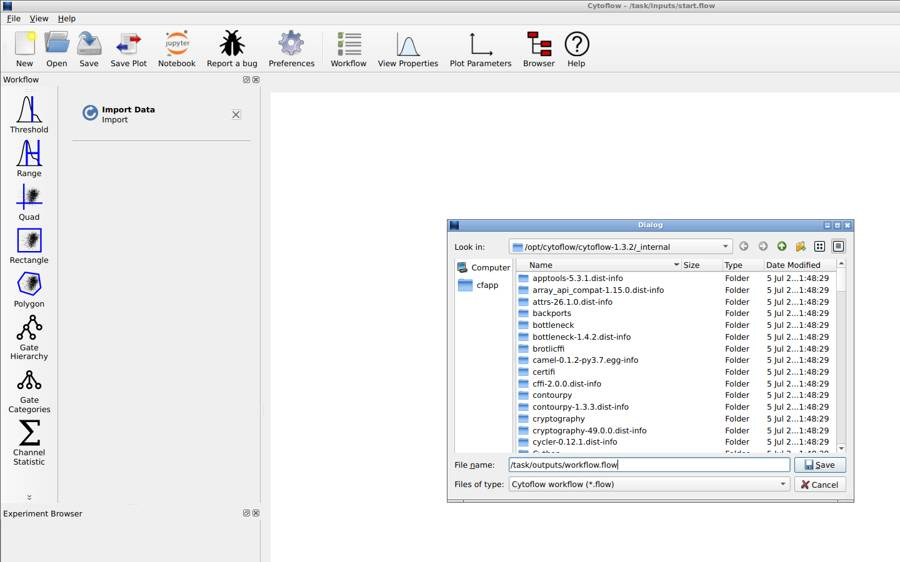
text(await tools.exec_command({cmd:"cu click 1313 745\ncu click 247 184\ncu screenshot /tmp/screen.png","max_output_tokens":1000}));image((await tools.view_image({path:"/tmp/screen.png"})).image_url);
Script completed Wall time 0.3 seconds Output:
{"chunk_id":"e90b16","wall_time_seconds":0.11271228,"exit_code":0,"original_token_count":4,"output":"/tmp/screen.png\n"}
{
"duration_ms": 45000
}Wall time: 45.0035 seconds Sleep completed.
text(await tools.exec_command({cmd:"cu screenshot /tmp/screen.png","max_output_tokens":1000}));image((await tools.view_image({path:"/tmp/screen.png"})).image_url);
Script completed Wall time 0.1 seconds Output:
{"chunk_id":"a95750","wall_time_seconds":0.00000377,"exit_code":0,"original_token_count":4,"output":"/tmp/screen.png\n"}text(await tools.exec_command({cmd:"ps -eo pid,pcpu,pmem,rss,etime,args --sort=-rss | head -8\nfree -h\nls -lh /task/inputs/raw/ | head -6","max_output_tokens":2000}));
Script completed
Wall time 0.1 seconds
Output:
{"chunk_id":"f11b3c","wall_time_seconds":0.00000328,"exit_code":0,"original_token_count":2477,"output":"Warning: truncated output (original token count: 2477)\nTotal output lines: 17\n\n PID %CPU %MEM RSS ELAPSED COMMAND\n 861 7.0 83.5 6804280 02:19 /opt/cytoflow/cytoflow-1.3.2/cytoflow --multiprocessing-fork tracker_fd=10 pipe_handle=14\n 844 2.8 6.7 550652 02:22 /opt/cytoflow/cytoflow-1.3.2/cytoflow\n 7366 0.8 1.6 133748 01:30 /root/.nvm/versions/node/v22.23.4/lib/node_modules/@openai/codex/node_modules/@openai/codex-linux-x64/vendor/x86_64-unknown-linux-musl/bin/codex exec --dangerously-bypass-approvals-and-sandbox --skip-git-repo-check --model gpt-6-astra --json --enable unified_exec -c model_reasoning_effort=xhigh -- # Gate plate 230306 (AAV serotype panel, iPSC-derived neurons) in Cytoflow Goal: gate all 42 wells of this plate down to GFP+ live single cells in Cytoflow, report event counts per population, and flag every well whose data should not be used. ## Experiment - Cells: WT PGP1 iPSC-derived neurons in a 24-well culture format. This plate is biological replicate 2 of an AAV serotype panel. - Treatment: - self-complementary AAV1, 2, 4, 6, 8, 9 or DJ, all carrying the same CMV-GFP construct; - doses 5e3, 1e4 or 5e4 vg/cell, each dose in duplicate wells; - harvested 72 h after transduction. - Staining, on live adherent cells before trypsinisation: - Zombie NIR 1:500, 15 min; - anti-NCAM-BV421 1:200, 30 min; - resuspended in PBS + 2% FBS. - Acquisition: Attune NxT, 06-Mar-2023, one FCS file per well. Notebook voltages: FSC 30, SSC 300, BL1 250, VL1 300, RL3 300. - Plate layout: - `plate_layout.csv` gives the dose and duplicate number of each well, taken from the notebook flow plate map. - The serotype of each well is not recorded in that map and is not needed for this task. - No biological conclusion is requested. ## Inputs | Path | Content | |---|---| | `/task/inputs/raw/` | 42 FCS 3.1 files, `Serotype panel_2_Rep2_Group_<well>.fcs` (wells A1-A12, B1-B12, C1-C12, D1-D6) | | `/task/inputs/plate_layout.csv` | `file, well, dose_vg_per_cell, replicate, is_control, control_type` | | `/task/inputs/start.flow` | Cytoflow workflow with the Import step already configured: one tube per file, conditions taken from `plate_layout.csv` | | `/task/inputs/gating_strategy.md` | Written gating strategy: population order, axes, gate shapes | ## Start 1. In Cytoflow, choose File -> Open, paste `/task/inputs/start.flow`, and answer Yes to run it. The plate is about 34 M events, so the import takes several minutes. 2. Leave the Import step's events-per-sample setting unset, so the full data are used. 3. Add the four gates after the Import step, in the order given in `gating_strategy.md`. ## Channels On-screen channel names come from the labels stored in the FCS files. On this plate they match the dyes actually used. -H and -W versions of each channel are also present. | Detector ($PnN) | Name shown in Cytoflow | Dye | Marks | Used for | |---|---|---|---|---| | FSC-A | FSC-A | none (scatter) | cell size | Cells | | SSC-A, SSC-H | SSC-A, SSC-H | none (scatter) | granularity | Cells, Singlets; y-axis of Live and GFP_pos | | RL3-A | LiveDead-Zombie NIR-A | Zombie NIR (fixable amine-reactive viability dye) | dead cells (bright); live cells are negative | Live | | BL1-A | AAV-GFP-GFP-A | GFP expressed from the AAV CMV-GFP construct | transduced cells | GFP_pos | | VL1-A | BV421-NCAM-A | anti-NCAM (CD56) BV421 | neuronal surface marker | not gated in this task | | Time | Time | none | acquisition time | QC | ## Populations (report exactly these, in this order) | # | population | parent_population | definition | |---|---|---|---| | 1 | Cells | all_events | intact cells on FSC-A vs SSC-A | | 2 | Singlets | Cells | single cells on SSC-H vs SSC-A | | 3 | Live | Singlets | Zombie NIR (RL3-A) negative | | 4 | GFP_pos | Live | GFP (BL1-A) positive | Use these names as the names of the gate operations in Cytoflow. ## Controls - This plate has no control wells. No untransduced, unstained, Zombie-only or NCAM-only wells were acquired. The notebook's non-transduced and cell-count culture w…477 tokens truncated…nd only if `usable` = `yes`. - `evidence` gives numbers from that well, for example: - total events and gated population counts; - event rate over Time; - low-rate intervals or bursts, with their time position; - end-of-run rate; - % events at the scale maximum. - Rows with `usable` = `no` must end with `confidence: high`, `confidence: medium` or `confidence: low`. ### notes.md - `## Gates`: how each gate was placed and why, including which wells and plots set each fluorescence boundary. - `## Quality control`: how wells were screened. - `## Deviations`: every departure from `gating_strategy.md`, or `None`. ## Constraints - Do all gating in the Cytoflow GUI on screen. - The terminal (Python 3 with numpy, pandas, matplotlib, openpyxl) has no flow-cytometry libraries. Do not parse FCS event data in the terminal, and do not write or edit `workflow.flow` from the terminal. - Gate uncompensated data. Do not add bleedthrough, autofluorescence or bead-calibration operations, and do not subsample. - If you use FlowClean, place it after the four gates. It must not change the counted events. - Use exactly one gate operation per reported population. - Time budget: 3 hours. --- ## How you operate this computer You work from a **terminal** (bash, working directory `/task`). The analysis program, **Cytoflow 1.3.2**, is already running on a virtual screen (1440×900). You see and control that screen with the `cu` command: | Command | What it does | |---|---| | `cu screenshot /tmp/screen.png` | Save a screenshot. Then **open/view the image file** to see the screen. | | `cu click X Y` · `cu click X Y right` · `cu click X Y double` | Mouse click at pixel X,Y | | `cu drag X1 Y1 X2 Y2` · `cu move X Y` · `cu scroll X
… [2,274 more characters not shown]{
"duration_ms": 30000
}Wall time: 30.0271 seconds Sleep completed.
text(await tools.exec_command({cmd:"cu screenshot /tmp/screen.png","max_output_tokens":1000}));image((await tools.view_image({path:"/tmp/screen.png"})).image_url);
Script completed Wall time 0.1 seconds Output:
{"chunk_id":"818e81","wall_time_seconds":0.00000346,"exit_code":0,"original_token_count":4,"output":"/tmp/screen.png\n"}
text(await tools.exec_command({cmd:"cu click 927 482\ncu click 295 354\ncu screenshot /tmp/screen.png","max_output_tokens":1000}));image((await tools.view_image({path:"/tmp/screen.png"})).image_url);
Script completed Wall time 0.3 seconds Output:
{"chunk_id":"3107f7","wall_time_seconds":0.11530589,"exit_code":0,"original_token_count":4,"output":"/tmp/screen.png\n"}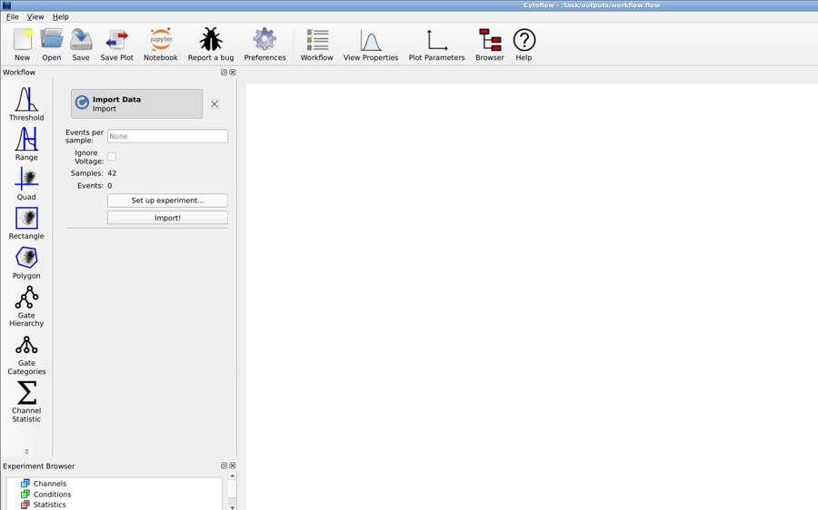
text(await tools.exec_command({cmd:"cu key alt+F4\ncu screenshot /tmp/screen.png","max_output_tokens":1000}));image((await tools.view_image({path:"/tmp/screen.png"})).image_url);
Script completed Wall time 0.1 seconds Output:
{"chunk_id":"9ff676","wall_time_seconds":0.0000038,"exit_code":0,"original_token_count":4,"output":"/tmp/screen.png\n"}text(await tools.exec_command({cmd:"cu click 21 30\ncu click 56 196\ncu screenshot /tmp/screen.png","max_output_tokens":1000}));image((await tools.view_image({path:"/tmp/screen.png"})).image_url);
Script completed Wall time 0.3 seconds Output:
{"chunk_id":"13654e","wall_time_seconds":0.113155118,"exit_code":0,"original_token_count":4,"output":"/tmp/screen.png\n"}
text(await tools.exec_command({cmd:"/opt/cytoflow/cytoflow-1.3.2/cytoflow","yield_time_ms":1000,"max_output_tokens":1000}));
Script completed
Wall time 1.2 seconds
Output:
{"chunk_id":"d1735a","wall_time_seconds":1.001119128,"session_id":83970,"original_token_count":0,"output":""}text(await tools.exec_command({cmd:"cu screenshot /tmp/screen.png","max_output_tokens":1000}));image((await tools.view_image({path:"/tmp/screen.png"})).image_url);
Script completed Wall time 0.1 seconds Output:
{"chunk_id":"8589b9","wall_time_seconds":0.0000042,"exit_code":0,"original_token_count":4,"output":"/tmp/screen.png\n"}
{
"duration_ms": 10000
}Wall time: 10.0035 seconds Sleep completed.
text(await tools.exec_command({cmd:"cu screenshot /tmp/screen.png","max_output_tokens":1000}));image((await tools.view_image({path:"/tmp/screen.png"})).image_url);
Script completed Wall time 0.1 seconds Output:
{"chunk_id":"c57cdc","wall_time_seconds":0.00000514,"exit_code":0,"original_token_count":4,"output":"/tmp/screen.png\n"}
text(await tools.exec_command({cmd:"cu click 91 69\ncu paste '/task/outputs/workflow.flow'\ncu click 1311 744\ncu screenshot /tmp/screen.png","max_output_tokens":1000}));image((await tools.view_image({path:"/tmp/screen.png"})).image_url);
Script completed Wall time 1.6 seconds Output:
{"chunk_id":"f71303","wall_time_seconds":1.449900749,"exit_code":0,"original_token_count":4,"output":"/tmp/screen.png\n"}
text(await tools.exec_command({cmd:"cu click 1316 743\ncu screenshot /tmp/screen.png","max_output_tokens":1000}));image((await tools.view_image({path:"/tmp/screen.png"})).image_url);
Script completed Wall time 0.2 seconds Output:
{"chunk_id":"535c96","wall_time_seconds":0.00491658,"exit_code":0,"original_token_count":4,"output":"/tmp/screen.png\n"}text(await tools.exec_command({cmd:"cu click 835 449\ncu click 239 184\ncu click 294 353\ncu screenshot /tmp/screen.png","max_output_tokens":1000}));image((await tools.view_image({path:"/tmp/screen.png"})).image_url);
Script completed Wall time 0.4 seconds Output:
{"chunk_id":"f23f8e","wall_time_seconds":0.216239219,"exit_code":0,"original_token_count":4,"output":"/tmp/screen.png\n"}text(await tools.exec_command({cmd:"cu click 294 354\ncu screenshot /tmp/screen.png","max_output_tokens":1000}));image((await tools.view_image({path:"/tmp/screen.png"})).image_url);
Script completed Wall time 0.2 seconds Output:
{"chunk_id":"5d7bac","wall_time_seconds":0.013421914,"exit_code":0,"original_token_count":4,"output":"/tmp/screen.png\n"}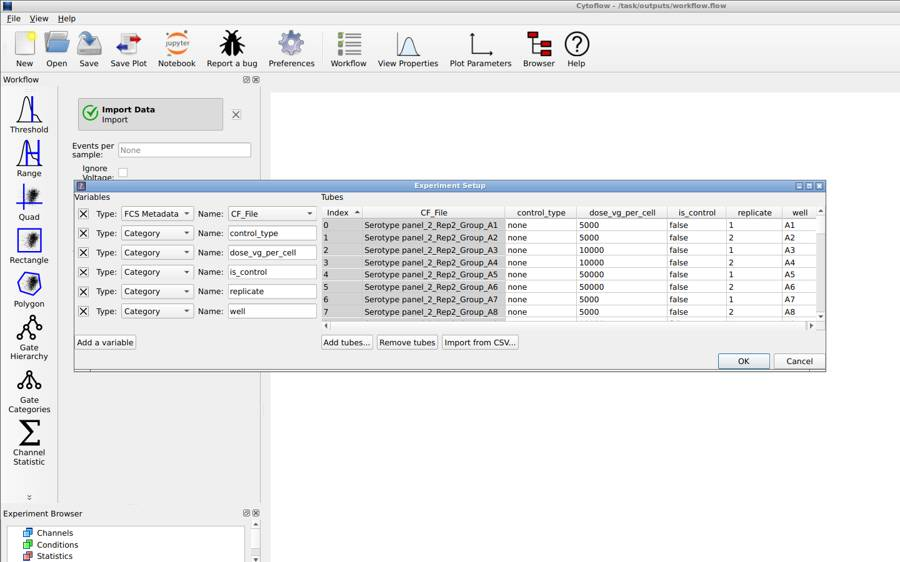
text(await tools.exec_command({cmd:"cu click 1189 578\ncu click 466 70\ncu screenshot /tmp/screen.png","max_output_tokens":1000}));image((await tools.view_image({path:"/tmp/screen.png"})).image_url);
Script completed Wall time 0.3 seconds Output:
{"chunk_id":"6fe383","wall_time_seconds":0.117935259,"exit_code":0,"original_token_count":4,"output":"/tmp/screen.png\n"}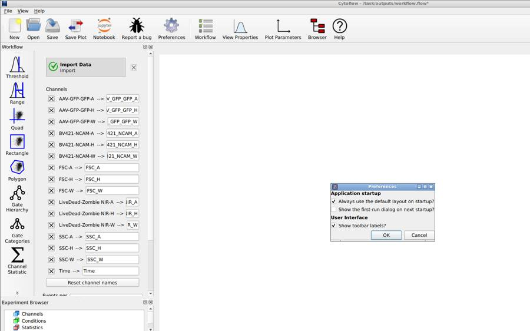
text(await tools.exec_command({cmd:"cu click 1043 640\ncu click 248 769\ncu click 139 300\ncu click 139 300\ncu click 139 300\ncu click 139 300\ncu click 139 300\ncu screenshot /tmp/screen.png","max_output_tokens":1000}));image((await tools.view_image({path:"/tmp/screen.png"})).image_url);
Script completed Wall time 0.8 seconds Output:
{"chunk_id":"cabd04","wall_time_seconds":0.646727705,"exit_code":0,"original_token_count":4,"output":"/tmp/screen.png\n"}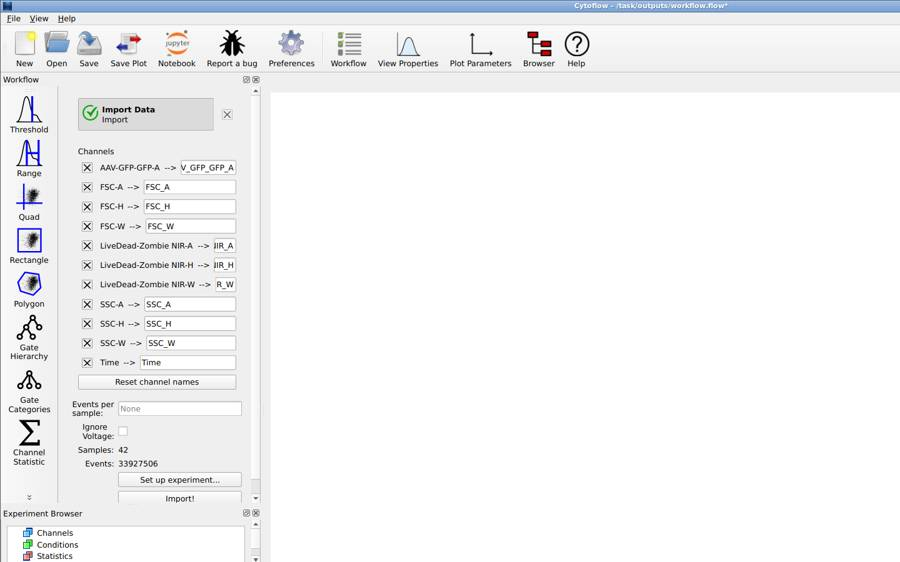
text(await tools.exec_command({cmd:"cu click 139 330\ncu click 139 330\ncu click 139 361\ncu click 139 361\ncu click 139 424\ncu key ctrl+s\ncu screenshot /tmp/screen.png","max_output_tokens":1000}));image((await tools.view_image({path:"/tmp/screen.png"})).image_url);
Script completed Wall time 0.6 seconds Output:
{"chunk_id":"b7a9d2","wall_time_seconds":0.45832869,"exit_code":0,"original_token_count":4,"output":"/tmp/screen.png\n"}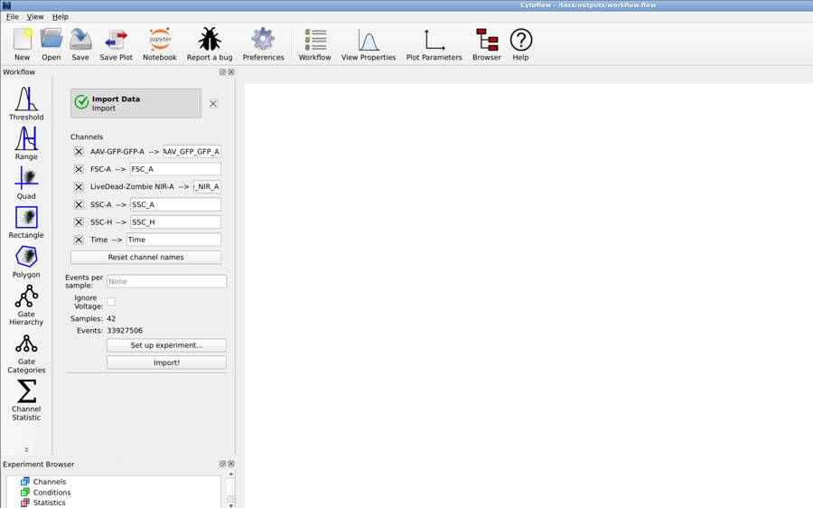
text(await tools.exec_command({cmd:"cu click 293 643\ncu screenshot /tmp/screen.png","max_output_tokens":1000}));image((await tools.view_image({path:"/tmp/screen.png"})).image_url);
Script completed Wall time 0.2 seconds Output:
{"chunk_id":"32729d","wall_time_seconds":0.009527321,"exit_code":0,"original_token_count":4,"output":"/tmp/screen.png\n"}{
"duration_ms": 40000
}Wall time: 40.0055 seconds Sleep completed.
text(await tools.exec_command({cmd:"cu screenshot /tmp/screen.png\nps -C cytoflow -o pid,pcpu,rss,etime","max_output_tokens":1000}));image((await tools.view_image({path:"/tmp/screen.png"})).image_url);
Script completed Wall time 0.1 seconds Output:
{"chunk_id":"b90940","wall_time_seconds":0.00000425,"exit_code":0,"original_token_count":55,"output":"/tmp/screen.png\n PID %CPU RSS ELAPSED\n 859 0.0 0 05:01\n 7590 6.0 569264 01:45\n 7601 0.1 39364 01:43\n 7603 27.4 3285940 01:43\n 7631 0.1 39384 01:41\n 7633 2.1 293820 01:41\n"}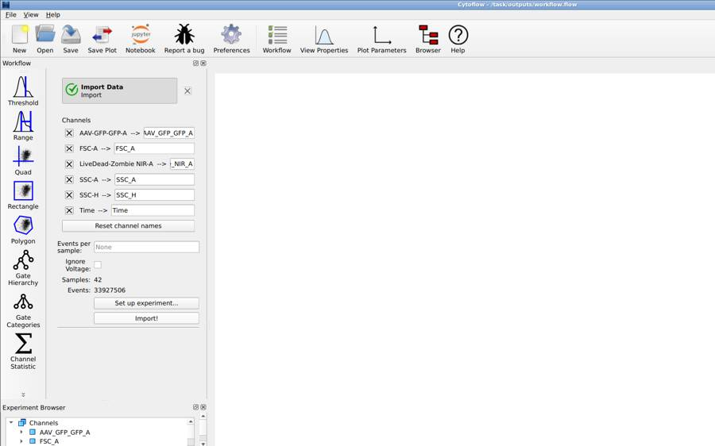
text(await tools.exec_command({cmd:"cu click 46 454\ncu screenshot /tmp/screen.png","max_output_tokens":1000}));image((await tools.view_image({path:"/tmp/screen.png"})).image_url);
Script completed Wall time 0.2 seconds Output:
{"chunk_id":"5eb841","wall_time_seconds":0.010608766,"exit_code":0,"original_token_count":4,"output":"/tmp/screen.png\n"}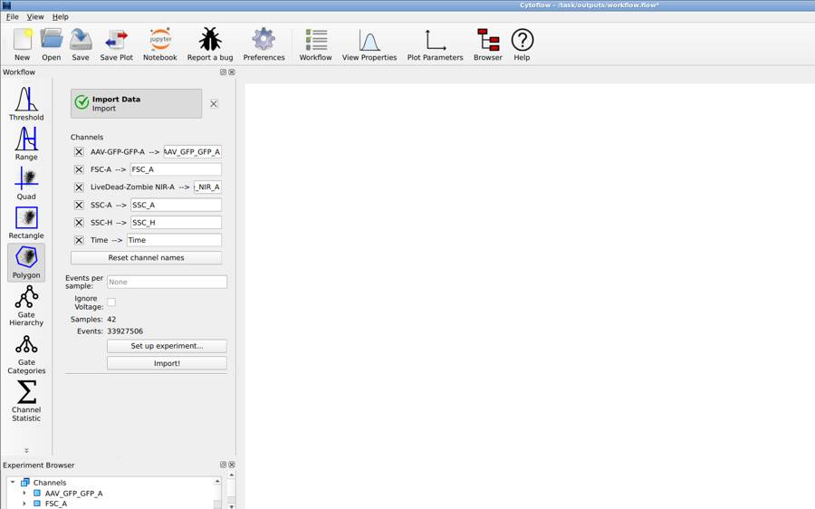
text(await tools.exec_command({cmd:"cu screenshot /tmp/screen.png","max_output_tokens":1000}));image((await tools.view_image({path:"/tmp/screen.png"})).image_url);
Script completed Wall time 0.1 seconds Output:
{"chunk_id":"438e1f","wall_time_seconds":0.00000356,"exit_code":0,"original_token_count":4,"output":"/tmp/screen.png\n"}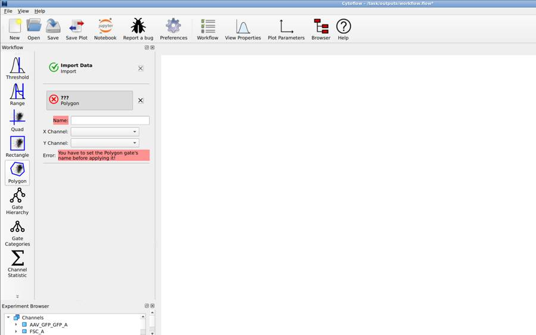
text(await tools.exec_command({cmd:"cu click 275 324\ncu type 'Cells'\ncu click 358 354\ncu screenshot /tmp/screen.png","max_output_tokens":1000}));image((await tools.view_image({path:"/tmp/screen.png"})).image_url);
Script completed Wall time 0.4 seconds Output:
{"chunk_id":"6e059b","wall_time_seconds":0.242886468,"exit_code":0,"original_token_count":4,"output":"/tmp/screen.png\n"}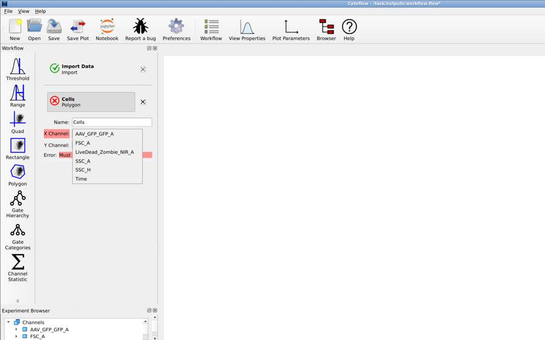
text(await tools.exec_command({cmd:"cu click 236 379\ncu click 359 385\ncu screenshot /tmp/screen.png","max_output_tokens":1000}));image((await tools.view_image({path:"/tmp/screen.png"})).image_url);
Script completed Wall time 0.3 seconds Output:
{"chunk_id":"05c907","wall_time_seconds":0.112440032,"exit_code":0,"original_token_count":4,"output":"/tmp/screen.png\n"}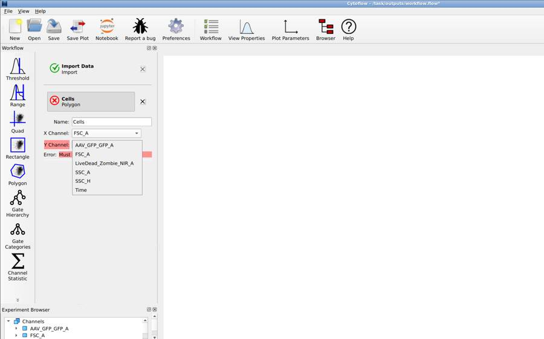
text(await tools.exec_command({cmd:"cu click 227 458\ncu click 657 72\ncu screenshot /tmp/screen.png","max_output_tokens":1000}));image((await tools.view_image({path:"/tmp/screen.png"})).image_url);
Script completed Wall time 0.3 seconds Output:
{"chunk_id":"81baa2","wall_time_seconds":0.113714266,"exit_code":0,"original_token_count":4,"output":"/tmp/screen.png\n"}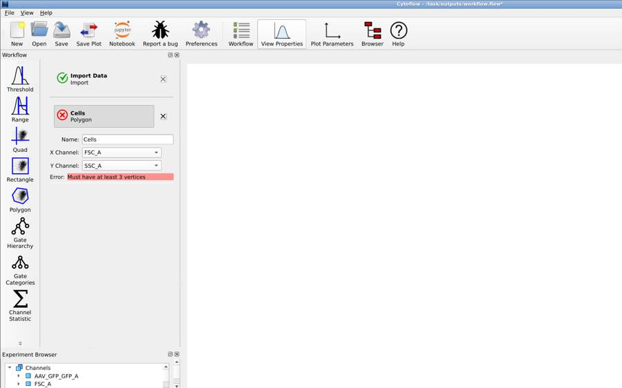
text(await tools.exec_command({cmd:"cu screenshot /tmp/screen.png","max_output_tokens":1000}));image((await tools.view_image({path:"/tmp/screen.png"})).image_url);
Script completed Wall time 0.1 seconds Output:
{"chunk_id":"6c3624","wall_time_seconds":0.00000371,"exit_code":0,"original_token_count":4,"output":"/tmp/screen.png\n"}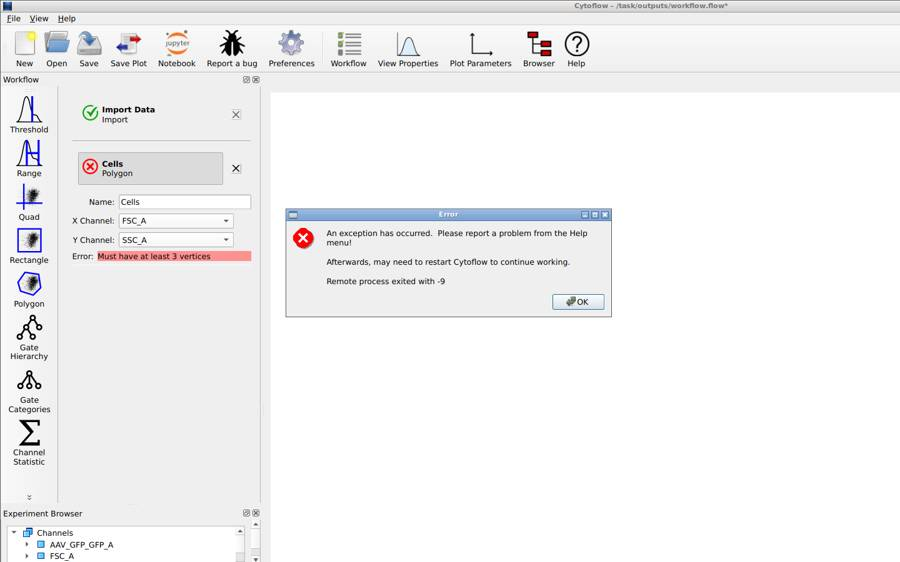
text(await tools.exec_command({cmd:"id\ndf -h /tmp\ncat /proc/self/status | rg CapEff\ncu click 931 483\ncu key ctrl+s\ncu click 21 30\ncu click 57 196","max_output_tokens":1000}));
Script completed
Wall time 0.4 seconds
Output:
{"chunk_id":"3f01f9","wall_time_seconds":0.212033666,"exit_code":0,"original_token_count":39,"output":"uid=0(root) gid=0(root) groups=0(root)\nFilesystem Size Used Avail Use% Mounted on\n/dev/root 504G 5.3G 499G 2% /\nCapEff:\t000001ffffffffff\n"}text(await tools.exec_command({cmd:"fallocate -l 16G /tmp/cytoflow-swap\nchmod 600 /tmp/cytoflow-swap\nmkswap /tmp/cytoflow-swap\nswapon /tmp/cytoflow-swap\nfree -h\n/opt/cytoflow/cytoflow-1.3.2/cytoflow","yield_time_ms":1000,"max_output_tokens":1000}));
Script completed
Wall time 1.2 seconds
Output:
{"chunk_id":"d1b740","wall_time_seconds":1.001119059,"session_id":13916,"original_token_count":82,"output":"Setting up swapspace version 1, size = 16 GiB (17179865088 bytes)\nno label, UUID=39943d42-c81c-4dbc-bf54-186f8141e09e\n total used free shared buff/cache available\nMem: 7.8Gi 988Mi 6.2Gi 5.0Mi 910Mi 6.8Gi\nSwap: 15Gi 0B 15Gi\n"}{
"duration_ms": 10000
}Wall time: 10.0032 seconds Sleep completed.
text(await tools.exec_command({cmd:"cu click 90 70\ncu paste '/task/outputs/workflow.flow'\ncu screenshot /tmp/screen.png","max_output_tokens":1000}));image((await tools.view_image({path:"/tmp/screen.png"})).image_url);
Script completed Wall time 1.5 seconds Output:
{"chunk_id":"0922cf","wall_time_seconds":1.345582683,"exit_code":0,"original_token_count":4,"output":"/tmp/screen.png\n"}text(await tools.exec_command({cmd:"cu click 1311 745\ncu screenshot /tmp/screen.png","max_output_tokens":1000}));image((await tools.view_image({path:"/tmp/screen.png"})).image_url);
Script completed Wall time 0.2 seconds Output:
{"chunk_id":"075fb4","wall_time_seconds":0.015315016,"exit_code":0,"original_token_count":4,"output":"/tmp/screen.png\n"}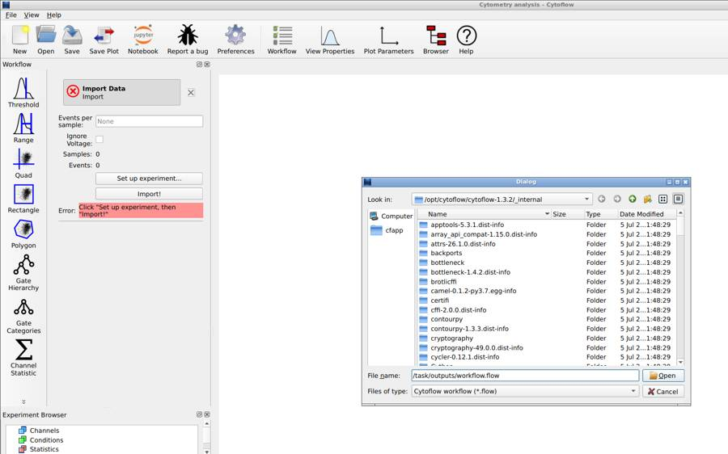
text(await tools.exec_command({cmd:"cu click 1311 745\ncu screenshot /tmp/screen.png","max_output_tokens":1000}));image((await tools.view_image({path:"/tmp/screen.png"})).image_url);
Script completed Wall time 0.2 seconds Output:
{"chunk_id":"b4ed0e","wall_time_seconds":0.005832386,"exit_code":0,"original_token_count":4,"output":"/tmp/screen.png\n"}
text(await tools.exec_command({cmd:"cu click 746 450\ncu click 239 266\ncu click 652 69\ncu screenshot /tmp/screen.png","max_output_tokens":1000}));image((await tools.view_image({path:"/tmp/screen.png"})).image_url);
Script completed Wall time 0.4 seconds Output:
{"chunk_id":"01b509","wall_time_seconds":0.221334988,"exit_code":0,"original_token_count":4,"output":"/tmp/screen.png\n"}
{
"duration_ms": 30000
}Wall time: 30.5858 seconds Sleep completed.
text(await tools.exec_command({cmd:"cu screenshot /tmp/screen.png","max_output_tokens":1000}));image((await tools.view_image({path:"/tmp/screen.png"})).image_url);
Script completed Wall time 0.4 seconds Output:
{"chunk_id":"628aff","wall_time_seconds":0.008786703,"exit_code":0,"original_token_count":4,"output":"/tmp/screen.png\n"}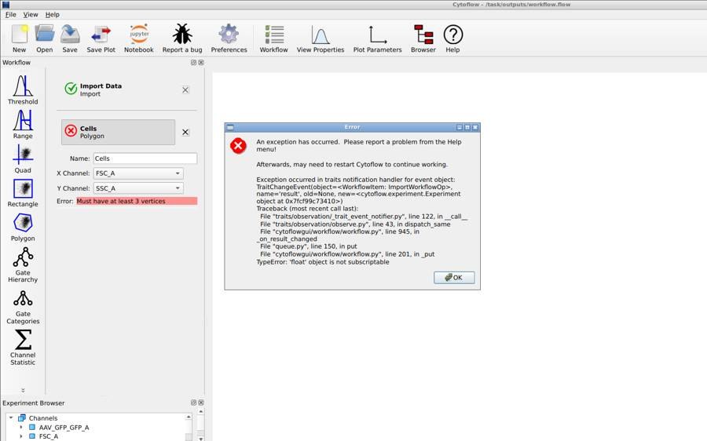
text(await tools.exec_command({cmd:"cu click 925 567\ncu click 651 69\ncu screenshot /tmp/screen.png","max_output_tokens":1000}));image((await tools.view_image({path:"/tmp/screen.png"})).image_url);
Script completed Wall time 0.4 seconds Output:
{"chunk_id":"aa7f3b","wall_time_seconds":0.184893439,"exit_code":0,"original_token_count":4,"output":"/tmp/screen.png\n"}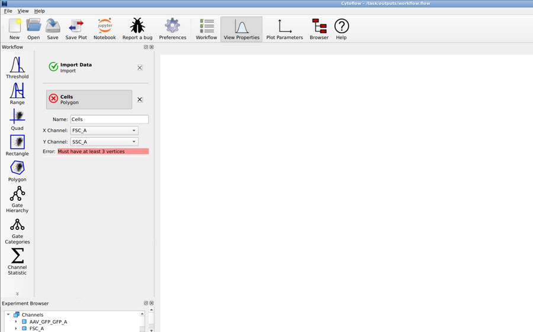
text(await tools.exec_command({cmd:"cu click 61 30\ncu screenshot /tmp/screen.png","max_output_tokens":1000}));image((await tools.view_image({path:"/tmp/screen.png"})).image_url);
Script completed Wall time 0.2 seconds Output:
{"chunk_id":"a1a68f","wall_time_seconds":0.014645859,"exit_code":0,"original_token_count":4,"output":"/tmp/screen.png\n"}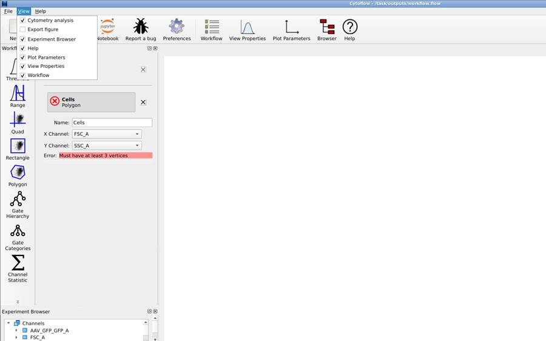
text(await tools.exec_command({cmd:"cu key Escape\ncu click 720 9 double\ncu screenshot /tmp/screen.png","max_output_tokens":1000}));image((await tools.view_image({path:"/tmp/screen.png"})).image_url);
Script completed Wall time 0.4 seconds Output:
{"chunk_id":"79fe91","wall_time_seconds":0.144120659,"exit_code":0,"original_token_count":4,"output":"/tmp/screen.png\n"}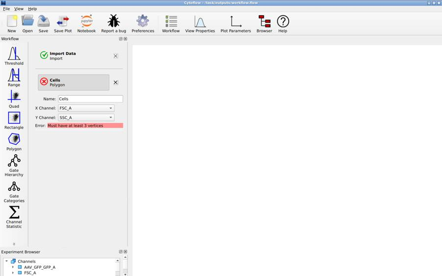
text(await tools.exec_command({cmd:"xwininfo -root -tree | head -30","max_output_tokens":2000}));
Script completed
Wall time 0.3 seconds
Output:
{"chunk_id":"d8213a","wall_time_seconds":0.00000721,"exit_code":0,"original_token_count":327,"output":"\nxwininfo: Window id: 0x21f (the root window) (has no name)\n\n Root window id: 0x21f (the root window) (has no name)\n Parent window id: 0x0 (none)\n 16 children:\n 0xe00024 \"cytoflow\": (\"cytoflow\" \"cytoflow\") 213x170+44+41 +44+41\n 0xe00013 \"Qt Clipboard Requestor Window\": () 3x3+0+0 +0+0\n 0xe00008 \"cytoflow\": () 1x1+0+0 +0+0\n 0xe00004 \"Qt Selection Owner for cytoflow\": () 3x3+0+0 +0+0\n 0xc0000e \"Openbox\": (\"\" (none)) 1x1+-100+-100 +-100+-100\n 0xc00062 (has no name): () 1x1+0+0 +0+0\n 1 child:\n 0xc00063 (has no name): () 1x1+0+0 +1+1\n 0xc00060 (has no name): () 1x1+0+0 +0+0\n 1 child:\n 0xc00061 (has no name): () 1x1+0+0 +1+1\n 0xc0005d (has no name): () 1x1+0+0 +0+0\n 1 child:\n 0xc0005e (has no name): () 1x1+0+0 +1+1\n 0xc00059 (has no name): (\"OPENBOX_FOCUS_CYCLE_POPUP\" \"OPENBOX_FOCUS_CYCLE_POPUP\") 1x1+0+0 +0+0\n 3 children:\n 0xc0005c (has no name): () 1x1+0+0 +1+1\n 0xc0005b (has no name): () 1x1+0+0 +1+1\n 0xc0005a (has no name): () 1x1+0+0 +1+1\n 0xc00056 (has no name): () 1x1+0+0 +0+0\n 2 children:\n 0xc00058 (has no name): () 1x1+0+0 +1+1\n 0xc00057 (has no name): () 1x1+0+0 +1+1\n 0xc00055 (has no name): () 1x1+0+0 +0+0\n"}text(await tools.exec_command({cmd:"xwininfo -root -tree | tail -30\nfree -h","max_output_tokens":2000}));
Script completed
Wall time 0.3 seconds
Output:
{"chunk_id":"80995d","wall_time_seconds":0.00000461,"exit_code":0,"original_token_count":411,"output":" 0xc00d2f (has no name): () 1x25+0+1 +0+1\n 0xc00d2e (has no name): () 1440x18+0+1 +0+1\n 12 children:\n 0xc00d42 (has no name): () 12x12+1392+3 +1392+4\n 0xc00d41 (has no name): () 14x14+4+2 +4+3\n 0xc00d40 (has no name): () 12x12+0+0 +0+1\n 0xc00d3f (has no name): () 12x12+0+0 +0+1\n 0xc00d3e (has no name): () 12x12+1424+3 +1424+4\n 0xc00d3d (has no name): () 12x12+1408+3 +1408+4\n 0xc00d3c (has no name): () 1336x14+52+2 +52+3\n 0xc00d39 (has no name): () 4x18+2078+0 +2078+1\n 0xc00d38 (has no name): () 25x3+2057+0 +2057+1\n 0xc00d37 (has no name): () 4x18+0+0 +0+1\n 0xc00d36 (has no name): () 25x3+0+0 +0+1\n 0xc00d35 (has no name): () 2032x3+25+0 +25+1\n 0xc00d29 (has no name): () 1x1+0+0 +0+0\n 2 children:\n 0xc00d2b (has no name): () 1x1+0+0 +0+0\n 0xc00d2a (has no name): () 1x1+0+0 +0+0\n 0xc00d28 (has no name): () 1x1+0+0 +0+0\n 1 child:\n 0xc00d2d (has no name): () 1x1+0+0 +0+0\n 0xc00d27 (has no name): () 1x1+0+0 +0+0\n 0xc00d26 (has no name): () 1x1+0+0 +0+0\n 1 child:\n 0xc00d2c (has no name): () 1x1+0+0 +0+0\n 0xc00d24 (has no name): () 1440x881+0+19 +0+19\n 1 child:\n 0xc00d25 (has no name): () 1440x881+0+0 +0+19\n\n total used free shared buff/cache available\nMem: 7.8Gi 7.6Gi 99Mi 6.4Mi 253Mi 125Mi\nSwap: 15Gi 10Gi 6.0Gi\n"}text(await tools.exec_command({cmd:"xwininfo -root -tree | rg 'Cytoflow|[0-9]{4}x[0-9]{3,4}'","max_output_tokens":2000}));
Script completed
Wall time 0.1 seconds
Output:
{"chunk_id":"d8c95d","wall_time_seconds":0.000009099,"exit_code":0,"original_token_count":69,"output":" 0xc00d23 (has no name): () 1440x900+0+0 +0+0\n 0xe00006 \"Cytoflow - /task/outputs/workflow.flow\": (\"cytoflow\" \"cytoflow\") 1440x881+0+19 +0+19\n 0xc00d24 (has no name): () 1440x881+0+19 +0+19\n 0xc00d25 (has no name): () 1440x881+0+0 +0+19\n"}text(await tools.exec_command({cmd:"ps -C cytoflow -o pid,pcpu,rss,etime\ncu click 245 177\ncu screenshot /tmp/screen.png","max_output_tokens":1000}));image((await tools.view_image({path:"/tmp/screen.png"})).image_url);
Script completed Wall time 0.5 seconds Output:
{"chunk_id":"afec6f","wall_time_seconds":0.063627255,"exit_code":0,"original_token_count":77,"output":" PID %CPU RSS ELAPSED\n 859 0.0 0 07:16\n 7601 0.0 0 03:58\n 7631 0.0 8 03:56\n 7633 0.9 8 03:56\n 7920 4.8 86480 01:43\n 7931 0.1 3704 01:41\n 7933 58.3 7350116 01:41\n 7974 0.1 3708 01:38\n 7976 2.2 4628 01:38\n/tmp/screen.png\n"}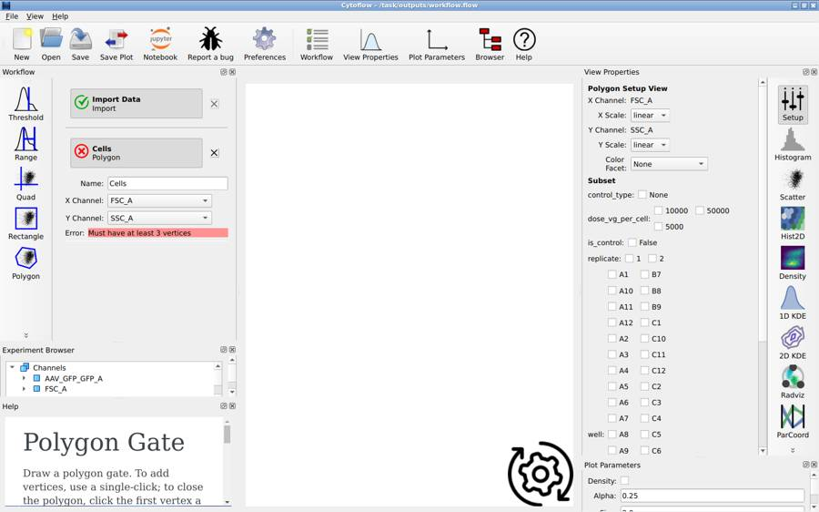
text(await tools.exec_command({cmd:"cu click 1076 482\ncu click 408 714\ncu click 408 616\ncu screenshot /tmp/screen.png","max_output_tokens":1000}));image((await tools.view_image({path:"/tmp/screen.png"})).image_url);
Script completed Wall time 0.5 seconds Output:
{"chunk_id":"6241e7","wall_time_seconds":0.280529351,"exit_code":0,"original_token_count":4,"output":"/tmp/screen.png\n"}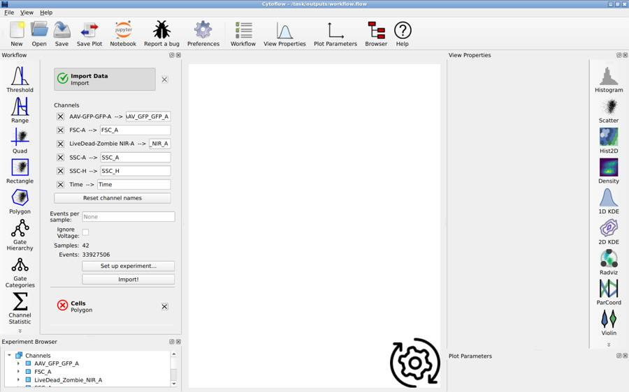
text(await tools.exec_command({cmd:"cu click 235 699\ncu click 408 785\ncu screenshot /tmp/screen.png","max_output_tokens":1000}));image((await tools.view_image({path:"/tmp/screen.png"})).image_url);
Script completed Wall time 0.4 seconds Output:
{"chunk_id":"4ff485","wall_time_seconds":0.165785869,"exit_code":0,"original_token_count":4,"output":"/tmp/screen.png\n"}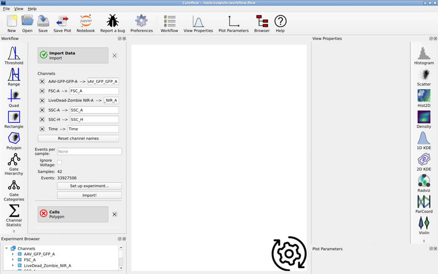
{
"duration_ms": 20000
}Wall time: 20.0689 seconds Sleep completed.
text(await tools.exec_command({cmd:"cu screenshot /tmp/screen.png\nfree -h","max_output_tokens":1000}));image((await tools.view_image({path:"/tmp/screen.png"})).image_url);
Script completed Wall time 0.4 seconds Output:
{"chunk_id":"9024f4","wall_time_seconds":0.020711384,"exit_code":0,"original_token_count":56,"output":"/tmp/screen.png\n total used free shared buff/cache available\nMem: 7.8Gi 7.5Gi 126Mi 508Ki 328Mi 233Mi\nSwap: 15Gi 11Gi 4.6Gi\n"}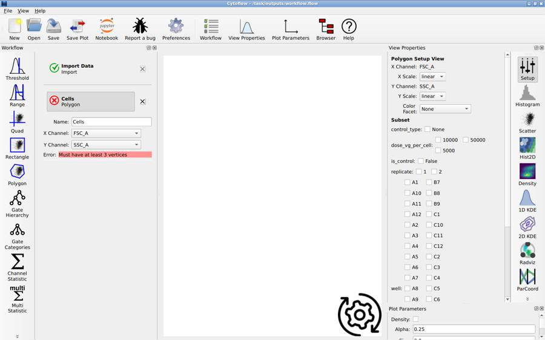
text(await tools.exec_command({cmd:"cu click 1076 482\ncu key ctrl+s\ncu screenshot /tmp/screen.png","max_output_tokens":1000}));image((await tools.view_image({path:"/tmp/screen.png"})).image_url);
Script completed Wall time 0.4 seconds Output:
{"chunk_id":"0df3eb","wall_time_seconds":0.179199963,"exit_code":0,"original_token_count":4,"output":"/tmp/screen.png\n"}text(await tools.exec_command({cmd:"cu click 21 30\ncu click 55 196\ncu screenshot /tmp/screen.png","max_output_tokens":1000}));image((await tools.view_image({path:"/tmp/screen.png"})).image_url);
Script completed Wall time 0.4 seconds Output:
{"chunk_id":"84a7b1","wall_time_seconds":0.159950803,"exit_code":0,"original_token_count":4,"output":"/tmp/screen.png\n"}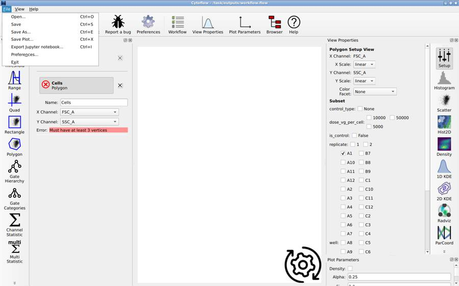
text(await tools.exec_command({cmd:"cu click 54 197\ncu screenshot /tmp/screen.png","max_output_tokens":1000}));image((await tools.view_image({path:"/tmp/screen.png"})).image_url);
Script completed Wall time 0.2 seconds Output:
{"chunk_id":"bbb7bf","wall_time_seconds":0.020504335,"exit_code":0,"original_token_count":4,"output":"/tmp/screen.png\n"}text(await tools.exec_command({cmd:"/opt/cytoflow/cytoflow-1.3.2/cytoflow","yield_time_ms":1000,"max_output_tokens":1000}));
Script completed
Wall time 1.2 seconds
Output:
{"chunk_id":"5780de","wall_time_seconds":1.001138758,"session_id":51149,"original_token_count":0,"output":""}{
"duration_ms": 10000
}Wall time: 10.0031 seconds Sleep completed.
text(await tools.exec_command({cmd:"cu screenshot /tmp/screen.png","max_output_tokens":1000}));image((await tools.view_image({path:"/tmp/screen.png"})).image_url);
Script completed Wall time 0.1 seconds Output:
{"chunk_id":"74e992","wall_time_seconds":0.00000339,"exit_code":0,"original_token_count":4,"output":"/tmp/screen.png\n"}text(await tools.exec_command({cmd:"ps -C cytoflow -o pid,ppid,pcpu,rss,etime\nfree -h","max_output_tokens":1000}));
Script completed
Wall time 0.0 seconds
Output:
{"chunk_id":"ebf804","wall_time_seconds":0.00000369,"exit_code":0,"original_token_count":157,"output":" PID PPID %CPU RSS ELAPSED\n 859 1 0.0 0 08:42\n 7601 1 0.0 0 05:24\n 7631 1 0.0 8 05:21\n 7633 1 0.6 8 05:21\n 7920 838 3.4 119700 03:09\n 7931 7920 0.0 308 03:06\n 7933 7920 62.6 737952 03:06\n 7974 1 0.0 308 03:03\n 7976 1 1.1 308 03:03\n 8245 1 0.8 39444 00:17\n 8247 1 12.9 294092 00:17\n total used free shared buff/cache available\nMem: 7.8Gi 1.7Gi 5.4Gi 44Ki 902Mi 6.1Gi\nSwap: 15Gi 4.2Gi 11Gi\n"}text(await tools.write_stdin({session_id:51149,chars:"",yield_time_ms:1000,max_output_tokens:1500}));
Script completed
Wall time 0.1 seconds
Output:
{"chunk_id":"22d322","wall_time_seconds":0.051076797,"exit_code":1,"original_token_count":108,"output":"QStandardPaths: XDG_RUNTIME_DIR not set, defaulting to '/tmp/runtime-root'\nQXcbIntegration: Cannot create platform OpenGL context, neither GLX nor EGL are enabled\ntraits/etsconfig/etsconfig.py:425: UserWarning: Environment variable \"HOME\" not set, setting home directory to /tmp\n[8234:8234:1105/082414.891539:ERROR:zygote_host_impl_linux.cc(90)] Running as root without --no-sandbox is not supported. See https://crbug.com/638180.\n"}text(await tools.exec_command({cmd:"kill 7920 7933\nQTWEBENGINE_DISABLE_SANDBOX=1 /opt/cytoflow/cytoflow-1.3.2/cytoflow","yield_time_ms":1000,"max_output_tokens":1000}));
Script completed
Wall time 1.2 seconds
Output:
{"chunk_id":"aeb2fd","wall_time_seconds":1.001058719,"session_id":30872,"original_token_count":0,"output":""}{
"duration_ms": 8000
}Wall time: 8.0029 seconds Sleep completed.
text(await tools.exec_command({cmd:"cu screenshot /tmp/screen.png","max_output_tokens":1000}));image((await tools.view_image({path:"/tmp/screen.png"})).image_url);
Script completed Wall time 0.1 seconds Output:
{"chunk_id":"cb52d7","wall_time_seconds":0.00000355,"exit_code":0,"original_token_count":4,"output":"/tmp/screen.png\n"}text(await tools.exec_command({cmd:"cu click 90 70\ncu paste '/task/outputs/workflow.flow'\ncu screenshot /tmp/screen.png","max_output_tokens":1000}));image((await tools.view_image({path:"/tmp/screen.png"})).image_url);
Script completed Wall time 1.5 seconds Output:
{"chunk_id":"e85cd2","wall_time_seconds":1.345321864,"exit_code":0,"original_token_count":4,"output":"/tmp/screen.png\n"}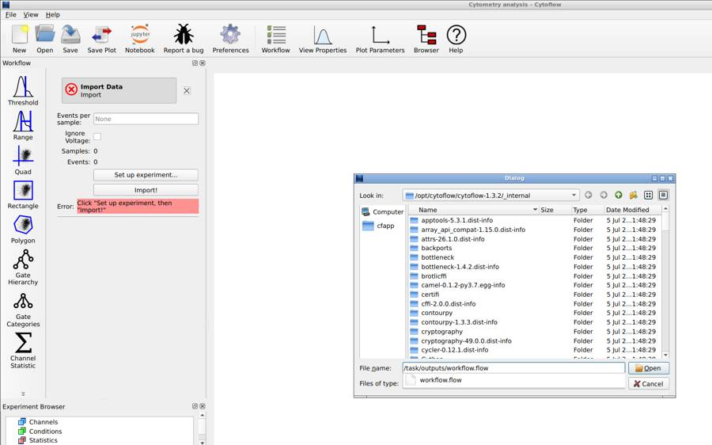
text(await tools.exec_command({cmd:"cu click 1314 744\ncu screenshot /tmp/screen.png","max_output_tokens":1000}));image((await tools.view_image({path:"/tmp/screen.png"})).image_url);
Script completed Wall time 0.2 seconds Output:
{"chunk_id":"756ff0","wall_time_seconds":0.015477206,"exit_code":0,"original_token_count":4,"output":"/tmp/screen.png\n"}text(await tools.exec_command({cmd:"cu click 1314 744\ncu screenshot /tmp/screen.png","max_output_tokens":1000}));image((await tools.view_image({path:"/tmp/screen.png"})).image_url);
Script completed Wall time 0.2 seconds Output:
{"chunk_id":"4b54a5","wall_time_seconds":0.006127784,"exit_code":0,"original_token_count":4,"output":"/tmp/screen.png\n"}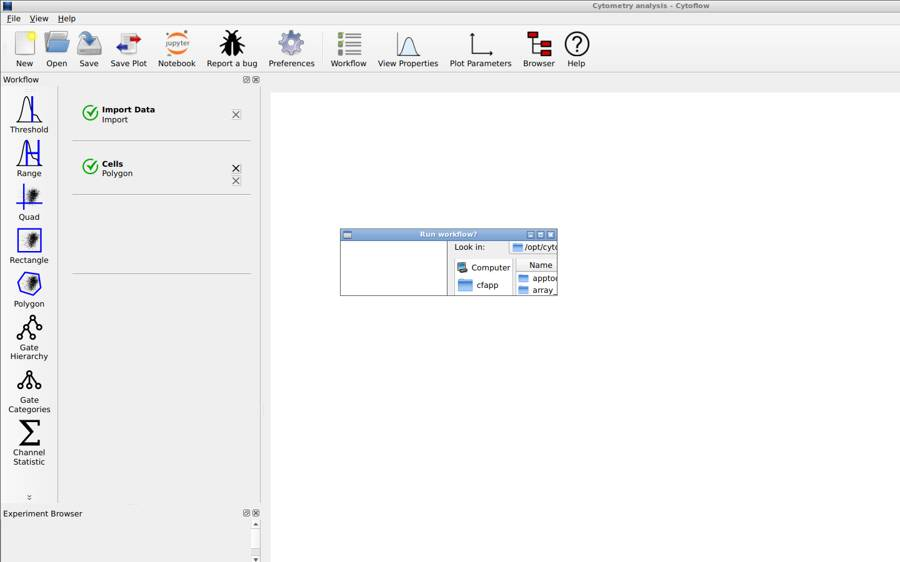
text(await tools.exec_command({cmd:"cu click 747 449\ncu screenshot /tmp/screen.png","max_output_tokens":1000}));image((await tools.view_image({path:"/tmp/screen.png"})).image_url);
Script completed Wall time 0.2 seconds Output:
{"chunk_id":"78243b","wall_time_seconds":0.009890539,"exit_code":0,"original_token_count":4,"output":"/tmp/screen.png\n"}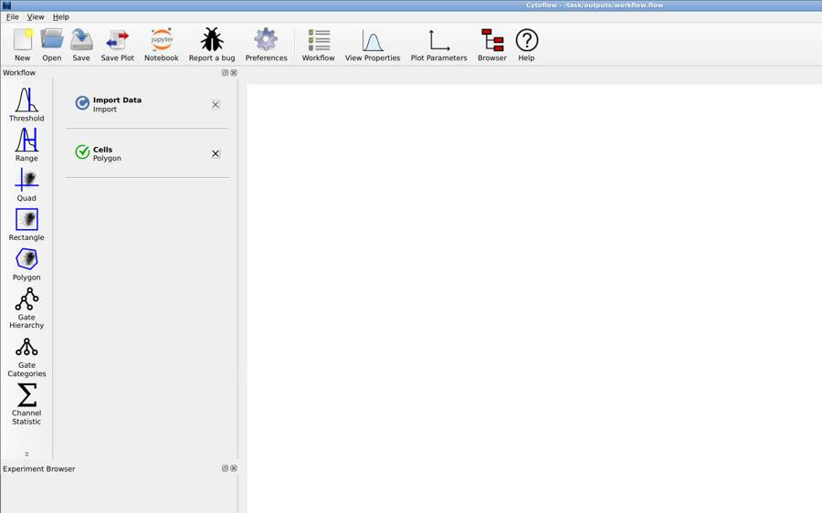
{
"duration_ms": 30000
}Wall time: 30.0056 seconds Sleep completed.
text(await tools.exec_command({cmd:"cu click 239 266\ncu screenshot /tmp/screen.png","max_output_tokens":1000}));image((await tools.view_image({path:"/tmp/screen.png"})).image_url);
Script completed Wall time 0.2 seconds Output:
{"chunk_id":"7c423d","wall_time_seconds":0.009210102,"exit_code":0,"original_token_count":4,"output":"/tmp/screen.png\n"}
text(await tools.exec_command({cmd:"cu screenshot /tmp/screen.png","max_output_tokens":1000}));image((await tools.view_image({path:"/tmp/screen.png"})).image_url);
Script completed Wall time 0.1 seconds Output:
{"chunk_id":"5f628c","wall_time_seconds":0.000003479,"exit_code":0,"original_token_count":4,"output":"/tmp/screen.png\n"}text(await tools.exec_command({cmd:"cu click 651 69\ncu screenshot /tmp/screen.png\nfree -h","max_output_tokens":1000}));image((await tools.view_image({path:"/tmp/screen.png"})).image_url);
Script completed Wall time 0.2 seconds Output:
{"chunk_id":"fb8e66","wall_time_seconds":0.010224758,"exit_code":0,"original_token_count":56,"output":"/tmp/screen.png\n total used free shared buff/cache available\nMem: 7.8Gi 4.6Gi 2.1Gi 11Mi 1.3Gi 3.2Gi\nSwap: 15Gi 521Mi 15Gi\n"}text(await tools.exec_command({cmd:"cu click 720 9 double\ncu screenshot /tmp/screen.png","max_output_tokens":1000}));image((await tools.view_image({path:"/tmp/screen.png"})).image_url);
Script completed Wall time 0.3 seconds Output:
{"chunk_id":"259b14","wall_time_seconds":0.113604917,"exit_code":0,"original_token_count":4,"output":"/tmp/screen.png\n"}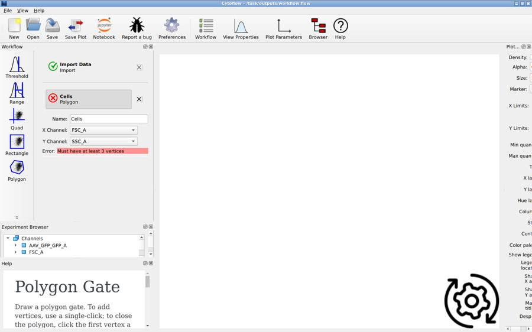
text(await tools.exec_command({cmd:"cu click 651 69\ncu click 769 69\ncu click 408 715\ncu click 408 615\ncu screenshot /tmp/screen.png","max_output_tokens":1000}));image((await tools.view_image({path:"/tmp/screen.png"})).image_url);
Script completed Wall time 0.5 seconds Output:
{"chunk_id":"ad25e2","wall_time_seconds":0.352469421,"exit_code":0,"original_token_count":4,"output":"/tmp/screen.png\n"}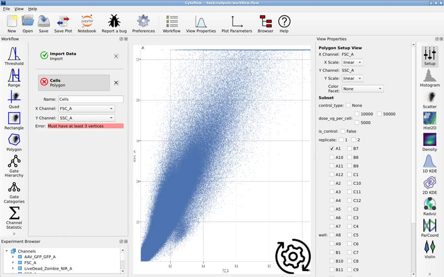
text(await tools.exec_command({cmd:"cu click 1165 202\ncu screenshot /tmp/screen.png","max_output_tokens":1000}));image((await tools.view_image({path:"/tmp/screen.png"})).image_url);
Script completed Wall time 0.2 seconds Output:
{"chunk_id":"10a1ae","wall_time_seconds":0.029449508,"exit_code":0,"original_token_count":4,"output":"/tmp/screen.png\n"}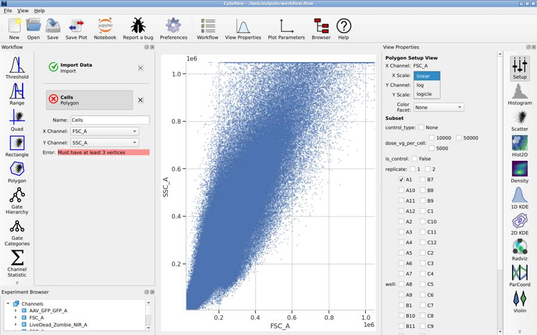
text(await tools.exec_command({cmd:"cu click 1140 251\ncu click 1166 254\ncu screenshot /tmp/screen.png","max_output_tokens":1000}));image((await tools.view_image({path:"/tmp/screen.png"})).image_url);
Script completed Wall time 0.3 seconds Output:
{"chunk_id":"0f410b","wall_time_seconds":0.136941409,"exit_code":0,"original_token_count":4,"output":"/tmp/screen.png\n"}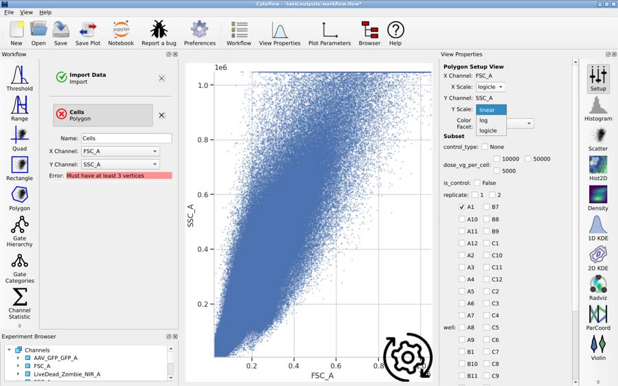
text(await tools.exec_command({cmd:"cu click 1135 304\ncu key ctrl+s\ncu screenshot /tmp/screen.png","max_output_tokens":1000}));image((await tools.view_image({path:"/tmp/screen.png"})).image_url);
Script completed Wall time 0.2 seconds Output:
{"chunk_id":"a84710","wall_time_seconds":0.05990502,"exit_code":0,"original_token_count":4,"output":"/tmp/screen.png\n"}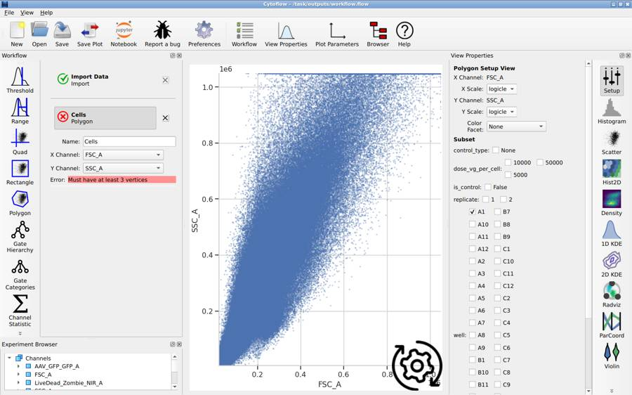
{
"duration_ms": 10000
}Wall time: 10.0041 seconds Sleep completed.
text(await tools.exec_command({cmd:"cu screenshot /tmp/screen.png","max_output_tokens":1000}));image((await tools.view_image({path:"/tmp/screen.png"})).image_url);
Script completed Wall time 0.1 seconds Output:
{"chunk_id":"4d95d1","wall_time_seconds":0.00000395,"exit_code":0,"original_token_count":4,"output":"/tmp/screen.png\n"}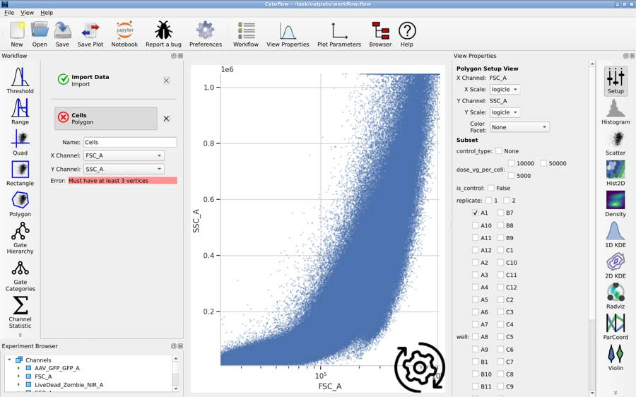
text(await tools.exec_command({cmd:"cu screenshot /tmp/screen.png","max_output_tokens":1000}));image((await tools.view_image({path:"/tmp/screen.png"})).image_url);
Script completed Wall time 0.1 seconds Output:
{"chunk_id":"8ee107","wall_time_seconds":0.00000345,"exit_code":0,"original_token_count":4,"output":"/tmp/screen.png\n"}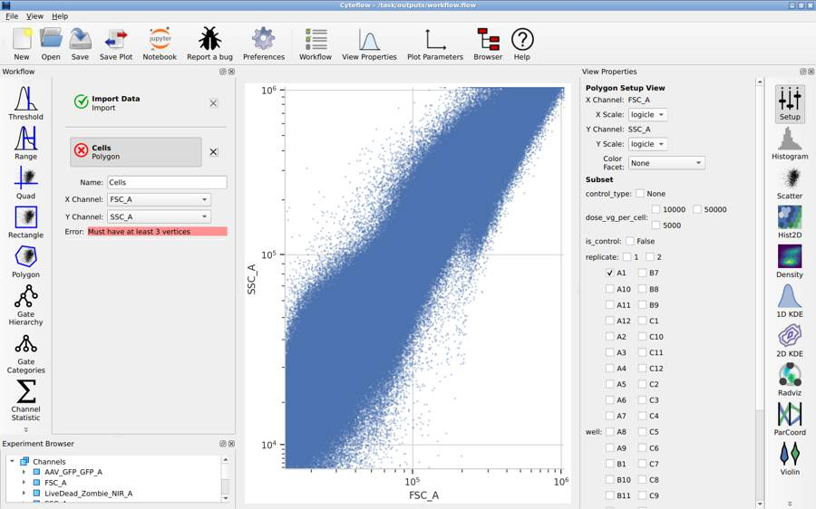
text(await tools.exec_command({cmd:"cu click 769 69\ncu screenshot /tmp/screen.png","max_output_tokens":1000}));image((await tools.view_image({path:"/tmp/screen.png"})).image_url);
Script completed Wall time 0.2 seconds Output:
{"chunk_id":"569634","wall_time_seconds":0.022311007,"exit_code":0,"original_token_count":4,"output":"/tmp/screen.png\n"}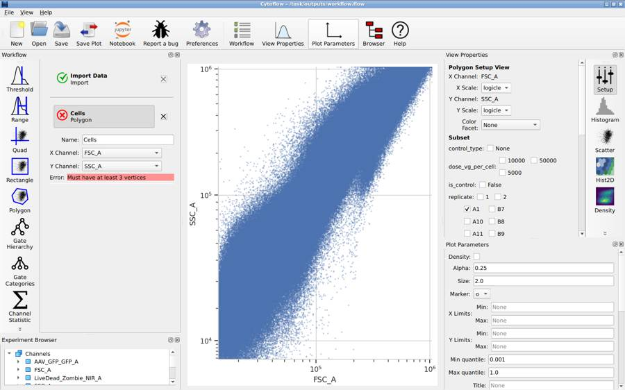
text(await tools.exec_command({cmd:"cu click 1099 591\ncu click 1207 618\ncu key ctrl+a\ncu type '0.5'\ncu click 1223 648\ncu key ctrl+a\ncu type '0.4'\ncu key Tab\ncu screenshot /tmp/screen.png","max_output_tokens":1000}));image((await tools.view_image({path:"/tmp/screen.png"})).image_url);
Script completed Wall time 0.6 seconds Output:
{"chunk_id":"9b64aa","wall_time_seconds":0.468829596,"exit_code":0,"original_token_count":4,"output":"/tmp/screen.png\n"}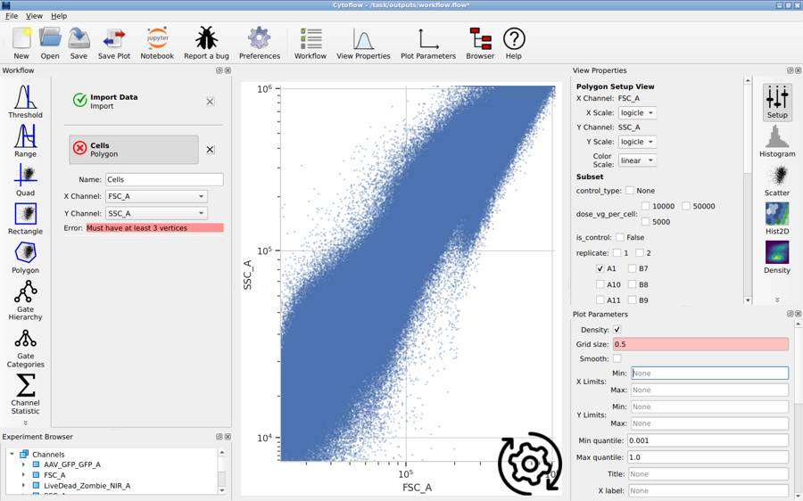
text(await tools.exec_command({cmd:"cu click 1230 617\ncu key ctrl+a\ncu type '100'\ncu key Tab\ncu click 1106 644\ncu screenshot /tmp/screen.png","max_output_tokens":1000}));image((await tools.view_image({path:"/tmp/screen.png"})).image_url);
Script completed Wall time 0.4 seconds Output:
{"chunk_id":"441747","wall_time_seconds":0.253163975,"exit_code":0,"original_token_count":4,"output":"/tmp/screen.png\n"}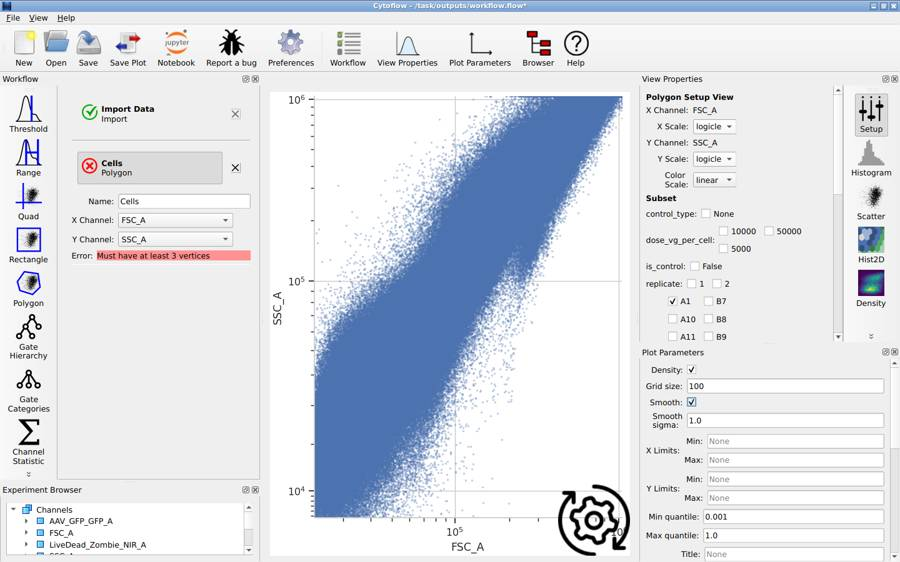
{
"duration_ms": 10000
}Wall time: 10.0037 seconds Sleep completed.
text(await tools.exec_command({cmd:"cu screenshot /tmp/screen.png","max_output_tokens":1000}));image((await tools.view_image({path:"/tmp/screen.png"})).image_url);
Script completed Wall time 0.1 seconds Output:
{"chunk_id":"2cd504","wall_time_seconds":0.0000034,"exit_code":0,"original_token_count":4,"output":"/tmp/screen.png\n"}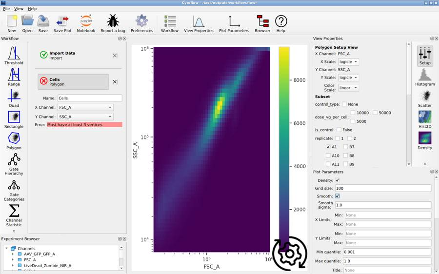
text(await tools.exec_command({cmd:"cu click 620 530\ncu click 680 560\ncu click 835 300\ncu click 875 190\ncu click 875 169\ncu click 800 169\ncu click 670 380\ncu click 620 470\ncu click 620 530\ncu key ctrl+s\ncu screenshot /tmp/screen.png","max_output_tokens":1000}));image((await tools.view_image({path:"/tmp/screen.png"})).image_url);
Script completed Wall time 1.1 seconds Output:
{"chunk_id":"e65933","wall_time_seconds":0.900652117,"exit_code":0,"original_token_count":4,"output":"/tmp/screen.png\n"}text(await tools.exec_command({cmd:"cu click 408 784\ncu click 46 455\ncu screenshot /tmp/screen.png","max_output_tokens":1000}));image((await tools.view_image({path:"/tmp/screen.png"})).image_url);
Script completed Wall time 0.3 seconds Output:
{"chunk_id":"175a48","wall_time_seconds":0.12696334,"exit_code":0,"original_token_count":4,"output":"/tmp/screen.png\n"}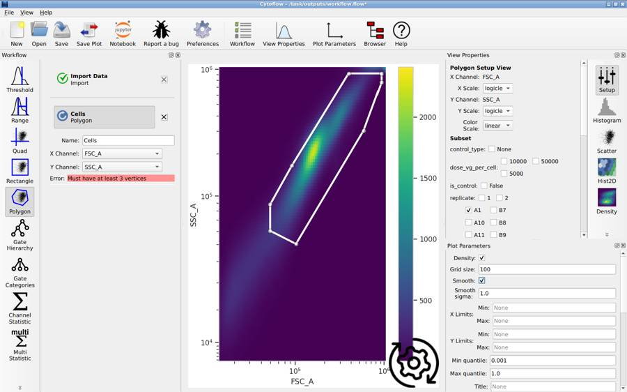
{
"duration_ms": 10000
}Wall time: 10.0633 seconds Sleep completed.
text(await tools.exec_command({cmd:"cu screenshot /tmp/screen.png","max_output_tokens":1000}));image((await tools.view_image({path:"/tmp/screen.png"})).image_url);
Script completed Wall time 0.1 seconds Output:
{"chunk_id":"3f559c","wall_time_seconds":0.00000356,"exit_code":0,"original_token_count":4,"output":"/tmp/screen.png\n"}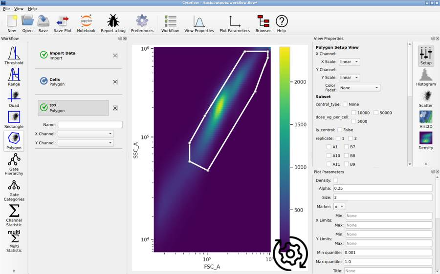
text(await tools.exec_command({cmd:"cu click 267 409\ncu type 'Singlets'\ncu click 1076 482\ncu click 360 439\ncu screenshot /tmp/screen.png","max_output_tokens":1000}));image((await tools.view_image({path:"/tmp/screen.png"})).image_url);
Script completed Wall time 0.6 seconds Output:
{"chunk_id":"6c69db","wall_time_seconds":0.438173974,"exit_code":0,"original_token_count":4,"output":"/tmp/screen.png\n"}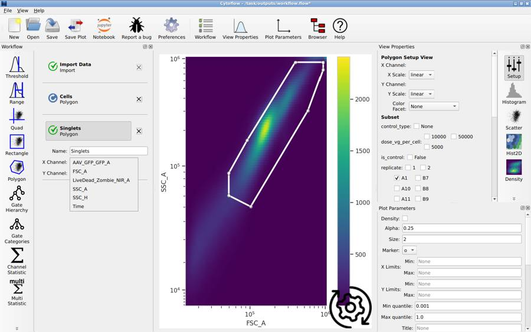
text(await tools.exec_command({cmd:"cu click 225 535\ncu click 362 470\ncu screenshot /tmp/screen.png","max_output_tokens":1000}));image((await tools.view_image({path:"/tmp/screen.png"})).image_url);
Script completed Wall time 0.3 seconds Output:
{"chunk_id":"d70201","wall_time_seconds":0.124398272,"exit_code":0,"original_token_count":4,"output":"/tmp/screen.png\n"}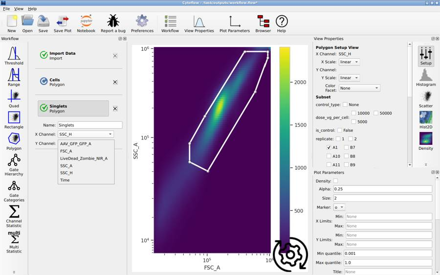
text(await tools.exec_command({cmd:"cu click 222 543\ncu click 1099 591\ncu key ctrl+s\ncu screenshot /tmp/screen.png","max_output_tokens":1000}));image((await tools.view_image({path:"/tmp/screen.png"})).image_url);
Script completed Wall time 0.3 seconds Output:
{"chunk_id":"b37780","wall_time_seconds":0.154519346,"exit_code":0,"original_token_count":4,"output":"/tmp/screen.png\n"}text(await tools.exec_command({cmd:"ps -C cytoflow -o pid,pcpu,rss,etime\nfree -h","max_output_tokens":1000}));text(await tools.clock__curr_time({}));
Script completed
Wall time 0.0 seconds
Output:
{"chunk_id":"13d923","wall_time_seconds":0.00000332,"exit_code":0,"original_token_count":175,"output":" PID %CPU RSS ELAPSED\n 859 0.0 0 12:29\n 7601 0.0 0 09:11\n 7631 0.0 8 09:09\n 7633 0.4 8 09:09\n 7931 0.0 0 06:54\n 7933 30.8 0 06:54\n 7974 0.0 292 06:51\n 7976 0.5 292 06:51\n 8245 0.0 0 04:04\n 8247 0.9 0 04:04\n 8285 1.5 299336 03:36\n 8293 2.1 281232 03:35\n 8304 0.0 34628 03:34\n 8306 1.0 114392 03:34\n 8318 0.0 17216 03:33\n 8320 69.9 6631384 03:33\n total used free shared buff/cache available\nMem: 7.8Gi 7.1Gi 359Mi 7.9Mi 518Mi 649Mi\nSwap: 15Gi 1.7Gi 14Gi\n"}
{"current_time":"2026-11-05 08:28:15 UTC"}{
"duration_ms": 20000
}Wall time: 20.0060 seconds Sleep completed.
text(await tools.exec_command({cmd:"cu screenshot /tmp/screen.png","max_output_tokens":1000}));image((await tools.view_image({path:"/tmp/screen.png"})).image_url);
Script completed Wall time 0.1 seconds Output:
{"chunk_id":"18929c","wall_time_seconds":0.00000936,"exit_code":0,"original_token_count":4,"output":"/tmp/screen.png\n"}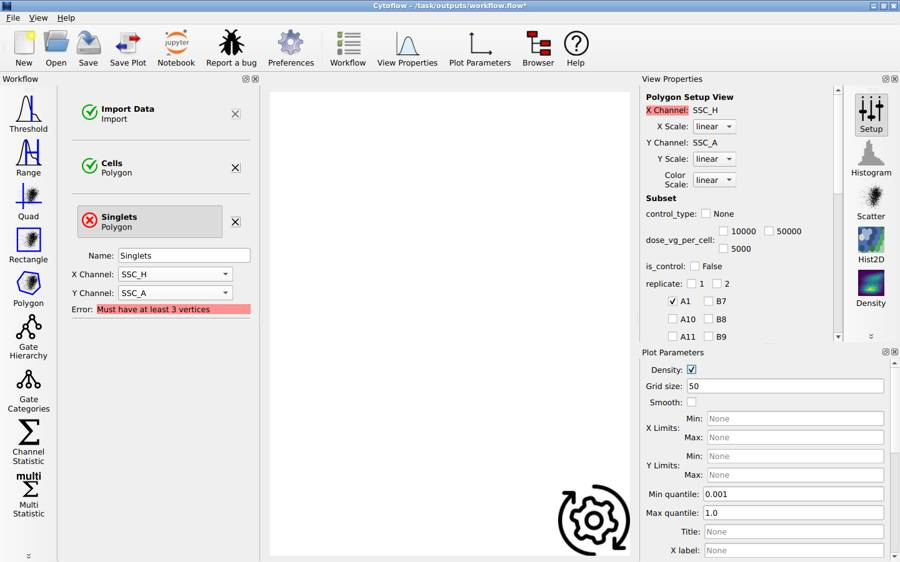
text(await tools.exec_command({cmd:"cu click 769 69\ncu screenshot /tmp/screen.png","max_output_tokens":1000}));image((await tools.view_image({path:"/tmp/screen.png"})).image_url);
Script completed Wall time 0.2 seconds Output:
{"chunk_id":"22e425","wall_time_seconds":0.017562687,"exit_code":0,"original_token_count":4,"output":"/tmp/screen.png\n"}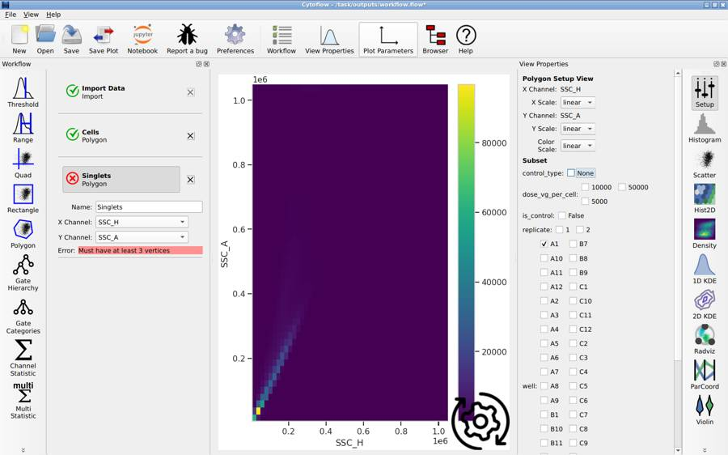
text(await tools.exec_command({cmd:"cu click 230 263\ncu screenshot /tmp/screen.png","max_output_tokens":1000}));image((await tools.view_image({path:"/tmp/screen.png"})).image_url);
Script completed Wall time 0.2 seconds Output:
{"chunk_id":"f190c2","wall_time_seconds":0.029357308,"exit_code":0,"original_token_count":4,"output":"/tmp/screen.png\n"}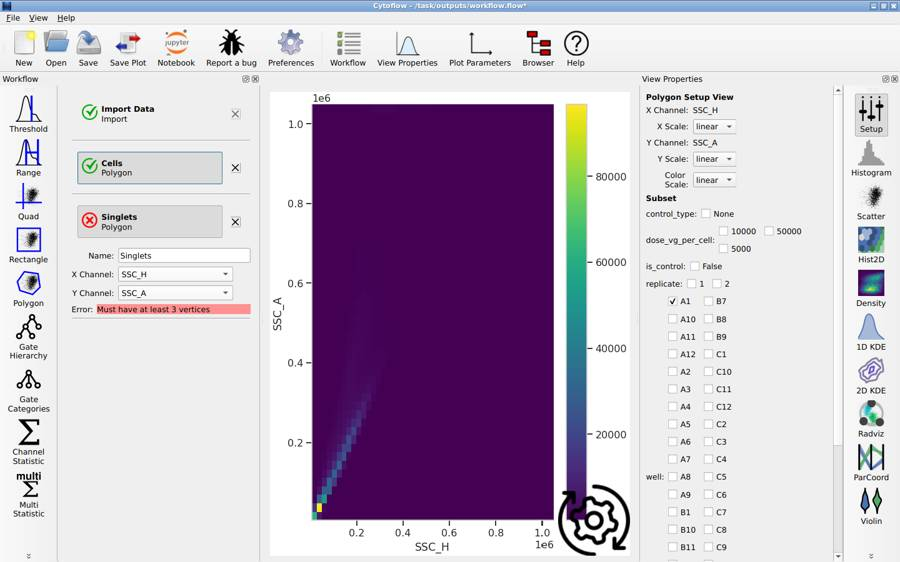
text(await tools.exec_command({cmd:"sleep 1\ncu click 240 488\nsleep 1\ncu screenshot /tmp/screen.png","max_output_tokens":1000}));image((await tools.view_image({path:"/tmp/screen.png"})).image_url);
Script completed Wall time 2.2 seconds Output:
{"chunk_id":"187dcb","wall_time_seconds":2.020409462,"exit_code":0,"original_token_count":4,"output":"/tmp/screen.png\n"}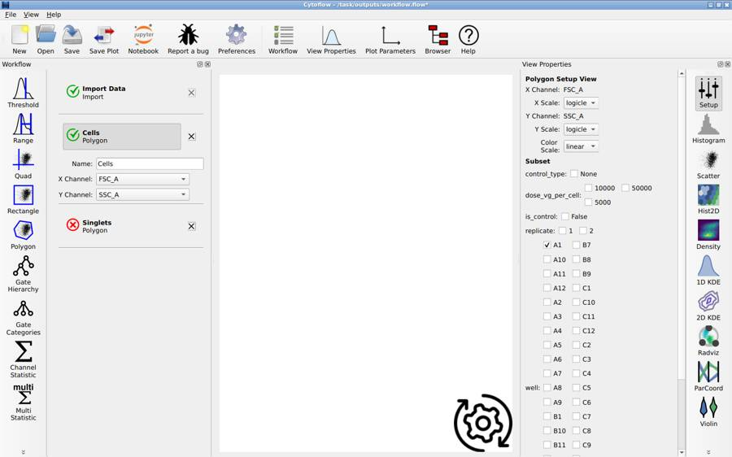
text(await tools.exec_command({cmd:"cu click 235 442\nsleep 2\ncu screenshot /tmp/screen.png","max_output_tokens":1000}));image((await tools.view_image({path:"/tmp/screen.png"})).image_url);
Script completed Wall time 2.2 seconds Output:
{"chunk_id":"624ef4","wall_time_seconds":2.017627373,"exit_code":0,"original_token_count":4,"output":"/tmp/screen.png\n"}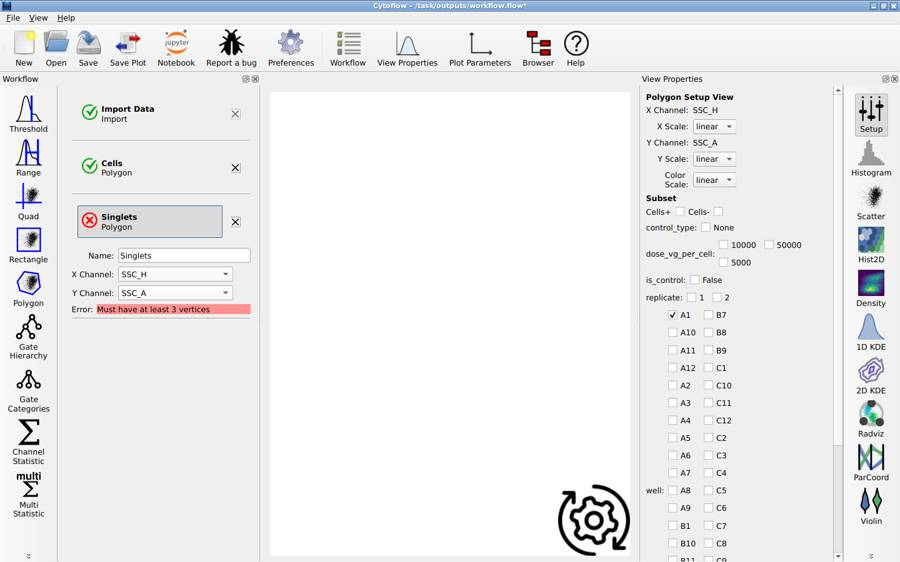
text(await tools.exec_command({cmd:"cu click 1088 338\ncu click 769 69\nsleep 1\ncu screenshot /tmp/screen.png","max_output_tokens":1000}));image((await tools.view_image({path:"/tmp/screen.png"})).image_url);
Script completed Wall time 1.3 seconds Output:
{"chunk_id":"a28868","wall_time_seconds":1.121736046,"exit_code":0,"original_token_count":4,"output":"/tmp/screen.png\n"}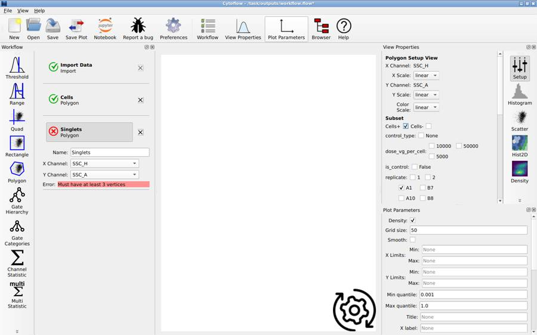
text(await tools.exec_command({cmd:"cu click 1224 618\ncu key ctrl+a\ncu type '160'\ncu click 1232 701\ncu key ctrl+a\ncu type '600000'\ncu key Tab\nsleep 3\ncu screenshot /tmp/screen.png","max_output_tokens":1000}));image((await tools.view_image({path:"/tmp/screen.png"})).image_url);
Script completed Wall time 3.6 seconds Output:
{"chunk_id":"2d14d7","wall_time_seconds":3.433810802,"exit_code":0,"original_token_count":4,"output":"/tmp/screen.png\n"}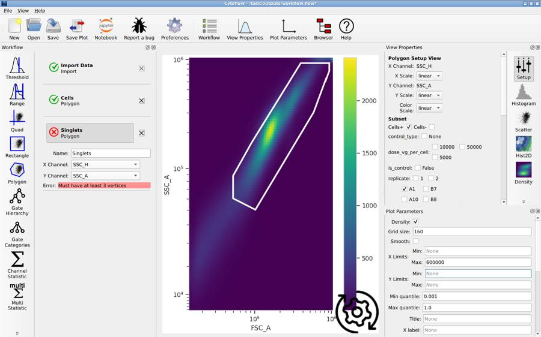
{
"duration_ms": 20000
}Wall time: 20.0046 seconds Sleep completed.
text(await tools.exec_command({cmd:"cu screenshot /tmp/screen.png","max_output_tokens":1000}));image((await tools.view_image({path:"/tmp/screen.png"})).image_url);
Script completed Wall time 0.1 seconds Output:
{"chunk_id":"71013a","wall_time_seconds":0.00000366,"exit_code":0,"original_token_count":4,"output":"/tmp/screen.png\n"}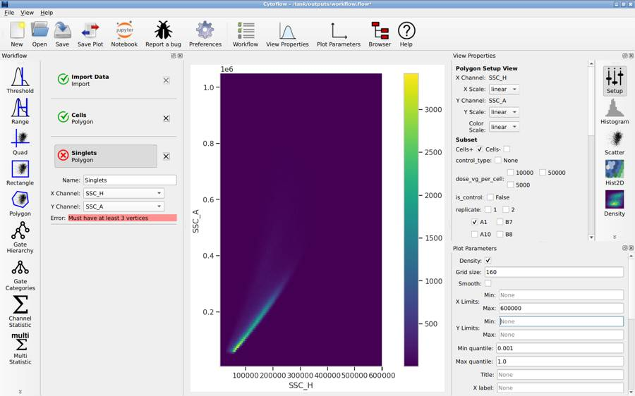
text(await tools.exec_command({cmd:"cu click 1228 701\ncu key ctrl+a\ncu type '800000'\ncu key Tab\ncu click 1167 289\nsleep 1\ncu screenshot /tmp/screen.png","max_output_tokens":1000}));image((await tools.view_image({path:"/tmp/screen.png"})).image_url);
Script completed Wall time 1.5 seconds Output:
{"chunk_id":"bbd1a7","wall_time_seconds":1.326357623,"exit_code":0,"original_token_count":4,"output":"/tmp/screen.png\n"}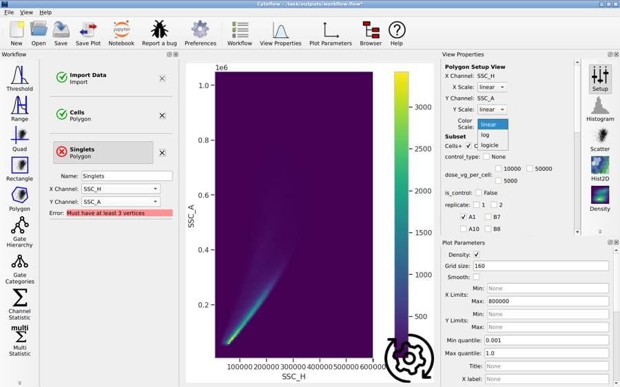
text(await tools.exec_command({cmd:"cu click 1132 314\nsleep 10\ncu screenshot /tmp/screen.png","max_output_tokens":1000}));image((await tools.view_image({path:"/tmp/screen.png"})).image_url);
Script failed
Wall time 10.2 seconds
Output:
{"chunk_id":"721501","wall_time_seconds":10.001261287,"session_id":5299,"original_token_count":0,"output":""}
Script error:
unable to process image: invalid or unsupported image datatext(await tools.exec_command({cmd:"cu screenshot /tmp/screen.png","max_output_tokens":1000}));image((await tools.view_image({path:"/tmp/screen.png"})).image_url);
Script completed Wall time 0.1 seconds Output:
{"chunk_id":"3b8525","wall_time_seconds":0.00000353,"exit_code":0,"original_token_count":4,"output":"/tmp/screen.png\n"}text(await tools.exec_command({cmd:"sleep 8\ncu screenshot /tmp/screen.png","yield_time_ms":10000,"max_output_tokens":1000}));image((await tools.view_image({path:"/tmp/screen.png"})).image_url);
Script completed Wall time 8.1 seconds Output:
{"chunk_id":"71f0f2","wall_time_seconds":7.914999691,"exit_code":0,"original_token_count":4,"output":"/tmp/screen.png\n"}text(await tools.exec_command({cmd:"cu click 513 811\ncu click 522 811\ncu click 829 248\ncu click 754 248\ncu click 513 792\ncu click 513 811\ncu key ctrl+s\nsleep 2\ncu screenshot /tmp/screen.png","max_output_tokens":1000}));image((await tools.view_image({path:"/tmp/screen.png"})).image_url);
Script completed Wall time 2.8 seconds Output:
{"chunk_id":"5d60cf","wall_time_seconds":2.583893094,"exit_code":0,"original_token_count":4,"output":"/tmp/screen.png\n"}text(await tools.exec_command({cmd:"sleep 8\ncu click 46 242\nsleep 2\ncu screenshot /tmp/screen.png","yield_time_ms":15000,"max_output_tokens":1000}));image((await tools.view_image({path:"/tmp/screen.png"})).image_url);
Script completed Wall time 10.2 seconds Output:
{"chunk_id":"ef89bd","wall_time_seconds":10.018138816,"exit_code":0,"original_token_count":4,"output":"/tmp/screen.png\n"}text(await tools.exec_command({cmd:"cu click 257 494\ncu type 'Live'\ncu click 1088 286\ncu click 1107 309\ncu click 1076 473\ncu click 1153 202\nsleep 1\ncu screenshot /tmp/screen.png","max_output_tokens":1000}));image((await tools.view_image({path:"/tmp/screen.png"})).image_url);
Script completed Wall time 1.7 seconds Output:
{"chunk_id":"45c680","wall_time_seconds":1.5491985750000001,"exit_code":0,"original_token_count":4,"output":"/tmp/screen.png\n"}text(await tools.exec_command({cmd:"cu click 1134 251\ncu click 347 526\nsleep 1\ncu screenshot /tmp/screen.png","max_output_tokens":1000}));image((await tools.view_image({path:"/tmp/screen.png"})).image_url);
Script completed Wall time 1.3 seconds Output:
{"chunk_id":"821501","wall_time_seconds":1.124688474,"exit_code":0,"original_token_count":4,"output":"/tmp/screen.png\n"}text(await tools.exec_command({cmd:"cu click 263 574\ncu click 1223 596\ncu key ctrl+a\ncu type '200'\ncu key Tab\nsleep 5\ncu screenshot /tmp/screen.png","max_output_tokens":1000}));image((await tools.view_image({path:"/tmp/screen.png"})).image_url);
Script completed Wall time 5.4 seconds Output:
{"chunk_id":"61d1c5","wall_time_seconds":5.246452489,"exit_code":0,"original_token_count":4,"output":"/tmp/screen.png\n"}text(await tools.exec_command({cmd:"cu click 769 69\nsleep 5\ncu screenshot /tmp/screen.png","max_output_tokens":1000}));image((await tools.view_image({path:"/tmp/screen.png"})).image_url);
Script completed Wall time 5.2 seconds Output:
{"chunk_id":"202bb1","wall_time_seconds":5.019918893,"exit_code":0,"original_token_count":4,"output":"/tmp/screen.png\n"}text(await tools.exec_command({cmd:"cu click 1076 727\ncu click 1076 810\ncu click 1134 474\ncu click 1134 557\ncu click 1134 810\ncu click 1220 236\nsleep 1\ncu screenshot /tmp/screen.png","max_output_tokens":1000}));image((await tools.view_image({path:"/tmp/screen.png"})).image_url);
Script completed Wall time 1.7 seconds Output:
{"chunk_id":"8137be","wall_time_seconds":1.5560301760000002,"exit_code":0,"original_token_count":4,"output":"/tmp/screen.png\n"}text(await tools.exec_command({cmd:"cu click 1121 212\ncu click 1134 895\ncu key ctrl+s\nsleep 8\ncu screenshot /tmp/screen.png","yield_time_ms":10000,"max_output_tokens":1000}));image((await tools.view_image({path:"/tmp/screen.png"})).image_url);
Script completed Wall time 8.3 seconds Output:
{"chunk_id":"071cee","wall_time_seconds":8.155869926,"exit_code":0,"original_token_count":4,"output":"/tmp/screen.png\n"}{
"duration_ms": 20000
}Wall time: 20.0039 seconds Sleep completed.
text(await tools.exec_command({cmd:"cu screenshot /tmp/screen.png","max_output_tokens":1000}));image((await tools.view_image({path:"/tmp/screen.png"})).image_url);
Script completed Wall time 0.1 seconds Output:
{"chunk_id":"288aa2","wall_time_seconds":0.00000391,"exit_code":0,"original_token_count":4,"output":"/tmp/screen.png\n"}text(await tools.exec_command({cmd:"sleep 8\ncu screenshot /tmp/screen.png","max_output_tokens":1000}));image((await tools.view_image({path:"/tmp/screen.png"})).image_url);
Script completed Wall time 8.1 seconds Output:
{"chunk_id":"6da9d2","wall_time_seconds":7.913058118,"exit_code":0,"original_token_count":4,"output":"/tmp/screen.png\n"}text(await tools.exec_command({cmd:"cu click 267 554\ncu key ctrl+a\ncu type '-1000000'\ncu click 269 585\ncu key ctrl+a\ncu type '300'\ncu key Tab\ncu click 769 69\nsleep 1\ncu screenshot /tmp/screen.png","max_output_tokens":1000}));image((await tools.view_image({path:"/tmp/screen.png"})).image_url);
Script completed Wall time 1.8 seconds Output:
{"chunk_id":"843f2f","wall_time_seconds":1.592743733,"exit_code":0,"original_token_count":4,"output":"/tmp/screen.png\n"}text(await tools.exec_command({cmd:"sleep 5\ncu click 47 174\nsleep 2\ncu screenshot /tmp/screen.png","max_output_tokens":1000}));image((await tools.view_image({path:"/tmp/screen.png"})).image_url);
Script completed Wall time 7.2 seconds Output:
{"chunk_id":"b89c37","wall_time_seconds":7.019599711,"exit_code":0,"original_token_count":4,"output":"/tmp/screen.png\n"}text(await tools.exec_command({cmd:"cu click 264 581\ncu key ctrl+a\ncu type 'GFP_pos'\ncu click 1088 309\ncu click 1083 330\ncu click 1107 353\ncu click 769 69\nsleep 1\ncu screenshot /tmp/screen.png","max_output_tokens":1000}));image((await tools.view_image({path:"/tmp/screen.png"})).image_url);
Script completed Wall time 1.8 seconds Output:
{"chunk_id":"a1f7d0","wall_time_seconds":1.652726204,"exit_code":0,"original_token_count":4,"output":"/tmp/screen.png\n"}text(await tools.exec_command({cmd:"cu click 1076 518\ncu click 1076 770\ncu click 1076 855\ncu click 1133 518\ncu click 1133 601\ncu click 1133 855\ncu click 1166 225\nsleep 1\ncu screenshot /tmp/screen.png","max_output_tokens":1000}));image((await tools.view_image({path:"/tmp/screen.png"})).image_url);
Script completed Wall time 1.8 seconds Output:
{"chunk_id":"56b01e","wall_time_seconds":1.658614499,"exit_code":0,"original_token_count":4,"output":"/tmp/screen.png\n"}text(await tools.exec_command({cmd:"cu click 1141 272\ncu click 1228 258\nsleep 1\ncu screenshot /tmp/screen.png","max_output_tokens":1000}));image((await tools.view_image({path:"/tmp/screen.png"})).image_url);
Script completed Wall time 1.3 seconds Output:
{"chunk_id":"5ba383","wall_time_seconds":1.123666718,"exit_code":0,"original_token_count":4,"output":"/tmp/screen.png\n"}text(await tools.exec_command({cmd:"cu click 1128 233\ncu click 358 612\nsleep 1\ncu screenshot /tmp/screen.png","max_output_tokens":1000}));image((await tools.view_image({path:"/tmp/screen.png"})).image_url);
Script completed Wall time 1.3 seconds Output:
{"chunk_id":"303df1","wall_time_seconds":1.120176982,"exit_code":0,"original_token_count":4,"output":"/tmp/screen.png\n"}text(await tools.exec_command({cmd:"cu click 247 614\ncu click 769 69\nsleep 1\ncu screenshot /tmp/screen.png","max_output_tokens":1000}));image((await tools.view_image({path:"/tmp/screen.png"})).image_url);
Script completed Wall time 1.3 seconds Output:
{"chunk_id":"f3159e","wall_time_seconds":1.124985962,"exit_code":0,"original_token_count":4,"output":"/tmp/screen.png\n"}text(await tools.exec_command({cmd:"cu click 1224 596\ncu key ctrl+a\ncu type '200'\ncu key Tab\ncu click 1185 626\nsleep 1\ncu screenshot /tmp/screen.png","max_output_tokens":1000}));image((await tools.view_image({path:"/tmp/screen.png"})).image_url);
Script completed Wall time 1.4 seconds Output:
{"chunk_id":"7d24d7","wall_time_seconds":1.244308415,"exit_code":0,"original_token_count":4,"output":"/tmp/screen.png\n"}text(await tools.exec_command({cmd:"cu click 1131 650\nsleep 8\ncu screenshot /tmp/screen.png","max_output_tokens":1000}));image((await tools.view_image({path:"/tmp/screen.png"})).image_url);
Script completed Wall time 8.2 seconds Output:
{"chunk_id":"0395b0","wall_time_seconds":8.020266071,"exit_code":0,"original_token_count":4,"output":"/tmp/screen.png\n"}text(await tools.exec_command({cmd:"sleep 8\ncu screenshot /tmp/screen.png","max_output_tokens":1000}));image((await tools.view_image({path:"/tmp/screen.png"})).image_url);
Script completed Wall time 8.1 seconds Output:
{"chunk_id":"de6a6b","wall_time_seconds":7.910553489,"exit_code":0,"original_token_count":4,"output":"/tmp/screen.png\n"}text(await tools.exec_command({cmd:"cu click 1231 830\ncu key ctrl+a\ncu type '10000'\ncu key Tab\nsleep 8\ncu screenshot /tmp/screen.png","max_output_tokens":1000}));image((await tools.view_image({path:"/tmp/screen.png"})).image_url);
Script completed Wall time 8.4 seconds Output:
{"chunk_id":"bd051c","wall_time_seconds":8.193235911,"exit_code":0,"original_token_count":4,"output":"/tmp/screen.png\n"}text(await tools.exec_command({cmd:"sleep 8\ncu screenshot /tmp/screen.png","max_output_tokens":1000}));image((await tools.view_image({path:"/tmp/screen.png"})).image_url);
Script completed Wall time 8.1 seconds Output:
{"chunk_id":"54a9d5","wall_time_seconds":7.912948658,"exit_code":0,"original_token_count":4,"output":"/tmp/screen.png\n"}text(await tools.exec_command({cmd:"cu click 1223 596\ncu key ctrl+a\ncu type '10000'\ncu click 1245 830\ncu key ctrl+a\ncu type '2000'\ncu key Tab\nsleep 8\ncu screenshot /tmp/screen.png","max_output_tokens":1000}));image((await tools.view_image({path:"/tmp/screen.png"})).image_url);
Script completed Wall time 8.6 seconds Output:
{"chunk_id":"355a27","wall_time_seconds":8.436514417,"exit_code":0,"original_token_count":4,"output":"/tmp/screen.png\n"}{
"duration_ms": 15000
}Wall time: 15.0045 seconds Sleep completed.
text(await tools.exec_command({cmd:"cu screenshot /tmp/screen.png","max_output_tokens":1000}));image((await tools.view_image({path:"/tmp/screen.png"})).image_url);
Script completed Wall time 0.1 seconds Output:
{"chunk_id":"a16380","wall_time_seconds":0.00000422,"exit_code":0,"original_token_count":4,"output":"/tmp/screen.png\n"}text(await tools.exec_command({cmd:"sleep 8\ncu screenshot /tmp/screen.png","max_output_tokens":1000}));image((await tools.view_image({path:"/tmp/screen.png"})).image_url);
Script completed Wall time 8.1 seconds Output:
{"chunk_id":"e23d95","wall_time_seconds":7.912283911,"exit_code":0,"original_token_count":4,"output":"/tmp/screen.png\n"}text(await tools.exec_command({cmd:"cu click 1167 225\ncu key Home\ncu key Return\nsleep 8\ncu screenshot /tmp/screen.png","max_output_tokens":1000}));image((await tools.view_image({path:"/tmp/screen.png"})).image_url);
Script completed Wall time 8.2 seconds Output:
{"chunk_id":"8bd043","wall_time_seconds":8.05195975,"exit_code":0,"original_token_count":4,"output":"/tmp/screen.png\n"}text(await tools.exec_command({cmd:"sleep 8\ncu screenshot /tmp/screen.png","max_output_tokens":1000}));image((await tools.view_image({path:"/tmp/screen.png"})).image_url);
Script completed Wall time 8.1 seconds Output:
{"chunk_id":"c1717f","wall_time_seconds":7.913457246,"exit_code":0,"original_token_count":4,"output":"/tmp/screen.png\n"}text(await tools.exec_command({cmd:"cu click 1167 225\ncu key End\ncu key Return\ncu click 1226 596\ncu key ctrl+a\ncu type '100000'\ncu key Tab\nsleep 8\ncu screenshot /tmp/screen.png","max_output_tokens":1000}));image((await tools.view_image({path:"/tmp/screen.png"})).image_url);
Script completed Wall time 8.5 seconds Output:
{"chunk_id":"f4c367","wall_time_seconds":8.36379841,"exit_code":0,"original_token_count":4,"output":"/tmp/screen.png\n"}{
"duration_ms": 15000
}Wall time: 15.0036 seconds Sleep completed.
text(await tools.exec_command({cmd:"cu screenshot /tmp/screen.png","max_output_tokens":1000}));image((await tools.view_image({path:"/tmp/screen.png"})).image_url);
Script completed Wall time 0.1 seconds Output:
{"chunk_id":"900919","wall_time_seconds":0.00000363,"exit_code":0,"original_token_count":4,"output":"/tmp/screen.png\n"}text(await tools.exec_command({cmd:"sleep 8\ncu screenshot /tmp/screen.png\nfree -h","max_output_tokens":1000}));image((await tools.view_image({path:"/tmp/screen.png"})).image_url);
Script completed Wall time 8.1 seconds Output:
{"chunk_id":"a9ef0e","wall_time_seconds":7.918619175,"exit_code":0,"original_token_count":56,"output":"/tmp/screen.png\n total used free shared buff/cache available\nMem: 7.8Gi 4.4Gi 2.8Gi 8.2Mi 743Mi 3.3Gi\nSwap: 15Gi 1.2Gi 14Gi\n"}text(await tools.write_stdin({session_id:30872,chars:"",yield_time_ms:1000,max_output_tokens:3000}));
Script completed
Wall time 5.0 seconds
Output:
{"chunk_id":"33095d","wall_time_seconds":5.000816143,"session_id":30872,"original_token_count":109,"output":"QStandardPaths: XDG_RUNTIME_DIR not set, defaulting to '/tmp/runtime-root'\nQXcbIntegration: Cannot create platform OpenGL context, neither GLX nor EGL are enabled\ntraits/etsconfig/etsconfig.py:425: UserWarning: Environment variable \"HOME\" not set, setting home directory to /tmp\n2026-11-05 08:24:44,455 ERROR:root:Error: <class 'IndexError'>: list index out of range\nLocation: File \"run.py\", line 184, in QtMsgHandler\nThread: Main\n"}text(await tools.exec_command({cmd:"cu click 1237 595\ncu key Return\nsleep 5\ncu screenshot /tmp/screen.png","max_output_tokens":1000}));image((await tools.view_image({path:"/tmp/screen.png"})).image_url);
Script completed Wall time 5.2 seconds Output:
{"chunk_id":"ac6caf","wall_time_seconds":5.035290909,"exit_code":0,"original_token_count":4,"output":"/tmp/screen.png\n"}text(await tools.exec_command({cmd:"cu click 271 642\ncu key ctrl+a\ncu paste '500'\ncu key Tab\ncu key ctrl+s\nsleep 3\ncu screenshot /tmp/screen.png","max_output_tokens":1000}));image((await tools.view_image({path:"/tmp/screen.png"})).image_url);
Script completed Wall time 4.6 seconds Output:
{"chunk_id":"321a5a","wall_time_seconds":4.424465254,"exit_code":0,"original_token_count":4,"output":"/tmp/screen.png\n"}text(await tools.exec_command({cmd:"sleep 5\ncu click 47 695\nsleep 2\ncu screenshot /tmp/screen.png","max_output_tokens":1000}));image((await tools.view_image({path:"/tmp/screen.png"})).image_url);
Script completed Wall time 7.2 seconds Output:
{"chunk_id":"532448","wall_time_seconds":7.017951257,"exit_code":0,"original_token_count":4,"output":"/tmp/screen.png\n"}text(await tools.exec_command({cmd:"cu click 268 668\ncu key ctrl+a\ncu paste 'Population_counts'\ncu click 349 697\nsleep 1\ncu screenshot /tmp/screen.png","max_output_tokens":1000}));image((await tools.view_image({path:"/tmp/screen.png"})).image_url);
Script completed Wall time 2.7 seconds Output:
{"chunk_id":"28c00b","wall_time_seconds":2.485227165,"exit_code":0,"original_token_count":4,"output":"/tmp/screen.png\n"}text(await tools.exec_command({cmd:"cu click 212 724\ncu click 319 729\nsleep 1\ncu screenshot /tmp/screen.png","max_output_tokens":1000}));image((await tools.view_image({path:"/tmp/screen.png"})).image_url);
Script completed Wall time 1.3 seconds Output:
{"chunk_id":"c141bc","wall_time_seconds":1.121434237,"exit_code":0,"original_token_count":4,"output":"/tmp/screen.png\n"}text(await tools.exec_command({cmd:"cu click 212 576\ncu click 185 758\ncu click 185 786\ncu click 185 813\ncu click 185 842\ncu click 297 842\ncu key ctrl+s\ncu scroll 317 791 down 5\nsleep 2\ncu screenshot /tmp/screen.png","max_output_tokens":1000}));image((await tools.view_image({path:"/tmp/screen.png"})).image_url);
Script completed Wall time 3.3 seconds Output:
{"chunk_id":"ca8d7c","wall_time_seconds":3.0839553,"exit_code":0,"original_token_count":4,"output":"/tmp/screen.png\n"}text(await tools.exec_command({cmd:"cu scroll 1394 480 down 7\nsleep 1\ncu screenshot /tmp/screen.png","max_output_tokens":1000}));image((await tools.view_image({path:"/tmp/screen.png"})).image_url);
Script completed Wall time 2.0 seconds Output:
{"chunk_id":"d60c7d","wall_time_seconds":1.6343882299999999,"exit_code":0,"original_token_count":4,"output":"/tmp/screen.png\n"}text(await tools.exec_command({cmd:"cu click 769 69\ncu click 1394 891\ncu click 1394 891\ncu click 1394 891\nsleep 1\ncu screenshot /tmp/screen.png","max_output_tokens":1000}));image((await tools.view_image({path:"/tmp/screen.png"})).image_url);
Script completed Wall time 1.5 seconds Output:
{"chunk_id":"fb9841","wall_time_seconds":1.338842861,"exit_code":0,"original_token_count":4,"output":"/tmp/screen.png\n"}text(await tools.exec_command({cmd:"cu click 1399 449\nsleep 2\ncu screenshot /tmp/screen.png","max_output_tokens":1000}));image((await tools.view_image({path:"/tmp/screen.png"})).image_url);
Script completed Wall time 2.2 seconds Output:
{"chunk_id":"44d782","wall_time_seconds":2.019935483,"exit_code":0,"original_token_count":4,"output":"/tmp/screen.png\n"}text(await tools.exec_command({cmd:"sleep 8\ncu click 1247 181\nsleep 1\ncu screenshot /tmp/screen.png","max_output_tokens":1000}));image((await tools.view_image({path:"/tmp/screen.png"})).image_url);
Script completed Wall time 9.2 seconds Output:
{"chunk_id":"528bed","wall_time_seconds":9.027211886,"exit_code":0,"original_token_count":4,"output":"/tmp/screen.png\n"}text(await tools.exec_command({cmd:"cu click 1190 205\ncu click 1183 212\nsleep 1\ncu screenshot /tmp/screen.png","max_output_tokens":1000}));image((await tools.view_image({path:"/tmp/screen.png"})).image_url);
Script completed Wall time 1.3 seconds Output:
{"chunk_id":"2610ce","wall_time_seconds":1.126011928,"exit_code":0,"original_token_count":4,"output":"/tmp/screen.png\n"}text(await tools.exec_command({cmd:"cu click 1145 212\ncu click 1185 241\nsleep 1\ncu screenshot /tmp/screen.png","max_output_tokens":1000}));image((await tools.view_image({path:"/tmp/screen.png"})).image_url);
Script completed Wall time 1.3 seconds Output:
{"chunk_id":"e5c73c","wall_time_seconds":1.123517989,"exit_code":0,"original_token_count":4,"output":"/tmp/screen.png\n"}text(await tools.exec_command({cmd:"cu click 1133 219\ncu click 1185 272\nsleep 1\ncu screenshot /tmp/screen.png","max_output_tokens":1000}));image((await tools.view_image({path:"/tmp/screen.png"})).image_url);
Script completed Wall time 1.6 seconds Output:
{"chunk_id":"08370d","wall_time_seconds":1.171835497,"exit_code":0,"original_token_count":4,"output":"/tmp/screen.png\n"}text(await tools.exec_command({cmd:"cu key Escape\ncu key ctrl+s\nsleep 8\ncu screenshot /tmp/screen.png","max_output_tokens":1000}));image((await tools.view_image({path:"/tmp/screen.png"})).image_url);
Script completed Wall time 8.1 seconds Output:
{"chunk_id":"ca9abf","wall_time_seconds":7.96314716,"exit_code":0,"original_token_count":4,"output":"/tmp/screen.png\n"}text(await tools.exec_command({cmd:"cu click 1216 392\nsleep 1\ncu screenshot /tmp/screen.png","max_output_tokens":1000}));image((await tools.view_image({path:"/tmp/screen.png"})).image_url);
Script completed Wall time 1.2 seconds Output:
{"chunk_id":"e143c8","wall_time_seconds":1.023276246,"exit_code":0,"original_token_count":4,"output":"/tmp/screen.png\n"}text(await tools.exec_command({cmd:"cu paste '/task/outputs/table_memberships.csv'\ncu click 980 567\nsleep 2\ncu screenshot /tmp/screen.png","max_output_tokens":1000}));image((await tools.view_image({path:"/tmp/screen.png"})).image_url);
Script completed Wall time 3.5 seconds Output:
{"chunk_id":"cad2ec","wall_time_seconds":3.348775706,"exit_code":0,"original_token_count":4,"output":"/tmp/screen.png\n"}text(await tools.exec_command({cmd:"ls -lh /task/outputs\nhead -8 /task/outputs/table_memberships.csv","max_output_tokens":2000}));
Script completed
Wall time 0.0 seconds
Output:
{"chunk_id":"db8fba","wall_time_seconds":0.00000321,"exit_code":1,"original_token_count":40,"output":"total 76K\n-rw-rw-r-- 1 cfapp task 74K Nov 5 08:41 workflow.flow\nhead: cannot open '/task/outputs/table_memberships.csv' for reading: No such file or directory\n"}text(await tools.exec_command({cmd:"cu click 1184 211\nsleep 1\ncu screenshot /tmp/screen.png","max_output_tokens":1000}));image((await tools.view_image({path:"/tmp/screen.png"})).image_url);
Script completed Wall time 1.2 seconds Output:
{"chunk_id":"1c24af","wall_time_seconds":1.019242003,"exit_code":0,"original_token_count":4,"output":"/tmp/screen.png\n"}text(await tools.exec_command({cmd:"cu key Escape\ncu move 1070 212\nsleep 2\ncu screenshot /tmp/screen.png","max_output_tokens":1000}));image((await tools.view_image({path:"/tmp/screen.png"})).image_url);
Script completed Wall time 2.1 seconds Output:
{"chunk_id":"591616","wall_time_seconds":1.931490772,"exit_code":0,"original_token_count":4,"output":"/tmp/screen.png\n"}text(await tools.exec_command({cmd:"cu scroll 1241 747 down 12\nsleep 1\ncu screenshot /tmp/screen.png","max_output_tokens":1000}));image((await tools.view_image({path:"/tmp/screen.png"})).image_url);
Script completed Wall time 2.3 seconds Output:
{"chunk_id":"49976b","wall_time_seconds":2.115848574,"exit_code":0,"original_token_count":4,"output":"/tmp/screen.png\n"}text(await tools.exec_command({cmd:"cu click 1084 824\ncu scroll 1239 374 up 15\nsleep 1\ncu click 1185 241\nsleep 1\ncu screenshot /tmp/screen.png","max_output_tokens":1000}));image((await tools.view_image({path:"/tmp/screen.png"})).image_url);
Script completed Wall time 3.8 seconds Output:
{"chunk_id":"d92537","wall_time_seconds":3.632448734,"exit_code":0,"original_token_count":4,"output":"/tmp/screen.png\n"}text(await tools.exec_command({cmd:"cu click 1135 290\ncu click 1185 271\ncu key Home\ncu key Return\ncu click 1185 301\nsleep 1\ncu screenshot /tmp/screen.png","max_output_tokens":1000}));image((await tools.view_image({path:"/tmp/screen.png"})).image_url);
Script completed Wall time 1.4 seconds Output:
{"chunk_id":"5379ff","wall_time_seconds":1.263914293,"exit_code":0,"original_token_count":4,"output":"/tmp/screen.png\n"}text(await tools.exec_command({cmd:"cu click 1150 255\ncu click 1185 331\nsleep 1\ncu screenshot /tmp/screen.png","max_output_tokens":1000}));image((await tools.view_image({path:"/tmp/screen.png"})).image_url);
Script completed Wall time 1.3 seconds Output:
{"chunk_id":"b7f243","wall_time_seconds":1.124209066,"exit_code":0,"original_token_count":4,"output":"/tmp/screen.png\n"}text(await tools.exec_command({cmd:"cu click 1154 262\nsleep 3\ncu screenshot /tmp/screen.png","max_output_tokens":1000}));image((await tools.view_image({path:"/tmp/screen.png"})).image_url);
Script completed Wall time 3.2 seconds Output:
{"chunk_id":"d249fe","wall_time_seconds":3.018666292,"exit_code":0,"original_token_count":4,"output":"/tmp/screen.png\n"}text(await tools.exec_command({cmd:"cu scroll 1244 750 down 14\nsleep 1\ncu screenshot /tmp/screen.png","max_output_tokens":1000}));image((await tools.view_image({path:"/tmp/screen.png"})).image_url);
Script completed Wall time 2.5 seconds Output:
{"chunk_id":"7ed2fd","wall_time_seconds":2.320495421,"exit_code":0,"original_token_count":4,"output":"/tmp/screen.png\n"}text(await tools.exec_command({cmd:"cu scroll 1248 376 up 16\nsleep 1\ncu click 1218 392\nsleep 1\ncu paste '/task/outputs/table_memberships_live_true.csv'\ncu click 980 567\nsleep 2\ncu screenshot /tmp/screen.png","max_output_tokens":1000}));image((await tools.view_image({path:"/tmp/screen.png"})).image_url);
Script completed Wall time 7.2 seconds Output:
{"chunk_id":"655378","wall_time_seconds":7.063912357,"exit_code":0,"original_token_count":4,"output":"/tmp/screen.png\n"}text(await tools.exec_command({cmd:"ls -lh /task/outputs\nhead -8 /task/outputs/table_memberships_live_true.csv","max_output_tokens":2000}));
Script completed
Wall time 0.0 seconds
Output:
{"chunk_id":"ffa7a8","wall_time_seconds":0.00000374,"exit_code":0,"original_token_count":139,"output":"total 84K\n-rw-rw-r-- 1 cfapp task 4.1K Nov 5 08:43 table_memberships_live_true.csv\n-rw-rw-r-- 1 cfapp task 74K Nov 5 08:41 workflow.flow\nNone,None,Singlets = False,None,Singlets = True,None\nNone,None,GFP_pos = False,GFP_pos = False,GFP_pos = True,GFP_pos = True\nwell = A1,Cells = False,62612.0,125.0,22638.0,46.0\nNone,Cells = True,8804.0,185.0,29813.0,336.0\nwell = A10,Cells = False,63571.0,173.0,19132.0,47.0\nNone,Cells = True,4847.0,37.0,21964.0,171.0\nwell = A11,Cells = False,67717.0,160.0,23840.0,69.0\nNone,Cells = True,4146.0,61.0,24611.0,303.0\n"}text(await tools.exec_command({cmd:"cu scroll 1244 751 down 16\nsleep 1\ncu screenshot /tmp/screen.png","max_output_tokens":1000}));image((await tools.view_image({path:"/tmp/screen.png"})).image_url);
Script completed Wall time 2.7 seconds Output:
{"chunk_id":"2791a8","wall_time_seconds":2.521047255,"exit_code":0,"original_token_count":4,"output":"/tmp/screen.png\n"}text(await tools.exec_command({cmd:"cu click 1084 773\ncu click 1140 773\ncu scroll 1248 377 up 17\nsleep 2\ncu click 1218 391\nsleep 1\ncu paste '/task/outputs/table_memberships_live_false.csv'\ncu click 980 567\nsleep 2\ncu screenshot /tmp/screen.png","max_output_tokens":1000}));image((await tools.view_image({path:"/tmp/screen.png"})).image_url);
Script completed Wall time 8.6 seconds Output:
{"chunk_id":"fdc48c","wall_time_seconds":8.381096878,"exit_code":0,"original_token_count":4,"output":"/tmp/screen.png\n"}text(await tools.exec_command({cmd:"cu click 1185 241\nsleep 1\ncu screenshot /tmp/screen.png","max_output_tokens":1000}));image((await tools.view_image({path:"/tmp/screen.png"})).image_url);
Script completed Wall time 1.2 seconds Output:
{"chunk_id":"ee13ad","wall_time_seconds":1.017872118,"exit_code":0,"original_token_count":4,"output":"/tmp/screen.png\n"}text(await tools.exec_command({cmd:"cu key Escape\ncu scroll 1244 752 down 17\nsleep 1\ncu screenshot /tmp/screen.png","max_output_tokens":1000}));image((await tools.view_image({path:"/tmp/screen.png"})).image_url);
Script completed Wall time 2.8 seconds Output:
{"chunk_id":"58d7bf","wall_time_seconds":2.635300659,"exit_code":0,"original_token_count":4,"output":"/tmp/screen.png\n"}text(await tools.exec_command({cmd:"cu click 1134 734\nsleep 1\ncu screenshot /tmp/screen.png","max_output_tokens":1000}));image((await tools.view_image({path:"/tmp/screen.png"})).image_url);
Script completed Wall time 1.2 seconds Output:
{"chunk_id":"e2483f","wall_time_seconds":1.018634796,"exit_code":0,"original_token_count":4,"output":"/tmp/screen.png\n"}text(await tools.exec_command({cmd:"cu click 1140 824\nsleep 1\ncu scroll 1248 379 up 17\nsleep 1\ncu click 1185 241\nsleep 1\ncu screenshot /tmp/screen.png","max_output_tokens":1000}));image((await tools.view_image({path:"/tmp/screen.png"})).image_url);
Script completed Wall time 5.0 seconds Output:
{"chunk_id":"267bfe","wall_time_seconds":4.831496959,"exit_code":0,"original_token_count":4,"output":"/tmp/screen.png\n"}text(await tools.exec_command({cmd:"cu click 1137 241\ncu click 1218 391\nsleep 1\ncu paste '/task/outputs/table_memberships_live_false.csv'\ncu click 980 567\nsleep 2\ncu screenshot /tmp/screen.png","max_output_tokens":1000}));image((await tools.view_image({path:"/tmp/screen.png"})).image_url);
Script completed Wall time 4.7 seconds Output:
{"chunk_id":"a17625","wall_time_seconds":4.565105638,"exit_code":0,"original_token_count":4,"output":"/tmp/screen.png\n"}text(await tools.exec_command({cmd:"ls -lh /task/outputs\nhead -6 /task/outputs/table_memberships_live_false.csv","max_output_tokens":1000}));
Script completed
Wall time 0.0 seconds
Output:
{"chunk_id":"5b3db4","wall_time_seconds":0.00000385,"exit_code":0,"original_token_count":140,"output":"total 92K\n-rw-rw-r-- 1 cfapp task 4.6K Nov 5 08:44 table_memberships_live_false.csv\n-rw-rw-r-- 1 cfapp task 4.1K Nov 5 08:43 table_memberships_live_true.csv\n-rw-rw-r-- 1 cfapp task 74K Nov 5 08:41 workflow.flow\nNone,None,Singlets = False,None,Singlets = True,None\nNone,None,GFP_pos = False,GFP_pos = False,GFP_pos = True,GFP_pos = True\nwell = A1,Cells = False,124415.0,21115.0,71724.0,4807.0\nNone,Cells = True,222388.0,47696.0,346209.0,15813.0\nwell = A10,Cells = False,122849.0,11538.0,81703.0,4328.0\nNone,Cells = True,145723.0,23264.0,357892.0,13266.0\n"}text(await tools.exec_command({cmd:"cu click 1394 891\nsleep 1\ncu screenshot /tmp/screen.png","max_output_tokens":1000}));image((await tools.view_image({path:"/tmp/screen.png"})).image_url);
Script completed Wall time 1.2 seconds Output:
{"chunk_id":"796e83","wall_time_seconds":1.016800234,"exit_code":0,"original_token_count":4,"output":"/tmp/screen.png\n"}text(await tools.exec_command({cmd:"cu click 1400 520\nsleep 2\ncu screenshot /tmp/screen.png","max_output_tokens":1000}));image((await tools.view_image({path:"/tmp/screen.png"})).image_url);
Script completed Wall time 2.2 seconds Output:
{"chunk_id":"d244c8","wall_time_seconds":2.019688255,"exit_code":0,"original_token_count":4,"output":"/tmp/screen.png\n"}text(await tools.exec_command({cmd:"cu click 1396 548\nsleep 2\ncu screenshot /tmp/screen.png","max_output_tokens":1000}));image((await tools.view_image({path:"/tmp/screen.png"})).image_url);
Script completed Wall time 2.2 seconds Output:
{"chunk_id":"0f1ab9","wall_time_seconds":2.017466084,"exit_code":0,"original_token_count":4,"output":"/tmp/screen.png\n"}text(await tools.exec_command({cmd:"cu click 1227 181\nsleep 1\ncu screenshot /tmp/screen.png","max_output_tokens":1000}));image((await tools.view_image({path:"/tmp/screen.png"})).image_url);
Script completed Wall time 1.2 seconds Output:
{"chunk_id":"7e33d5","wall_time_seconds":1.014282764,"exit_code":0,"original_token_count":4,"output":"/tmp/screen.png\n"}text(await tools.exec_command({cmd:"cu click 1176 206\nsleep 2\ncu click 1168 212\nsleep 1\ncu screenshot /tmp/screen.png","max_output_tokens":1000}));image((await tools.view_image({path:"/tmp/screen.png"})).image_url);
Script completed Wall time 3.3 seconds Output:
{"chunk_id":"c106c4","wall_time_seconds":3.130906354,"exit_code":0,"original_token_count":4,"output":"/tmp/screen.png\n"}text(await tools.exec_command({cmd:"cu paste '/task/outputs/table_memberships.csv'\ncu click 979 567\nsleep 1\ncu key ctrl+s\ncu screenshot /tmp/screen.png\nhead -8 /task/outputs/table_memberships.csv","max_output_tokens":1000}));image((await tools.view_image({path:"/tmp/screen.png"})).image_url);
Script completed Wall time 2.6 seconds Output:
{"chunk_id":"79cec3","wall_time_seconds":2.38058008,"exit_code":0,"original_token_count":50,"output":"/tmp/screen.png\nCells,GFP_pos,Live,Singlets,well,FSC_A\n0,0,0,0,A1,124415.0\n0,0,0,0,A10,122849.0\n0,0,0,0,A11,121262.0\n0,0,0,0,A12,135005.0\n0,0,0,0,A2,141910.0\n0,0,0,0,A3,125295.0\n0,0,0,0,A4,124139.0\n"}text(await tools.exec_command({cmd:"cat > /task/outputs/reshape_counts.py <<'PY'\nfrom pathlib import Path\nimport pandas as pd\np=Path('/task/outputs')\nlayout=pd.read_csv('/task/inputs/plate_layout.csv')\nd=pd.read_csv(p/'table_memberships.csv')\nassert set(d.well)==set(layout.well)\nassert not d.duplicated(['well','Cells','Singlets','Live','GFP_pos']).any()\nd['FSC_A']=d['FSC_A'].fillna(0).astype('int64')\nassert d.FSC_A.sum()==33927506, d.FSC_A.sum()\nrows=[]\nsummary=[]\nfor r in layout.itertuples(index=False):\n a=d[d.well.eq(r.well)]\n parent=int(a.FSC_A.sum())\n counts=[parent]\n for pop,par in [('Cells','all_events'),('Singlets','Cells'),('Live','Singlets'),('GFP_pos','Live')]:\n a=a[a[pop].eq(1)]\n n=int(a.FSC_A.sum())\n assert 0<=n<=parent\n rows.append([r.file,r.well,pop,n,par,100*n/parent if parent else 0.0])\n parent=n\n counts.append(n)\n summary.append([r.well,*counts])\nout=pd.DataFrame(rows,columns=['file','well','population','count','parent_population','pct_of_parent'])\nassert len(out)==168\nout.to_csv(p/'counts.csv',index=False)\ns=pd.DataFrame(summary,columns=['well','total','Cells','Singlets','Live','GFP_pos'])\ns.to_csv(p/'qc_population_summary.csv',index=False)\nprint(s.to_string(index=False))\nprint('Total events:',s.total.sum())\nPY\npython /task/outputs/reshape_counts.py","max_output_tokens":3000}));
Script completed
Wall time 0.0 seconds
Output:
{"chunk_id":"7b3154","wall_time_seconds":0.00000425,"exit_code":127,"original_token_count":12,"output":"/bin/bash: line 33: python: command not found\n"}text(await tools.exec_command({cmd:"python3 /task/outputs/reshape_counts.py","max_output_tokens":3000}));
Script completed
Wall time 0.5 seconds
Output:
{"chunk_id":"48e9b1","wall_time_seconds":0.371131244,"exit_code":0,"original_token_count":490,"output":"well total Cells Singlets Live GFP_pos\n A1 978726 671244 392171 30149 336\n A2 935707 623426 440230 21841 288\n A3 925910 617206 434833 24216 400\n A4 892332 603165 425040 20933 369\n A5 986514 653397 448337 23365 499\n A6 755396 506104 370618 15914 442\n A7 848859 549306 382083 19585 180\n A8 710140 470633 343917 17874 225\n A9 958681 613219 404478 26952 138\n A10 870505 567164 393293 22135 171\n A11 844586 532072 379465 24914 303\n A12 947510 607019 423630 23155 471\n B1 733754 434973 302825 21281 34\n B2 728886 430454 300539 20020 77\n B3 667298 397883 289460 13627 206\n B4 598212 352835 265453 16486 130\n B5 837561 519250 370873 26073 263\n B6 877336 536046 373773 29528 315\n B7 954909 601602 413186 12312 215\n B8 918778 579764 411027 13342 332\n B9 862070 559286 401244 14095 320\n B10 1083648 684208 464645 16161 430\n B11 988574 618267 431346 15822 659\n B12 904103 563900 401376 13478 686\n C1 624718 371797 287989 6453 166\n C2 695572 411524 308367 9314 294\n C3 656321 383452 283191 11186 169\n C4 679504 413312 312347 9768 214\n C5 689593 419086 316402 8869 186\n C6 891011 538313 382521 10916 242\n C7 649735 373980 282689 8836 206\n C8 639518 374979 286505 10481 519\n C9 801299 498138 359502 14423 418\n C10 927162 583043 407235 15927 346\n C11 868685 547986 389816 14251 262\n C12 578214 362219 282836 8602 132\n D1 800840 488391 353051 12351 113\n D2 894591 558691 397755 14452 248\n D3 915097 568540 392990 18362 133\n D4 925805 587674 411538 15800 163\n D5 153195 90589 78436 1506 19\n D6 726651 447852 336165 6353 97\nTotal events: 33927506\n"}text(await tools.exec_command({cmd:"cu click 46 891\nsleep 1\ncu screenshot /tmp/screen.png","max_output_tokens":1000}));image((await tools.view_image({path:"/tmp/screen.png"})).image_url);
Script completed Wall time 1.2 seconds Output:
{"chunk_id":"7d3f38","wall_time_seconds":1.018889645,"exit_code":0,"original_token_count":4,"output":"/tmp/screen.png\n"}text(await tools.exec_command({cmd:"cu click 129 483\nsleep 2\ncu screenshot /tmp/screen.png","max_output_tokens":1000}));image((await tools.view_image({path:"/tmp/screen.png"})).image_url);
Script completed Wall time 2.2 seconds Output:
{"chunk_id":"a4232f","wall_time_seconds":2.019626775,"exit_code":0,"original_token_count":4,"output":"/tmp/screen.png\n"}text(await tools.exec_command({cmd:"cu click 462 131\ncu scroll 324 768 down 6\nsleep 1\ncu screenshot /tmp/screen.png","max_output_tokens":1000}));image((await tools.view_image({path:"/tmp/screen.png"})).image_url);
Script completed Wall time 1.8 seconds Output:
{"chunk_id":"4dfff0","wall_time_seconds":1.626412503,"exit_code":0,"original_token_count":4,"output":"/tmp/screen.png\n"}text(await tools.exec_command({cmd:"cu click 265 754\ncu key ctrl+a\ncu paste 'Time_bin'\ncu click 1076 451\ncu click 356 784\nsleep 1\ncu screenshot /tmp/screen.png","max_output_tokens":1000}));image((await tools.view_image({path:"/tmp/screen.png"})).image_url);
Script completed Wall time 2.8 seconds Output:
{"chunk_id":"604126","wall_time_seconds":2.58960404,"exit_code":0,"original_token_count":4,"output":"/tmp/screen.png\n"}text(await tools.exec_command({cmd:"cu click 211 888\nsleep 8\ncu screenshot /tmp/screen.png","max_output_tokens":1000}));image((await tools.view_image({path:"/tmp/screen.png"})).image_url);
Script completed Wall time 8.2 seconds Output:
{"chunk_id":"042369","wall_time_seconds":8.019338696,"exit_code":0,"original_token_count":4,"output":"/tmp/screen.png\n"}text(await tools.exec_command({cmd:"cu click 265 845\ncu key ctrl+a\ncu paste '100000'\ncu key Tab\nsleep 8\ncu screenshot /tmp/screen.png","max_output_tokens":1000}));image((await tools.view_image({path:"/tmp/screen.png"})).image_url);
Script completed Wall time 9.6 seconds Output:
{"chunk_id":"c73f95","wall_time_seconds":9.396993445,"exit_code":0,"original_token_count":4,"output":"/tmp/screen.png\n"}text(await tools.exec_command({cmd:"cat > /task/outputs/read_text_metadata.py <<'PY'\n\"\"\"Read FCS TEXT metadata only; never read the DATA segment or event arrays.\"\"\"\nfrom pathlib import Path\nimport csv, json\nrows=[]\nfor p in Path('/task/inputs/raw').glob('*.fcs'):\n with p.open('rb') as f:\n h=f.read(58)\n start,end=int(h[10:18]),int(h[18:26])\n f.seek(start)\n text=f.read(end-start+1).decode('latin1')\n delim=text[0]\n tokens=text[1:].split(delim)\n # Only standard keys requested below; no event data are accessed.\n def get(k):\n try: return tokens[tokens.index(k)+1]\n except (ValueError,IndexError): return ''\n r={'file':p.name,'well':p.stem.rsplit('_',1)[-1]}\n for k in ['$TOT','$TIMESTEP','$BTIM','$ETIM','$DATE','$CYT','$PAR']:\n r[k]=get(k)\n for i in range(1,int(get('$PAR'))+1):\n n=get(f'$P{i}N')\n if n in ['FSC-A','SSC-A','SSC-H','RL3-A','BL1-A','Time']:\n r[n+'_label']=get(f'$P{i}S')\n r[n+'_range']=get(f'$P{i}R')\n r[n+'_voltage']=get(f'$P{i}V')\n rows.append(r)\nwith open('/task/outputs/qc_text_metadata.csv','w',newline='') as f:\n w=csv.DictWriter(f,fieldnames=rows[0].keys());w.writeheader();w.writerows(rows)\nprint(json.dumps(rows[0],indent=2))\nPY\npython3 /task/outputs/read_text_metadata.py","max_output_tokens":2000}));
Script completed
Wall time 0.1 seconds
Output:
{"chunk_id":"44c004","wall_time_seconds":0.00000404,"exit_code":0,"original_token_count":194,"output":"{\n \"file\": \"Serotype panel_2_Rep2_Group_A2.fcs\",\n \"well\": \"A2\",\n \"$TOT\": \"935707\",\n \"$TIMESTEP\": \"0.001\",\n \"$BTIM\": \"09:29:39\",\n \"$ETIM\": \"09:31:17\",\n \"$DATE\": \"06-Mar-2023\",\n \"$CYT\": \"0A29009 Attune NxT Acoustic Focusing Cytometer (Lasers: BRV6Y)\",\n \"$PAR\": \"16\",\n \"Time_label\": \"Time\",\n \"Time_range\": \"67108864\",\n \"Time_voltage\": \"NA\",\n \"FSC-A_label\": \"FSC-A\",\n \"FSC-A_range\": \"1048576\",\n \"FSC-A_voltage\": \"30\",\n \"SSC-A_label\": \"SSC-A\",\n \"SSC-A_range\": \"1048576\",\n \"SSC-A_voltage\": \"300\",\n \"BL1-A_label\": \"AAV-GFP-GFP-A\",\n \"BL1-A_range\": \"1048576\",\n \"BL1-A_voltage\": \"250\",\n \"RL3-A_label\": \"LiveDead-Zombie NIR-A\",\n \"RL3-A_range\": \"1048576\",\n \"RL3-A_voltage\": \"300\",\n \"SSC-H_label\": \"SSC-H\",\n \"SSC-H_range\": \"1048576\",\n \"SSC-H_voltage\": \"300\"\n}\n"}text(await tools.exec_command({cmd:"python3 - <<'PY'\nimport pandas as pd\nm=pd.read_csv('/task/outputs/qc_text_metadata.csv')\nprint(m[['well','$TOT','$TIMESTEP','$BTIM','$ETIM']].sort_values('well').to_string(index=False))\nfor c in m.columns:\n if c.endswith(('_voltage','_label','_range')) or c in ['$TIMESTEP','$DATE']:\n print(c,m[c].unique())\nPY","max_output_tokens":2000}));
Script completed
Wall time 0.3 seconds
Output:
{"chunk_id":"5d8ff6","wall_time_seconds":0.086929398,"exit_code":0,"original_token_count":563,"output":"well $TOT $TIMESTEP $BTIM $ETIM\n A1 978726 0.001 09:28:23 09:29:09\n A10 870505 0.001 09:46:35 09:48:14\n A11 844586 0.001 09:48:42 09:50:21\n A12 947510 0.001 09:50:50 09:52:28\n A2 935707 0.001 09:29:39 09:31:17\n A3 925910 0.001 09:31:46 09:33:24\n A4 892332 0.001 09:33:53 09:35:31\n A5 986514 0.001 09:36:00 09:37:39\n A6 755396 0.001 09:38:09 09:39:46\n A7 848859 0.001 09:40:14 09:41:53\n A8 710140 0.001 09:42:21 09:44:00\n A9 958681 0.001 09:44:28 09:46:06\n B1 733754 0.001 09:52:57 09:54:36\n B10 1083648 0.001 10:12:00 10:13:39\n B11 988574 0.001 10:14:08 10:15:47\n B12 904103 0.001 10:16:15 10:17:54\n B2 728886 0.001 09:55:04 09:56:43\n B3 667298 0.001 09:57:11 09:58:50\n B4 598212 0.001 09:59:18 10:00:56\n B5 837561 0.001 10:01:24 10:03:03\n B6 877336 0.001 10:03:31 10:05:10\n B7 954909 0.001 10:05:38 10:07:17\n B8 918778 0.001 10:07:46 10:09:24\n B9 862070 0.001 10:09:53 10:11:32\n C1 624718 0.001 10:18:23 10:20:01\n C10 927162 0.001 10:37:24 10:39:02\n C11 868685 0.001 10:39:31 10:41:09\n C12 578214 0.001 10:41:38 10:43:16\n C2 695572 0.001 10:20:29 10:22:08\n C3 656321 0.001 10:22:36 10:24:14\n C4 679504 0.001 10:24:43 10:26:21\n C5 689593 0.001 10:26:49 10:28:28\n C6 891011 0.001 10:28:56 10:30:34\n C7 649735 0.001 10:31:03 10:32:42\n C8 639518 0.001 10:33:10 10:34:49\n C9 801299 0.001 10:35:17 10:36:55\n D1 800840 0.001 10:43:44 10:45:23\n D2 894591 0.001 10:45:51 10:47:30\n D3 915097 0.001 10:47:59 10:49:37\n D4 925805 0.001 10:50:06 10:51:44\n D5 153195 0.001 10:52:13 10:53:52\n D6 726651 0.001 10:54:19 10:55:58\n$TIMESTEP [0.001]\n$DATE ['06-Mar-2023']\nTime_label ['Time']\nTime_range [67108864]\nTime_voltage [nan]\nFSC-A_label ['FSC-A']\nFSC-A_range [1048576]\nFSC-A_voltage [30]\nSSC-A_label ['SSC-A']\nSSC-A_range [1048576]\nSSC-A_voltage [300]\nBL1-A_label ['AAV-GFP-GFP-A']\nBL1-A_range [1048576]\nBL1-A_voltage [250]\nRL3-A_label ['LiveDead-Zombie NIR-A']\nRL3-A_range [1048576]\nRL3-A_voltage [300]\nSSC-H_label ['SSC-H']\nSSC-H_range [1048576]\nSSC-H_voltage [300]\n"}text(await tools.exec_command({cmd:"cu click 270 846\ncu key ctrl+a\ncu paste '1000'\ncu key Tab\ncu key ctrl+s\nsleep 8\ncu screenshot /tmp/screen.png","max_output_tokens":1000}));image((await tools.view_image({path:"/tmp/screen.png"})).image_url);
Script completed Wall time 9.6 seconds Output:
{"chunk_id":"209fb8","wall_time_seconds":9.427568028,"exit_code":0,"original_token_count":4,"output":"/tmp/screen.png\n"}text(await tools.exec_command({cmd:"sleep 8\ncu click 46 692\nsleep 2\ncu scroll 316 761 down 8\nsleep 1\ncu screenshot /tmp/screen.png","yield_time_ms":15000,"max_output_tokens":1000}));image((await tools.view_image({path:"/tmp/screen.png"})).image_url);
Script completed Wall time 12.0 seconds Output:
{"chunk_id":"676163","wall_time_seconds":11.828987672,"exit_code":0,"original_token_count":4,"output":"/tmp/screen.png\n"}text(await tools.exec_command({cmd:"cu click 261 342\ncu key ctrl+a\ncu paste 'Time_counts'\ncu click 185 542\ncu click 274 542\ncu click 350 371\nsleep 1\ncu screenshot /tmp/screen.png","max_output_tokens":1000}));image((await tools.view_image({path:"/tmp/screen.png"})).image_url);
Script completed Wall time 2.9 seconds Output:
{"chunk_id":"b0c169","wall_time_seconds":2.698326997,"exit_code":0,"original_token_count":4,"output":"/tmp/screen.png\n"}text(await tools.exec_command({cmd:"cu click 212 395\ncu click 319 401\nsleep 1\ncu screenshot /tmp/screen.png","max_output_tokens":1000}));image((await tools.view_image({path:"/tmp/screen.png"})).image_url);
Script completed Wall time 1.3 seconds Output:
{"chunk_id":"f46206","wall_time_seconds":1.12327526,"exit_code":0,"original_token_count":4,"output":"/tmp/screen.png\n"}text(await tools.exec_command({cmd:"cu click 212 402\ncu click 1394 891\nsleep 1\ncu screenshot /tmp/screen.png","max_output_tokens":1000}));image((await tools.view_image({path:"/tmp/screen.png"})).image_url);
Script completed Wall time 1.3 seconds Output:
{"chunk_id":"78c545","wall_time_seconds":1.132164403,"exit_code":0,"original_token_count":4,"output":"/tmp/screen.png\n"}text(await tools.exec_command({cmd:"cu click 1397 548\nsleep 2\ncu screenshot /tmp/screen.png","max_output_tokens":1000}));image((await tools.view_image({path:"/tmp/screen.png"})).image_url);
Script completed Wall time 2.2 seconds Output:
{"chunk_id":"5633ff","wall_time_seconds":2.019999583,"exit_code":0,"original_token_count":4,"output":"/tmp/screen.png\n"}text(await tools.exec_command({cmd:"sleep 8\ncu click 1227 181\nsleep 1\ncu screenshot /tmp/screen.png","max_output_tokens":1000}));image((await tools.view_image({path:"/tmp/screen.png"})).image_url);
Script completed Wall time 9.9 seconds Output:
{"chunk_id":"9a6098","wall_time_seconds":9.119437461,"exit_code":0,"original_token_count":4,"output":"/tmp/screen.png\n"}text(await tools.exec_command({cmd:"cu key Escape\ncu key ctrl+s\nsleep 8\ncu screenshot /tmp/screen.png\nps -C cytoflow -o pid,pcpu,rss,etime | tail -6","max_output_tokens":1000}));image((await tools.view_image({path:"/tmp/screen.png"})).image_url);
Script completed Wall time 8.2 seconds Output:
{"chunk_id":"4af752","wall_time_seconds":7.97492332,"exit_code":0,"original_token_count":48,"output":"/tmp/screen.png\n 8285 0.2 2044 24:57\n 8293 0.7 93464 24:56\n 8304 0.0 708 24:55\n 8306 0.1 1000 24:55\n 8318 0.0 708 24:54\n 8320 46.0 2902980 24:54\n"}text(await tools.exec_command({cmd:"cu click 1227 181\nsleep 1\ncu screenshot /tmp/screen.png","max_output_tokens":1000}));image((await tools.view_image({path:"/tmp/screen.png"})).image_url);
Script completed Wall time 1.2 seconds Output:
{"chunk_id":"dd7564","wall_time_seconds":1.017002122,"exit_code":0,"original_token_count":4,"output":"/tmp/screen.png\n"}text(await tools.exec_command({cmd:"cu click 1149 229\nsleep 1\ncu click 1170 210\nsleep 1\ncu paste '/task/outputs/table_time_counts.csv'\ncu click 979 567\nsleep 2\ncu key ctrl+s\ncu screenshot /tmp/screen.png","max_output_tokens":1000}));image((await tools.view_image({path:"/tmp/screen.png"})).image_url);
Script completed Wall time 5.8 seconds Output:
{"chunk_id":"29fcb9","wall_time_seconds":5.595900883,"exit_code":0,"original_token_count":4,"output":"/tmp/screen.png\n"}text(await tools.exec_command({cmd:"head -6 /task/outputs/table_time_counts.csv\ncat > /task/outputs/analyze_time.py <<'PY'\nfrom pathlib import Path\nimport numpy as np,pandas as pd\nimport matplotlib\nmatplotlib.use('Agg')\nimport matplotlib.pyplot as plt\np=Path('/task/outputs'); layout=pd.read_csv('/task/inputs/plate_layout.csv');meta=pd.read_csv(p/'qc_text_metadata.csv').set_index('well'); pop=pd.read_csv(p/'qc_population_summary.csv').set_index('well')\nd=pd.read_csv(p/'table_time_counts.csv'); d.FSC_A=d.FSC_A.fillna(0).astype(int)\nassert d.FSC_A.sum()==33927506\nrates=d.pivot(index='Time_bin',columns='well',values='FSC_A').fillna(0); rates.index=rates.index*0.001\nrates.to_csv(p/'qc_time_rates_events_per_second.csv')\nfig,axs=plt.subplots(7,6,figsize=(19,18),sharex=False)\nsummary=[]\nfor well,ax in zip(layout.well,axs.flat):\n a=rates[well]; positive=a[a>0]; last=int(positive.index.max()); y=a.loc[:last]\n interior=y.iloc[2:-2]\n ref=float(interior.median()); early=float(y.loc[5:20].median()); ending=float(y.iloc[-12:-2].median())\n lows=interior<0.2*ref\n intervals=[]; start=None\n for t,v in lows.items():\n if v and start is None:start=t\n if not v and start is not None:intervals.append((start,t));start=None\n if start is not None:intervals.append((start,float(interior.index[-1])+1))\n lowtext='; '.join(f'{s:g}-{e:g}s' for s,e in intervals)\n summary.append([well,int(y.sum()),last+1,ref,early,ending,ending/ref if ref else np.nan,float(interior.min()),float(interior.max()),len(interior[lows]),max([e-s for s,e in intervals],default=0),lowtext])\n assert int(y.sum())==int(pop.loc[well,'total'])\n ax.step(y.index,y.values,where='post',linewidth=0.9)\n ax.axhline(ref,color='grey',lw=.5,ls='--');ax.set_xlim(0,last+1);ax.set_ylim(bottom=0)\n ax.set_title(f'{well} | N={int(y.sum()):,}',fontsize=10);ax.tick_params(labelsize=8);ax.grid(alpha=.25)\n ax.set_xlabel('Time (s)',fontsize=8);ax.set_ylabel('events/s',fontsize=8)\nfig.suptitle('All-event acquisition profiles — 1 s bins counted in Cytoflow',fontsize=17)\nfig.tight_layout(rect=(0,0,1,.98));fig.savefig(p/'qc_time_profiles.png',dpi=150);fig.savefig(p/'qc_time_profiles.pdf')\ns=pd.DataFrame(summary,columns=['well','total','last_event_bin_end_s','median_interior_rate','early_5_20s_rate','end_rate_excluding_last_2_bins','end_to_median','minimum_interior_rate','maximum_interior_rate','low_seconds_below_20pct_median','longest_low_interval_s','low_intervals'])\ns.to_csv(p/'qc_time_summary.csv',index=False)\nprint(s.round(2).to_string(index=False))\nPY\npython3 /task/outputs/analyze_time.py","yield_time_ms":10000,"max_output_tokens":4000}));
image((await tools.view_image({path:"/task/outputs/qc_time_profiles.png"})).image_url);
Script completed Wall time 4.1 seconds Output:
{"chunk_id":"6dacce","wall_time_seconds":3.894210094,"exit_code":0,"original_token_count":2580,"output":"Time_bin,well,FSC_A\n0,A1,22307.0\n0,A10,9119.0\n0,A11,7755.0\n0,A12,9573.0\n0,A2,9349.0\nwell total last_event_bin_end_s median_interior_rate early_5_20s_rate end_rate_excluding_last_2_bins end_to_median minimum_interior_rate maximum_interior_rate low_seconds_below_20pct_median longest_low_interval_s low_intervals\n A1 978726 47 21582.0 21903.5 19594.5 0.91 17413.0 22638.0 0 0.0 \n A2 935707 98 9738.5 9902.5 8683.0 0.89 7499.0 10799.0 0 0.0 \n A3 925910 98 9752.5 9914.0 8098.0 0.83 6937.0 10654.0 0 0.0 \n A4 892332 98 9276.0 9402.0 8316.0 0.90 7735.0 10070.0 0 0.0 \n A5 986514 98 10293.5 10452.5 9925.5 0.96 7319.0 11297.0 0 0.0 \n A6 755396 98 7946.5 7962.0 7026.5 0.88 5864.0 8592.0 0 0.0 \n A7 848859 98 8876.0 8984.5 8376.0 0.94 6996.0 9594.0 0 0.0 \n A8 710140 98 7394.5 7275.5 7246.5 0.98 5354.0 7962.0 0 0.0 \n A9 958681 98 9976.5 10054.0 9269.0 0.93 7823.0 10923.0 0 0.0 \n A10 870505 98 9131.5 9493.5 7938.0 0.87 6544.0 10137.0 0 0.0 \n A11 844586 98 8779.5 8738.0 8081.0 0.92 7212.0 9747.0 0 0.0 \n A12 947510 98 9868.5 9942.0 8530.5 0.86 6730.0 11012.0 0 0.0 \n B1 733754 98 7648.5 7709.5 7161.0 0.94 5352.0 8350.0 0 0.0 \n B2 728886 98 7527.5 7589.0 7101.5 0.94 6130.0 8294.0 0 0.0 \n B3 667298 98 6970.5 6959.0 6264.0 0.90 5716.0 7468.0 0 0.0 \n B4 598212 98 6295.0 6414.0 5532.5 0.88 3945.0 6960.0 0 0.0 \n B5 837561 98 8785.5 8929.0 7573.5 0.86 5790.0 9646.0 0 0.0 \n B6 877336 98 9089.5 9344.0 8529.5 0.94 5944.0 10142.0 0 0.0 \n B7 954909 98 10229.5 9076.0 8982.0 0.88 1782.0 17476.0 2 2.0 2-4s\n B8 918778 98 9984.5 10844.0 8817.5 0.88 34.0 15194.0 1 1.0 2-3s\n B9 862070 98 8892.0 8783.0 8479.0 0.95 7352.0 9530.0 0 0.0 \n B10 1083648 98 11411.5 11480.5 9856.5 0.86 7303.0 12541.0 0 0.0 \n B11 988574 98 10335.5 10363.5 9241.0 0.89 7036.0 11430.0 0 0.0 \n B12 904103 98 9375.0 9
… [4,474 more characters not shown]text(await tools.exec_command({cmd:"cu click 46 891\nsleep 1\ncu click 129 483\ncu click 459 131\nsleep 2\ncu scroll 320 770 down 9\nsleep 1\ncu screenshot /tmp/screen.png","max_output_tokens":1000}));image((await tools.view_image({path:"/tmp/screen.png"})).image_url);
Script completed Wall time 5.3 seconds Output:
{"chunk_id":"5837ea","wall_time_seconds":5.141327157,"exit_code":0,"original_token_count":4,"output":"/tmp/screen.png\n"}text(await tools.exec_command({cmd:"cu click 263 755\ncu key ctrl+a\ncu paste 'QC_SSC_bin'\ncu click 265 846\ncu key ctrl+a\ncu paste '1048575'\ncu key Tab\ncu click 1075 482\ncu click 356 784\ncu key Home\ncu key Down\ncu key Down\ncu key Down\ncu key Return\nsleep 3\ncu screenshot /tmp/screen.png","max_output_tokens":1000}));image((await tools.view_image({path:"/tmp/screen.png"})).image_url);
Script completed Wall time 6.3 seconds Output:
{"chunk_id":"654d33","wall_time_seconds":6.154028448,"exit_code":0,"original_token_count":4,"output":"/tmp/screen.png\n"}text(await tools.exec_command({cmd:"sleep 5\ncu click 46 891\nsleep 1\ncu click 129 483\ncu click 460 131\nsleep 2\ncu scroll 321 768 down 8\nsleep 1\ncu screenshot /tmp/screen.png","yield_time_ms":15000,"max_output_tokens":1000}));image((await tools.view_image({path:"/tmp/screen.png"})).image_url);
Script completed Wall time 10.2 seconds Output:
{"chunk_id":"b302b5","wall_time_seconds":10.042563555,"exit_code":0,"original_token_count":4,"output":"/tmp/screen.png\n"}text(await tools.exec_command({cmd:"cu click 232 634\nsleep 1\ncu scroll 321 770 down 5\nsleep 1\ncu screenshot /tmp/screen.png","max_output_tokens":1000}));image((await tools.view_image({path:"/tmp/screen.png"})).image_url);
Script completed Wall time 2.7 seconds Output:
{"chunk_id":"fa4019","wall_time_seconds":2.526860181,"exit_code":0,"original_token_count":4,"output":"/tmp/screen.png\n"}text(await tools.exec_command({cmd:"cu click 269 781\ncu key ctrl+a\ncu paste '1048574'\ncu key Tab\ncu click 232 840\nsleep 2\ncu scroll 321 765 down 6\nsleep 1\ncu screenshot /tmp/screen.png","max_output_tokens":1000}));image((await tools.view_image({path:"/tmp/screen.png"})).image_url);
Script completed Wall time 5.3 seconds Output:
{"chunk_id":"b08cb0","wall_time_seconds":5.112647117,"exit_code":0,"original_token_count":4,"output":"/tmp/screen.png\n"}text(await tools.exec_command({cmd:"cu click 916 484\ncu click 266 776\ncu key ctrl+a\ncu paste 'QC_FSC_bin'\ncu click 266 867\ncu key ctrl+a\ncu paste '1048574'\ncu key Tab\ncu click 1076 512\ncu click 356 808\ncu key Home\ncu key Down\ncu key Return\nsleep 3\ncu screenshot /tmp/screen.png","max_output_tokens":1000}));image((await tools.view_image({path:"/tmp/screen.png"})).image_url);
Script completed Wall time 6.4 seconds Output:
{"chunk_id":"f53f1e","wall_time_seconds":6.24230433,"exit_code":0,"original_token_count":4,"output":"/tmp/screen.png\n"}text(await tools.exec_command({cmd:"cu click 916 544\ncu key ctrl+s\nsleep 8\ncu screenshot /tmp/screen.png","max_output_tokens":1000}));image((await tools.view_image({path:"/tmp/screen.png"})).image_url);
Script completed Wall time 8.2 seconds Output:
{"chunk_id":"aa7ac6","wall_time_seconds":8.052875015,"exit_code":0,"original_token_count":4,"output":"/tmp/screen.png\n"}text(await tools.exec_command({cmd:"cu click 267 868\ncu key ctrl+a\ncu paste '1040000'\ncu key Tab\ncu click 232 635\nsleep 1\ncu screenshot /tmp/screen.png","max_output_tokens":1000}));image((await tools.view_image({path:"/tmp/screen.png"})).image_url);
Script completed Wall time 2.7 seconds Output:
{"chunk_id":"c87f8c","wall_time_seconds":2.501096209,"exit_code":0,"original_token_count":4,"output":"/tmp/screen.png\n"}text(await tools.exec_command({cmd:"cu click 270 781\ncu key ctrl+a\ncu paste '1040000'\ncu key Tab\ncu key ctrl+s\nsleep 8\ncu screenshot /tmp/screen.png","max_output_tokens":1000}));image((await tools.view_image({path:"/tmp/screen.png"})).image_url);
Script completed Wall time 9.6 seconds Output:
{"chunk_id":"277b93","wall_time_seconds":9.426842781,"exit_code":0,"original_token_count":4,"output":"/tmp/screen.png\n"}text(await tools.exec_command({cmd:"python3 - <<'PY'\nimport pandas as pd, numpy as np\nr=pd.read_csv('/task/outputs/qc_time_rates_events_per_second.csv',index_col=0)\nfor w in r:\n a=r[w];a=a.loc[:a[a>0].index[-1]];base=a.iloc[5:60].median();tail=a.iloc[-6:-1]\n if tail.mean()/base<.7 or w in ['B7','B8','D5']:\n print(w,'baseline',base,'last 10 bins',a.iloc[-10:].to_dict(),'last 5 full mean/baseline',round(tail.mean()/base,3))\nprint('B7 first 40:',r.B7.iloc[:40].to_dict())\nprint('B8 first 20:',r.B8.iloc[:20].to_dict())\nPY","max_output_tokens":2000}));
Script completed
Wall time 0.3 seconds
Output:
{"chunk_id":"b20130","wall_time_seconds":0.115028591,"exit_code":0,"original_token_count":580,"output":"B7 baseline 10656.0 last 10 bins {88.0: 9548.0, 89.0: 9016.0, 90.0: 8948.0, 91.0: 9018.0, 92.0: 8687.0, 93.0: 8673.0, 94.0: 8729.0, 95.0: 8542.0, 96.0: 9976.0, 97.0: 7798.0} last 5 full mean/baseline 0.837\nB8 baseline 10095.0 last 10 bins {88.0: 9059.0, 89.0: 9164.0, 90.0: 9581.0, 91.0: 9655.0, 92.0: 10247.0, 93.0: 8576.0, 94.0: 7417.0, 95.0: 6548.0, 96.0: 6179.0, 97.0: 3909.0} last 5 full mean/baseline 0.772\nC10 baseline 9999.0 last 10 bins {88.0: 8665.0, 89.0: 9443.0, 90.0: 10075.0, 91.0: 9485.0, 92.0: 7921.0, 93.0: 6351.0, 94.0: 6281.0, 95.0: 5779.0, 96.0: 5153.0, 97.0: 2203.0} last 5 full mean/baseline 0.63\nC3 baseline 7082.0 last 10 bins {88.0: 6788.0, 89.0: 7544.0, 90.0: 6638.0, 91.0: 6286.0, 92.0: 5246.0, 93.0: 4723.0, 94.0: 4100.0, 95.0: 3652.0, 96.0: 2686.0, 97.0: 1372.0} last 5 full mean/baseline 0.576\nC4 baseline 7282.0 last 10 bins {88.0: 6334.0, 89.0: 6522.0, 90.0: 7194.0, 91.0: 6593.0, 92.0: 5568.0, 93.0: 5200.0, 94.0: 4561.0, 95.0: 4122.0, 96.0: 3417.0, 97.0: 2198.0} last 5 full mean/baseline 0.628\nC6 baseline 9435.0 last 10 bins {88.0: 8491.0, 89.0: 8817.0, 90.0: 8765.0, 91.0: 10880.0, 92.0: 8022.0, 93.0: 7003.0, 94.0: 6383.0, 95.0: 6224.0, 96.0: 4949.0, 97.0: 2448.0} last 5 full mean/baseline 0.691\nD5 baseline 1633.0 last 10 bins {88.0: 1603.0, 89.0: 1619.0, 90.0: 1481.0, 91.0: 1467.0, 92.0: 1476.0, 93.0: 1335.0, 94.0: 1396.0, 95.0: 1243.0, 96.0: 1394.0, 97.0: 1060.0} last 5 full mean/baseline 0.838\nB7 first 40: {0.0: 312.0, 1.0: 1784.0, 2.0: 1782.0, 3.0: 1821.0, 4.0: 5517.0, 5.0: 6581.0, 6.0: 4917.0, 7.0: 6822.0, 8.0: 8594.0, 9.0: 9558.0, 10.0: 8165.0, 11.0: 6766.0, 12.0: 5301.0, 13.0: 5149.0, 14.0: 13961.0, 15.0: 13981.0, 16.0: 13534.0, 17.0: 12951.0, 18.0: 12634.0, 19.0: 12010.0, 20.0: 11906.0, 21.0: 11683.0, 22.0: 11635.0, 23.0: 11366.0, 24.0: 11272.0, 25.0: 11228.0, 26.0: 11216.0, 27.0: 11192.0, 28.0: 11099.0, 29.0: 14671.0, 30.0: 17476.0, 31.0: 16078.0, 32.0: 12973.0, 33.0: 10943.0, 34.0: 10853.0, 35.0: 10773.0, 36.0: 10834.0, 37.0: 10200.0, 38.0: 10448.0, 39.0: 10885.0}\nB8 first 20: {0.0: 646.0, 1.0: 92.0, 2.0: 34.0, 3.0: 2202.0, 4.0: 6262.0, 5.0: 6101.0, 6.0: 5643.0, 7.0: 6008.0, 8.0: 11868.0, 9.0: 15194.0, 10.0: 14707.0, 11.0: 14229.0, 12.0: 13547.0, 13.0: 12266.0, 14.0: 11491.0, 15.0: 10976.0, 16.0: 10712.0, 17.0: 10268.0, 18.0: 10205.0, 19.0: 10103.0}\n"}text(await tools.exec_command({cmd:"cu screenshot /tmp/screen.png","max_output_tokens":1000}));image((await tools.view_image({path:"/tmp/screen.png"})).image_url);
Script completed Wall time 0.1 seconds Output:
{"chunk_id":"cdc379","wall_time_seconds":0.00000384,"exit_code":0,"original_token_count":4,"output":"/tmp/screen.png\n"}text(await tools.exec_command({cmd:"cu click 233 840\nsleep 1\ncu click 46 891\nsleep 1\ncu click 129 483\ncu click 459 131\nsleep 2\ncu scroll 321 769 down 8\nsleep 1\ncu screenshot /tmp/screen.png","max_output_tokens":1000}));image((await tools.view_image({path:"/tmp/screen.png"})).image_url);
Script completed Wall time 6.3 seconds Output:
{"chunk_id":"0a8500","wall_time_seconds":6.150418183,"exit_code":0,"original_token_count":4,"output":"/tmp/screen.png\n"}text(await tools.exec_command({cmd:"cu click 266 777\ncu key ctrl+a\ncu paste 'QC_GFP_bin'\ncu click 268 868\ncu key ctrl+a\ncu paste '1040000'\ncu key Tab\ncu click 1076 542\ncu click 356 807\ncu key Home\ncu key Return\nsleep 8\ncu screenshot /tmp/screen.png","yield_time_ms":15000,"max_output_tokens":1000}));image((await tools.view_image({path:"/tmp/screen.png"})).image_url);
Script completed Wall time 11.3 seconds Output:
{"chunk_id":"aab1f4","wall_time_seconds":11.111585541,"exit_code":0,"original_token_count":4,"output":"/tmp/screen.png\n"}text(await tools.exec_command({cmd:"sleep 8\ncu screenshot /tmp/screen.png","max_output_tokens":1000}));image((await tools.view_image({path:"/tmp/screen.png"})).image_url);
Script completed Wall time 8.1 seconds Output:
{"chunk_id":"fbc389","wall_time_seconds":7.915810247,"exit_code":0,"original_token_count":4,"output":"/tmp/screen.png\n"}text(await tools.exec_command({cmd:"cu click 46 891\nsleep 1\ncu click 129 483\ncu click 460 131\nsleep 2\ncu scroll 321 769 down 8\nsleep 1\ncu screenshot /tmp/screen.png","max_output_tokens":1000}));image((await tools.view_image({path:"/tmp/screen.png"})).image_url);
Script completed Wall time 5.2 seconds Output:
{"chunk_id":"0a5648","wall_time_seconds":5.050008948,"exit_code":0,"original_token_count":4,"output":"/tmp/screen.png\n"}text(await tools.exec_command({cmd:"cu click 265 755\ncu key ctrl+a\ncu paste 'QC_Zombie_bin'\ncu click 265 846\ncu key ctrl+a\ncu paste '1040000'\ncu key Tab\ncu click 1076 572\ncu click 356 785\ncu key Home\ncu key Down\ncu key Down\ncu key Return\nsleep 8\ncu screenshot /tmp/screen.png","yield_time_ms":15000,"max_output_tokens":1000}));image((await tools.view_image({path:"/tmp/screen.png"})).image_url);
Script completed Wall time 11.3 seconds Output:
{"chunk_id":"ccc347","wall_time_seconds":11.130773581,"exit_code":0,"original_token_count":4,"output":"/tmp/screen.png\n"}text(await tools.exec_command({cmd:"sleep 8\ncu screenshot /tmp/screen.png","max_output_tokens":1000}));image((await tools.view_image({path:"/tmp/screen.png"})).image_url);
Script completed Wall time 8.1 seconds Output:
{"chunk_id":"2dd2f4","wall_time_seconds":7.914353013,"exit_code":0,"original_token_count":4,"output":"/tmp/screen.png\n"}text(await tools.exec_command({cmd:"cu click 46 695\nsleep 2\ncu scroll 322 769 down 12\nsleep 1\ncu screenshot /tmp/screen.png","max_output_tokens":1000}));image((await tools.view_image({path:"/tmp/screen.png"})).image_url);
Script completed Wall time 4.4 seconds Output:
{"chunk_id":"131452","wall_time_seconds":4.225165595,"exit_code":0,"original_token_count":4,"output":"/tmp/screen.png\n"}text(await tools.exec_command({cmd:"cu scroll 325 764 down 7\nsleep 1\ncu screenshot /tmp/screen.png","max_output_tokens":1000}));image((await tools.view_image({path:"/tmp/screen.png"})).image_url);
Script completed Wall time 1.8 seconds Output:
{"chunk_id":"3412ad","wall_time_seconds":1.61750386,"exit_code":0,"original_token_count":4,"output":"/tmp/screen.png\n"}text(await tools.exec_command({cmd:"cu scroll 408 749 down 8\nsleep 1\ncu screenshot /tmp/screen.png","max_output_tokens":1000}));image((await tools.view_image({path:"/tmp/screen.png"})).image_url);
Script completed Wall time 1.9 seconds Output:
{"chunk_id":"82634b","wall_time_seconds":1.7189666479999999,"exit_code":0,"original_token_count":4,"output":"/tmp/screen.png\n"}text(await tools.exec_command({cmd:"cu click 272 238\ncu key ctrl+a\ncu paste 'QC_scale_counts'\ncu click 185 413\ncu click 185 441\ncu click 185 469\ncu click 185 497\ncu click 312 497\ncu click 319 300\ncu key Home\ncu key Return\ncu key ctrl+s\nsleep 3\ncu screenshot /tmp/screen.png","max_output_tokens":1000}));image((await tools.view_image({path:"/tmp/screen.png"})).image_url);
Script completed Wall time 5.3 seconds Output:
{"chunk_id":"3c3740","wall_time_seconds":5.107804457,"exit_code":0,"original_token_count":4,"output":"/tmp/screen.png\n"}text(await tools.exec_command({cmd:"cu click 1394 891\nsleep 1\ncu click 1399 550\nsleep 2\ncu screenshot /tmp/screen.png","max_output_tokens":1000}));image((await tools.view_image({path:"/tmp/screen.png"})).image_url);
Script completed Wall time 4.0 seconds Output:
{"chunk_id":"e727f5","wall_time_seconds":3.375393736,"exit_code":0,"original_token_count":4,"output":"/tmp/screen.png\n"}text(await tools.exec_command({cmd:"rg -n -A 26 -B 5 'name: Cells|name: Singlets|name: Live$|name: GFP_pos' /task/outputs/workflow.flow","max_output_tokens":3000}));text(await tools.clock__curr_time({}));
Script completed
Wall time 0.1 seconds
Output:
{"chunk_id":"e432a2","wall_time_seconds":0.00000425,"exit_code":0,"original_token_count":7469,"output":"Warning: truncated output (original token count: 7469)\nTotal output lines: 1171\n\n1065- current_view: &id002 !polygon-view;3\n1066- current_plot: null\n1067- huefacet: ''\n1068- huescale: linear\n1069- op: &id001 !polygon;1\n1070: name: Cells\n1071- vertices:\n1072- - !!python/tuple\n1073- - 59629.825609586864\n1074- - 60273.66977393468\n1075- - !!python/tuple\n1076- - 102046.24443590718\n1077- - 50407.66452414822\n1078- - !!python/tuple\n1079- - 564808.6407284231\n1080- - 303707.22284068115\n1081- - !!python/tuple\n1082- - 932400.0914825257\n1083- - 766495.4244017077\n1084- - !!python/tuple\n1085- - 932400.0914825257\n1086- - 918776.1507863279\n1087- - !!python/tuple\n1088- - 374319.3795163388\n1089- - 918776.1507863279\n1090- - !!python/tuple\n1091- - 93345.05802109427\n1092- - 163457.61794010224\n1093- - !!python/tuple\n1094- - 59629.825609586864\n1095- - 87843.47617136812\n1096- xchannel: FSC_A\n--\n1773- current_view: &id004 !polygon-view;3\n1774- current_plot: null\n1775- huefacet: ''\n1776- huescale: log\n1777- op: &id003 !polygon;1\n1778: name: Singlets\n1779- vertices:\n1780- - !!python/tuple\n1781- - 35661.22481052272\n1782- - 39495.672149083795\n1783- - !!python/tuple\n1784- - 53140.73191658495\n1785- - 39495.672149083795\n1786- - !!python/tuple\n1787- - 697697.5564526295\n1788- - 922650.1896057503\n1789- - !!python/tuple\n1790- - 540381.9924980694\n1791- - 922650.1896057503\n1792- xchannel: SSC_H\n1793- xscale: linear\n1794- ychannel: SSC_A\n1795- yscale: linear\n1796- plot_params: !polygon-params;1\n1797- alpha: 0.25\n1798- col_wrap: null\n1799- density: true\n1800- despine: true\n1801- gridsize: 160\n1802- huelabel: ''\n1803- legend: true\n1804- marker: o\n--\n1820- ylim: !!python/tuple\n1821- - null\n1822- - null\n1823- subset_list:\n1824- - !bool-subset;1\n1825: name: Cells\n1826- selected_f: false\n1827- selected_t: true\n1828- values:\n1829- - false\n1830- - true\n1831- - !category-subset;1\n1832- name: control_type\n1833- selected: []\n1834- values:\n1835- - none\n1836- - !category-subset;1\n1837- name: dose_vg_per_cell\n1838- selected: []\n1839- values:\n1840- - '10000'\n1841- - '5000'\n1842- - '50000'\n1843- - !category-subset;1\n1844- name: is_control\n1845- selected: []\n1846- values:\n1847- - 'false'\n1848- - !category-subset;1\n1849- name: replicate\n1850- selected: []\n1851- values:\n--\n2496- huefacet: well\n2497- op: &id005 !range;1\n2498- channel: LiveDead_Zombie_NIR_A\n2499- high: 300.0\n2500- low: -1000000.0\n2501: name: Live\n2502- plot_params: !histogram-params;4\n2503- alpha: 0.5\n2504- col_wrap: null\n2505- density: false\n2506- despine: true\n2507- histtype: stepfilled\n2508- huelabel: ''\n2509- legend: true\n2510- legend_loc: upper right\n2511- lim: !!python/tuple\n2512- - null\n2513- - null\n2514- linestyle: solid\n2515- linewidth: null\n2516- margin_titles: false\n2517- max_quantile: 1.0\n2518- min_quantile: 0.001\n2519- num_bins: 200\n2520- orientation: vertical\n2521- palette: ''\n2522- sharex: true\n2523- sharey: true\n2524- sns_context: notebook\n2525- sns_style: whitegrid\n2526- title: ''\n2527- xlabel: ''\n2528- ylabel: ''\n2529- scale: logicle\n2530- subset_list:\n2531- - !bool-subset;1\n2532: name: Cells\n2533- selected_f: false\n2534- selected_t: true\n2535- values: []\n2536- - !bool-subset;1\n2537: name: Singlets\n2538- selected_f: false\n2539- selected_t: true\n2540- values: []\n2541- - !category-subset;1\n2542- name: control_type\n2543- selected: []\n2544- values:\n2545- - none\n2546- - !category-subset;1\n2547- name: dose_vg_per_cell\n2548- selected: []\n2549- values:\n2550- - '10000'\n2551- - '5000'\n2552- - '50000'\n2553- - !category-subset;1\n2554- name: is_control\n2555- selected: []\n2556- values:\n2557- - 'false'\n2558- - !category-subset;1\n2559- name: replicate\n2560- selected: []\n2561- values:\n2562- - '1'\n2563- - '2'\n--\n3227- current_view: &id008 !threshold-view;2\n3228- current_plot: null\n3229- huefacet: well\n3230- op: &id007 !threshold;1\n3231- channel: AAV_GFP_GFP_A\n3232: name: GFP_pos\n3233- threshold: 500.0\n3234- plot_params: !histogram-params;4\n3235- alpha: 0.5\n3236- col_wrap: null\n3237- density: false\n3238- despine: true\n3239- histtype: step\n3240- huelabel: ''\n3241- legend: true\n3242- legend_loc: upper right\n3243- lim: !!python/tuple\n3244- - null\n3245- - 2000.0\n3246- linestyle: solid\n3247- linewidth: null\n3248- margin_titles: false\n3249- max_quantile: 1.0\n3250- min_quantile: 0.001\n3251- num_bins: 100000\n3252- orientation: vertical\n3253- palette: ''\n3254- sharex: true\n3255- sharey: true\n3256- sns_context: notebook\n3257- sns_style: whitegrid\n3258- title: ''\n3259- xlabel: ''\n3260- ylabel: ''\n3261- scale: logicle\n3262- subset_list:\n3263- - !bool-subset;1\n3264: name: Cells\n3265- selected_f: false\n3266- selected_t: true\n3267- values: []\n3268- - !bool-subs
… [6,762 more characters not shown]text(await tools.exec_command({cmd:"cu click 1227 181\nsleep 1\ncu screenshot /tmp/screen.png","max_output_tokens":1000}));image((await tools.view_image({path:"/tmp/screen.png"})).image_url);
Script completed Wall time 1.4 seconds Output:
{"chunk_id":"19afcc","wall_time_seconds":1.086776372,"exit_code":0,"original_token_count":4,"output":"/tmp/screen.png\n"}text(await tools.exec_command({cmd:"cu key Escape\nps -C cytoflow -o pid,pcpu,rss,etime | tail -6\nfree -h","max_output_tokens":1000}));
Script completed
Wall time 0.1 seconds
Output:
{"chunk_id":"919c95","wall_time_seconds":0.00000434,"exit_code":0,"original_token_count":96,"output":" 8285 0.1 872 32:39\n 8293 0.9 62952 32:38\n 8304 0.0 104 32:37\n 8306 0.1 104 32:37\n 8318 0.0 104 32:36\n 8320 48.6 2327248 32:36\n total used free shared buff/cache available\nMem: 7.8Gi 2.9Gi 4.6Gi 4.4Mi 433Mi 4.8Gi\nSwap: 15Gi 5.6Gi 10Gi\n"}text(await tools.exec_command({cmd:"ps -p 8320 -o pid,stat,time,wchan\nsleep 3\nps -p 8320 -o pid,stat,time,wchan\ncu screenshot /tmp/screen.png","max_output_tokens":1000}));image((await tools.view_image({path:"/tmp/screen.png"})).image_url);
Script completed Wall time 3.1 seconds Output:
{"chunk_id":"7b253f","wall_time_seconds":2.9203233920000002,"exit_code":0,"original_token_count":33,"output":" PID STAT TIME WCHAN\n 8320 Sl 00:15:51 futex_wait\n PID STAT TIME WCHAN\n 8320 Sl 00:15:51 futex_wait\n/tmp/screen.png\n"}text(await tools.exec_command({cmd:"cu click 1226 181\nsleep 1\ncu screenshot /tmp/screen.png","max_output_tokens":1000}));image((await tools.view_image({path:"/tmp/screen.png"})).image_url);
Script completed Wall time 1.2 seconds Output:
{"chunk_id":"5c6257","wall_time_seconds":1.015963707,"exit_code":0,"original_token_count":4,"output":"/tmp/screen.png\n"}text(await tools.exec_command({cmd:"cu click 1172 229\nsleep 1\ncu click 1167 210\nsleep 1\ncu paste '/task/outputs/table_scale_counts.csv'\ncu click 979 567\nsleep 2\ncu key ctrl+s\ncu screenshot /tmp/screen.png","max_output_tokens":1000}));image((await tools.view_image({path:"/tmp/screen.png"})).image_url);
Script completed Wall time 5.8 seconds Output:
{"chunk_id":"eb07a4","wall_time_seconds":5.597497646,"exit_code":0,"original_token_count":4,"output":"/tmp/screen.png\n"}text(await tools.exec_command({cmd:"python3 - <<'PY'\nimport pandas as pd\np='/task/outputs/'\nd=pd.read_csv(p+'table_scale_counts.csv');d['Time']=d.Time.fillna(0).astype(int)\nprint('Count sum',d.Time.sum());assert d.Time.sum()==33927506\nbase=d.groupby('well').Time.sum();s=base.to_frame('total')\nfor c in ['QC_SSC_bin','QC_FSC_bin','QC_GFP_bin','QC_Zombie_bin']:\n s[c+'_upper_pct']=100*d[d[c]>=1040000].groupby('well').Time.sum().reindex(s.index,fill_value=0)/s.total\ns.to_csv(p+'qc_scale_summary.csv')\nprint(s.round(4).to_string())\nPY","max_output_tokens":3000}));
Script completed
Wall time 0.5 seconds
Output:
{"chunk_id":"1d43ca","wall_time_seconds":0.336361969,"exit_code":0,"original_token_count":1160,"output":"Count sum 33927506\n total QC_SSC_bin_upper_pct QC_FSC_bin_upper_pct QC_GFP_bin_upper_pct QC_Zombie_bin_upper_pct\nwell \nA1 978726 1.2050 0.1983 0.0008 0.0000\nA10 870505 0.6497 0.1436 0.0034 0.0001\nA11 844586 0.3906 0.0438 0.0078 0.0000\nA12 947510 0.5614 0.0965 0.0112 0.0000\nA2 935707 0.5137 0.0753 0.0024 0.0000\nA3 925910 0.4781 0.0497 0.0019 0.0000\nA4 892332 0.5437 0.0789 0.0073 0.0000\nA5 986514 0.6294 0.0774 0.0096 0.0000\nA6 755396 0.3598 0.0338 0.0109 0.0000\nA7 848859 0.5503 0.0925 0.0027 0.0000\nA8 710140 0.4557 0.0705 0.0054 0.0001\nA9 958681 1.1077 0.3293 0.0020 0.0004\nB1 733754 0.4875 0.1104 0.0000 0.0001\nB10 1083648 0.6220 0.0675 0.0009 0.0000\nB11 988574 0.4504 0.0361 0.0040 0.0001\nB12 904103 0.3934 0.0300 0.0115 0.0000\nB2 728886 0.5444 0.1368 0.0000 0.0001\nB3 667298 0.3601 0.0670 0.0000 0.0001\nB4 598212 0.3240 0.0458 0.0000 0.0003\nB5 837561 0.4233 0.0463 0.0000 0.0000\nB6 877336 0.4889 0.0541 0.0001 0.0000\nB7 954909 0.5758 0.1218 0.0000 0.0006\nB8 918778 0.3851 0.0442 0.0001 0.0001\nB9 862070 0.4128 0.0566 0.0003 0.0000\nC1 624718 0.1564 0.0054 0.0000 0.0002\nC10 927162 0.4264 0.0425 0.0000 0.0000\nC11 868685 0.3528 0.0399 0.0001 0.0002\nC12 578214 0.1828 0.0213 0.0002 0.0000\nC2 695572 0.2010 0.0102 0.0003 0.0003\nC3 656321 0.2947 0.0422 0.0002 0.0002\nC4 679504 0.2074 0.0128 0.0000 0.0001\nC5 689593 0.1919 0.0078 0.0019 0.0006\nC6 891011 0.3238 0.0162 0.0030 0.0000\nC7 649735 0.1919 0.0145 0.0000 0.0006\nC8 639518 0.2421 0.0088 0.0000 0.0000\nC9 801299 0.3330 0.0431 0.0000 0.0001\nD1 800840 0.2857 0.0214 0.0002 0.0001\nD2 894591 0.3390 0.0287 0.0016 0.0002\nD3 915097 0.4837 0.0758 0.0002 0.0000\nD4 925805 0.4408 0.0437 0.0015 0.0000\nD5 153195 0.0796 0.0020 0.0052 0.0000\nD6 726651 0.2057 0.0066 0.0025 0.0001\n"}text(await tools.exec_command({cmd:"cu click 46 692\nsleep 2\ncu scroll 408 749 down 22\nsleep 1\ncu screenshot /tmp/screen.png","max_output_tokens":1000}));image((await tools.view_image({path:"/tmp/screen.png"})).image_url);
Script completed Wall time 5.4 seconds Output:
{"chunk_id":"7fe7ee","wall_time_seconds":5.225118638,"exit_code":0,"original_token_count":4,"output":"/tmp/screen.png\n"}text(await tools.exec_command({cmd:"cu scroll 408 400 up 13\nsleep 1\ncu screenshot /tmp/screen.png","max_output_tokens":1000}));image((await tools.view_image({path:"/tmp/screen.png"})).image_url);
Script completed Wall time 2.4 seconds Output:
{"chunk_id":"495423","wall_time_seconds":2.216267276,"exit_code":0,"original_token_count":4,"output":"/tmp/screen.png\n"}text(await tools.exec_command({cmd:"cu click 268 394\ncu key ctrl+a\ncu paste 'Time_cell_counts'\ncu click 185 484\ncu click 312 513\ncu click 312 653\ncu click 350 425\ncu key Home\ncu key Down\ncu key Return\ncu click 319 455\ncu key Home\ncu key Return\ncu key ctrl+s\nsleep 2\ncu screenshot /tmp/screen.png","max_output_tokens":1000}));image((await tools.view_image({path:"/tmp/screen.png"})).image_url);
Script completed Wall time 4.2 seconds Output:
{"chunk_id":"916b5e","wall_time_seconds":4.026552962,"exit_code":0,"original_token_count":4,"output":"/tmp/screen.png\n"}text(await tools.exec_command({cmd:"cu click 1393 384\nsleep 2\ncu screenshot /tmp/screen.png","max_output_tokens":1000}));image((await tools.view_image({path:"/tmp/screen.png"})).image_url);
Script completed Wall time 2.3 seconds Output:
{"chunk_id":"7f00f7","wall_time_seconds":2.066029552,"exit_code":0,"original_token_count":4,"output":"/tmp/screen.png\n"}text(await tools.exec_command({cmd:"cu click 1232 305\ncu key End\ncu key Up\ncu key Return\ncu click 1167 210\ncu key End\ncu key Return\ncu click 1167 270\ncu key End\ncu key Return\ncu click 1167 379\ncu key Home\ncu key Down\ncu key Return\ncu click 1281 181\ncu key Home\ncu key Down\ncu key Return\ncu click 769 69\nsleep 1\ncu screenshot /tmp/screen.png","max_output_tokens":1000}));image((await tools.view_image({path:"/tmp/screen.png"})).image_url);
Script completed Wall time 2.3 seconds Output:
{"chunk_id":"31744e","wall_time_seconds":1.8719581,"exit_code":0,"original_token_count":4,"output":"/tmp/screen.png\n"}text(await tools.exec_command({cmd:"cu scroll 1431 798 down 6\nsleep 1\ncu screenshot /tmp/screen.png","max_output_tokens":1000}));image((await tools.view_image({path:"/tmp/screen.png"})).image_url);
Script completed Wall time 2.0 seconds Output:
{"chunk_id":"53e674","wall_time_seconds":1.6118764639999998,"exit_code":0,"original_token_count":4,"output":"/tmp/screen.png\n"}text(await tools.exec_command({cmd:"cu click 1244 598\ncu key ctrl+a\ncu paste '6'\ncu key Tab\ncu click 1281 241\ncu key Home\ncu key Down\ncu key Down\ncu key Down\ncu key Return\ncu key ctrl+s\nsleep 8\ncu screenshot /tmp/screen.png","max_output_tokens":1000}));image((await tools.view_image({path:"/tmp/screen.png"})).image_url);
Script completed Wall time 9.8 seconds Output:
{"chunk_id":"3e2656","wall_time_seconds":9.611292452,"exit_code":0,"original_token_count":4,"output":"/tmp/screen.png\n"}{
"duration_ms": 15000
}Wall time: 15.0033 seconds Sleep completed.
text(await tools.exec_command({cmd:"cu screenshot /tmp/screen.png","max_output_tokens":1000}));image((await tools.view_image({path:"/tmp/screen.png"})).image_url);
Script completed Wall time 0.1 seconds Output:
{"chunk_id":"fdad13","wall_time_seconds":0.00000387,"exit_code":0,"original_token_count":4,"output":"/tmp/screen.png\n"}text(await tools.exec_command({cmd:"cu scroll 1340 482 down 25\nsleep 1\ncu screenshot /tmp/screen.png","max_output_tokens":1000}));image((await tools.view_image({path:"/tmp/screen.png"})).image_url);
Script completed Wall time 3.6 seconds Output:
{"chunk_id":"8d6ee4","wall_time_seconds":3.4213966940000002,"exit_code":0,"original_token_count":4,"output":"/tmp/screen.png\n"}text(await tools.exec_command({cmd:"cu scroll 1340 287 up 30\nsleep 1\ncu click 1281 241\ncu key Home\ncu key Down\ncu key Return\nsleep 1\ncu click 1281 241\ncu key Home\ncu key Down\ncu key Down\ncu key Down\ncu key Return\nsleep 8\ncu screenshot /tmp/screen.png","yield_time_ms":15000,"max_output_tokens":1000}));image((await tools.view_image({path:"/tmp/screen.png"})).image_url);
Script completed Wall time 13.4 seconds Output:
{"chunk_id":"0a51cd","wall_time_seconds":13.258104627,"exit_code":0,"original_token_count":4,"output":"/tmp/screen.png\n"}text(await tools.exec_command({cmd:"ps -p 8320 -o pid,stat,time,wchan\nsleep 5\nps -p 8320 -o pid,stat,time,wchan","max_output_tokens":1000}));
Script completed
Wall time 5.0 seconds
Output:
{"chunk_id":"623686","wall_time_seconds":4.872291488,"exit_code":0,"original_token_count":24,"output":" PID STAT TIME WCHAN\n 8320 Rl 00:18:24 -\n PID STAT TIME WCHAN\n 8320 Rl 00:18:29 -\n"}{
"duration_ms": 20000
}Wall time: 20.0037 seconds Sleep completed.
text(await tools.exec_command({cmd:"cu screenshot /tmp/screen.png","max_output_tokens":1000}));image((await tools.view_image({path:"/tmp/screen.png"})).image_url);
Script completed Wall time 0.1 seconds Output:
{"chunk_id":"28e550","wall_time_seconds":0.00000409,"exit_code":0,"original_token_count":4,"output":"/tmp/screen.png\n"}text(await tools.exec_command({cmd:"cu click 204 69\nsleep 1\ncu screenshot /tmp/screen.png","max_output_tokens":1000}));image((await tools.view_image({path:"/tmp/screen.png"})).image_url);
Script completed Wall time 1.2 seconds Output:
{"chunk_id":"d02831","wall_time_seconds":1.040343535,"exit_code":0,"original_token_count":4,"output":"/tmp/screen.png\n"}text(await tools.exec_command({cmd:"cu click 1269 749\ncu key ctrl+a\ncu paste '18'\ncu click 1269 779\ncu key ctrl+a\ncu paste '21'\ncu click 1269 810\ncu key ctrl+a\ncu paste '150'\ncu key Tab\ncu click 1274 841\nsleep 2\ncu screenshot /tmp/screen.png","max_output_tokens":1000}));image((await tools.view_image({path:"/tmp/screen.png"})).image_url);
Script completed Wall time 6.6 seconds Output:
{"chunk_id":"46f922","wall_time_seconds":6.439614178,"exit_code":0,"original_token_count":4,"output":"/tmp/screen.png\n"}text(await tools.exec_command({cmd:"cu paste '/task/outputs/qc_cells_all_wells.png'\ncu click 978 577\nsleep 2\ncu screenshot /tmp/screen.png","max_output_tokens":1000}));image((await tools.view_image({path:"/tmp/screen.png"})).image_url);
Script completed Wall time 3.5 seconds Output:
{"chunk_id":"fcbb76","wall_time_seconds":3.370097847,"exit_code":0,"original_token_count":4,"output":"/tmp/screen.png\n"}const r=await tools.exec_command({cmd:"ls -lh /task/outputs/qc_cells_all_wells.png /task/outputs/workflow.flow\ncu screenshot /tmp/screen.png",max_output_tokens:1000});text(r.output);image((await tools.view_image({path:"/tmp/screen.png"})).image_url);
Script completed Wall time 0.1 seconds Output:
ls: cannot access '/task/outputs/qc_cells_all_wells.png': No such file or directory -rw-rw-r-- 1 cfapp task 2.2M Nov 5 08:59 /task/outputs/workflow.flow /tmp/screen.png
text(await tools.clock__curr_time({}));text((await tools.exec_command({cmd:"ls -lh /task/outputs\ncu click 1258 870\nsleep 2\ncu screenshot /tmp/screen.png",yield_time_ms:5000,max_output_tokens:2000})).output);image((await tools.view_image({path:"/tmp/screen.png"})).image_url);
Script completed Wall time 2.2 seconds Output:
{"current_time":"2026-11-05 09:04:28 UTC"}total 3.0M -rw-r--r-- 1 root task 2.4K Nov 5 08:50 analyze_time.py -rw-r--r-- 1 root task 13K Nov 5 08:45 counts.csv -rw-r--r-- 1 root task 1.5K Nov 5 08:45 qc_population_summary.csv -rw-r--r-- 1 root task 3.4K Nov 5 08:58 qc_scale_summary.csv -rw-r--r-- 1 root task 12K Nov 5 08:47 qc_text_metadata.csv -rw-r--r-- 1 root task 82K Nov 5 08:50 qc_time_profiles.pdf -rw-r--r-- 1 root task 500K Nov 5 08:50 qc_time_profiles.png -rw-r--r-- 1 root task 30K Nov 5 08:50 qc_time_rates_events_per_second.csv -rw-r--r-- 1 root task 3.4K Nov 5 08:50 qc_time_summary.csv -rw-r--r-- 1 root task 1.2K Nov 5 08:47 read_text_metadata.py -rw-r--r-- 1 root task 1.2K Nov 5 08:45 reshape_counts.py -rw-rw-r-- 1 cfapp task 13K Nov 5 08:45 table_memberships.csv -rw-rw-r-- 1 cfapp task 4.6K Nov 5 08:44 table_memberships_live_false.csv -rw-rw-r-- 1 cfapp task 4.1K Nov 5 08:43 table_memberships_live_true.csv -rw-rw-r-- 1 cfapp task 21K Nov 5 08:57 table_scale_counts.csv -rw-rw-r-- 1 cfapp task 65K Nov 5 08:50 table_time_counts.csv -rw-rw-r-- 1 cfapp task 2.2M Nov 5 08:59 workflow.flow /tmp/screen.png
const rs=await Promise.allSettled([tools.exec_command({cmd:"cat /task/inputs/gating_strategy.md\ncat /task/outputs/analyze_time.py\nhead -5 /task/outputs/qc_text_metadata.csv",max_output_tokens:5000}),tools.exec_command({cmd:"ps -eo pid,pcpu,pmem,rss,comm --sort=-pcpu | head -10",max_output_tokens:1000})]);rs.forEach(x=>text(x));
Script completed
Wall time 0.0 seconds
Output:
{"status":"fulfilled","value":{"chunk_id":"95e3bc","wall_time_seconds":0.0000042,"exit_code":0,"original_token_count":1593,"output":"# Gating strategy: plate 230306 (AAV serotype panel, iPSC-derived neurons)\n\n- Sequence: Cells -> Singlets -> Live -> GFP_pos.\n- One gate tree, applied identically to all 42 wells.\n- Uncompensated data. No compensation was used.\n- NCAM (VL1-A) is not gated.\n\n## Gates\n| Population | Parent | Axes (x vs y) | Scientist's gate shape | Accepted Cytoflow operations |\n|---|---|---|---|---|\n| Cells | all events | FSC-A vs SSC-A | polygon | Polygon |\n| Singlets | Cells | SSC-H vs SSC-A | polygon | Polygon |\n| Live | Singlets | RL3-A (Zombie NIR) vs SSC-A | rectangle | Rectangle (Range 2D) on RL3-A x SSC-A, or Range on RL3-A |\n| GFP_pos | Live | BL1-A (GFP) vs SSC-A | rectangle | Rectangle (Range 2D) on BL1-A x SSC-A, or Threshold / Range on BL1-A |\n\n## Gate descriptions\n- **Cells:** polygon around the main cell cloud. It excludes low-FSC-A / low-SSC-A debris and events piled at the scale maximum.\n- **Singlets:** narrow polygon along the diagonal of SSC-H vs SSC-A. It excludes events whose SSC-A is too high for their SSC-H (doublets and aggregates).\n- **Live:**\n - The rectangle's RL3-A range runs from the lowest values up to the Zombie NIR cut-off. Its SSC-A range spans almost the whole axis.\n - The RL3-A upper edge is the boundary that matters.\n- **GFP_pos:**\n - The rectangle runs from the GFP cut-off to the top of the BL1-A axis, with a wide SSC-A range.\n - The BL1-A lower edge is the boundary that matters.\n\n## Choosing the fluorescence cut-offs (guidance, not a record of the scientist's choice)\nThe notebook does not record how the Live and GFP cut-offs were chosen, and the plate has no unstained, single-stain or untransduced well.\n\n- **Live:** on Singlets, put the RL3-A cut-off in the valley between the Zombie NIR-dim (live) and Zombie NIR-bright (dead) populations. Check that the valley sits in the same place across wells.\n- **GFP_pos:**\n - Put the BL1-A cut-off just above the upper edge of the GFP-negative Live population.\n - Judge that edge on the wells with the fewest GFP-bright events.\n - Apply the same cut-off to every well.\n\n## Cytoflow notes\n- A Threshold gate selects events above the cut-off, so it cannot define Live (Zombie-negative). Use a Range or a Rectangle for Live.\n- View RL3-A and BL1-A on a logicle scale so the negative populations are visible. Gate coordinates are stored in raw units whatever scale is displayed.\n- Each gate adds a True/False column computed on all events. A population's count is the number of events that are True for its own gate and for every ancestor gate.\nfrom pathlib import Path\nimport numpy as np,pandas as pd\nimport matplotlib\nmatplotlib.use('Agg')\nimport matplotlib.pyplot as plt\np=Path('/task/outputs'); layout=pd.read_csv('/task/inputs/plate_layout.csv');meta=pd.read_csv(p/'qc_text_metadata.csv').set_index('well'); pop=pd.read_csv(p/'qc_population_summary.csv').set_index('well')\nd=pd.read_csv(p/'table_time_counts.csv'); d.FSC_A=d.FSC_A.fillna(0).astype(int)\nassert d.FSC_A.sum()==33927506\nrates=d.pivot(index='Time_bin',columns='well',values='FSC_A').fillna(0); rates.index=rates.index*0.001\nrates.to_csv(p/'qc_time_rates_events_per_second.csv')\nfig,axs=plt.subplots(7,6,figsize=(19,18),sharex=False)\nsummary=[]\nfor well,ax in zip(layout.well,axs.flat):\n a=rates[well]; positive=a[a>0]; last=int(positive.index.max()); y=a.loc[:last]\n interior=y.iloc[2:-2]\n ref=float(interior.median()); early=float(y.loc[5:20].median()); ending=float(y.iloc[-12:-2].median())\n lows=interior<0.2*ref\n intervals=[]; start=None\n for t,v in lows.items():\n if v and start is None:start=t\n if not v and start is not None:intervals.append((start,t));start=None\n if start is not None:intervals.append((start,float(interior.index[-1])+1))\n lowtext='; '.join(f'{s:g}-{e:g}s' for s,e in intervals)\n summary.append([well,int(y.sum()),last+1,ref,early,ending,ending/ref if ref else np.nan,float(interior.min()),float(interior.max()),len(interior[lows]),max([e-s for s,e in intervals],default=0),lowtext])\n assert int(y.sum())==int(pop.loc[well,'total'])\n ax.step(y.index,y.values,where='post',linewidth=0.9)\n ax.axhline(ref,color='grey',lw=.5,ls='--');ax.set_xlim(0,last+1);ax.set_ylim(bottom=0)\n ax.set_title(f'{well} | N={int(y.sum()):,}',fontsize=10);ax.tick_params(labelsize=8);ax.grid(alpha=.25)\n ax.set_xlabel('Time (s)',fontsize=8);ax.set_ylabel('events/s',fontsize=8)\nfig.suptitle('All-event acquisition profiles — 1 s bins counted in Cytoflow',fontsize=17)\nfig.tight_layout(rect=(0,0,1,.98));fig.savefig(p/'qc_time_profiles.png',dpi=150);fig.savefig(p/'qc_time_profiles.pdf')\ns=pd.DataFrame(summary,columns=['well','total','last_event_bin_end_s','median_interior_rate','early_5_20s_rate','end_rate_excluding_last_2_bins','end_to_median','minimum_interior_rate','maximum_interior_rate','low_seconds_below_20pct_median','longest_low_interval_s','low_intervals'])\ns.to_csv(p/'qc_time_summary.csv',index=False)\nprint(s.round(2).to_string(index=False))\nfile,well,$TOT,$TIMESTEP,$BTIM,$ETIM,$DATE,$CYT,$PAR,Time_label,Time_range,Time_voltage,FSC-A_label,FSC-A_range,FSC-A_voltage,SSC-A_label,SSC-A_range,SSC-A_voltage,BL1-A_label,BL1-A_range,BL1-A_voltage,RL3-A_label,RL3-A_range,RL3-A_voltage,SSC-H_label,SSC-H_range,SSC-H_voltage\r\nSerotype panel_2_Rep2_Group_A2.fcs,A2,935707,0.001,09:29:39,09:31:17,06-Mar-2023,0A29009 Attune NxT Acoustic Focusing Cytometer (Lasers: BRV6Y),16,Time,67108864,NA,FSC-A,1048576,30,SSC-A,1048576,300,AAV-GFP-GFP-A,1048576,250,LiveDead-Zombie NIR-A,1048576,300,SSC-H,1048576,300\r\nSerotype panel_2_Rep2_Group_C7.fcs,C7,649735,0.001,10:31:03,10:32:42,06-Mar-2023,0A29009 Attune NxT Acoustic Focusing Cytometer (Lasers: BRV6Y),16,Time,67108864,NA,FSC-A,1048576,30,SSC-A,1048576,300,AAV-GFP-G
… [1,097 more characters not shown]text((await tools.exec_command({cmd:"cu click 1394 891\ncu screenshot /tmp/screen.png",max_output_tokens:1000})).output);image((await tools.view_image({path:"/tmp/screen.png"})).image_url);
Script completed Wall time 0.2 seconds Output:
/tmp/screen.png
text((await tools.exec_command({cmd:"cu click 1394 790\ncu screenshot /tmp/screen.png",max_output_tokens:1000})).output);image((await tools.view_image({path:"/tmp/screen.png"})).image_url);
Script completed Wall time 0.2 seconds Output:
/tmp/screen.png
text((await tools.exec_command({cmd:"cu click 1394 791\nsleep 1\ncu screenshot /tmp/screen.png",max_output_tokens:1000})).output);image((await tools.view_image({path:"/tmp/screen.png"})).image_url);
Script completed Wall time 1.2 seconds Output:
/tmp/screen.png
text((await tools.exec_command({cmd:"cu click 770 67\ncu click 1394 890\ncu screenshot /tmp/screen.png",max_output_tokens:1000})).output);image((await tools.view_image({path:"/tmp/screen.png"})).image_url);
Script completed Wall time 0.3 seconds Output:
/tmp/screen.png
text((await tools.exec_command({cmd:"cu click 1394 891\ncu screenshot /tmp/screen.png",max_output_tokens:1000})).output);image((await tools.view_image({path:"/tmp/screen.png"})).image_url);
Script completed Wall time 0.2 seconds Output:
/tmp/screen.png
text((await tools.exec_command({cmd:"cu click 1394 890\nsleep 2\ncu screenshot /tmp/screen.png",max_output_tokens:1000})).output);image((await tools.view_image({path:"/tmp/screen.png"})).image_url);
Script completed Wall time 2.2 seconds Output:
/tmp/screen.png
text((await tools.exec_command({cmd:"cu click 1399 533\ncu click 469 131\nsleep 2\ncu screenshot /tmp/screen.png",max_output_tokens:1000})).output);image((await tools.view_image({path:"/tmp/screen.png"})).image_url);
Script completed Wall time 2.3 seconds Output:
/tmp/screen.png
text((await tools.exec_command({cmd:"cu click 1227 182\ncu screenshot /tmp/screen.png",max_output_tokens:1000})).output);image((await tools.view_image({path:"/tmp/screen.png"})).image_url);
Script completed Wall time 0.2 seconds Output:
/tmp/screen.png
text((await tools.exec_command({cmd:"cu click 1167 256\nsleep 3\ncu click 1165 210\nsleep 1\ncu screenshot /tmp/screen.png",max_output_tokens:1000})).output);image((await tools.view_image({path:"/tmp/screen.png"})).image_url);
Script completed Wall time 4.3 seconds Output:
/tmp/screen.png
text((await tools.exec_command({cmd:"free -h\nps -p 8320 -o pid,pcpu,etime,time,rss,stat\nls -l /task/outputs/qc_cells_all_wells.png",max_output_tokens:1000})).output);text(await tools.write_stdin({session_id:30872,chars:"",yield_time_ms:1000,max_output_tokens:2000}));
Script completed
Wall time 5.0 seconds
Output:
total used free shared buff/cache available
Mem: 7.8Gi 6.2Gi 1.2Gi 4.9Mi 594Mi 1.5Gi
Swap: 15Gi 3.5Gi 12Gi
PID %CPU ELAPSED TIME RSS STAT
8320 55.3 40:41 00:22:31 5615876 Rl
ls: cannot access '/task/outputs/qc_cells_all_wells.png': No such file or directory
{"chunk_id":"34ced7","wall_time_seconds":5.001675769,"session_id":30872,"original_token_count":0,"output":""}image((await tools.view_image({path:"/task/outputs/qc_time_profiles.png"})).image_url);
Script completed Wall time 0.0 seconds Output:
text((await tools.exec_command({cmd:"sed -n '1,200p' /task/outputs/workflow.flow\nrg -n 'name: (Cells|Singlets|Live|GFP_pos)|threshold:|high:|low:|events:|channels:|vertices:|xchannel:|ychannel:' /task/outputs/workflow.flow | head -65\ncu key ctrl+s\nsleep 2\ncu screenshot /tmp/screen.png",yield_time_ms:5000,max_output_tokens:4500})).output);image((await tools.view_image({path:"/tmp/screen.png"})).image_url);
Script completed Wall time 2.1 seconds Output:
- !workflow-item;5
channels:
- AAV_GFP_GFP_A
- FSC_A
- LiveDead_Zombie_NIR_A
- SSC_A
- SSC_H
- Time
conditions:
control_type: !pandas-series;3
data:
- none
dtype: category
index: !pandas-rangeindex;1
name: null
start: 0
step: 1
stop: 1
dose_vg_per_cell: !pandas-series;3
data:
- '10000'
- '5000'
- '50000'
dtype: object
index: !pandas-index;1
dtype: int64
name: null
values:
- 1
- 0
- 2
is_control: !pandas-series;3
data:
- 'false'
dtype: category
index: !pandas-rangeindex;1
name: null
start: 0
step: 1
stop: 1
replicate: !pandas-series;3
data:
- '1'
- '2'
dtype: object
index: !pandas-rangeindex;1
name: null
start: 0
step: 1
stop: 2
well: !pandas-series;3
data:
- A1
- A10
- A11
- A12
- A2
- A3
- A4
- A5
- A6
- A7
- A8
- A9
- B1
- B10
- B11
- B12
- B2
- B3
- B4
- B5
- B6
- B7
- B8
- B9
- C1
- C10
- C11
- C12
- C2
- C3
- C4
- C5
- C6
- C7
- C8
- C9
- D1
- D2
- D3
- D4
- D5
- D6
dtype: object
index: !pandas-index;1
dtype: int64
name: null
values:
- 0
- 9
- 10
- 11
- 1
- 2
- 3
- 4
- 5
- 6
- 7
- 8
- 12
- 21
- 22
- 23
- 13
- 14
- 15
- 16
- 17
- 18
- 19
- 20
- 24
- 33
- 34
- 35
- 25
- 26
- 27
- 28
- 29
- 30
- 31
- 32
- 36
- 37
- 38
- 39
- 40
- 41
current_view: null
metadata:
AAV_GFP_GFP_A:
fcs_name: AAV-GFP-GFP-A
range: 67108864.0
type: channel
voltage: '250'
FSC_A:
fcs_name: FSC-A
range: 1048576.0
type: channel
voltage: '30'
LiveDead_Zombie_NIR_A:
fcs_name: LiveDead-Zombie NIR-A
range: 1048576.0
type: channel
voltage: '300'
SSC_A:
fcs_name: SSC-A
range: 1048576.0
type: channel
voltage: '300'
SSC_H:
fcs_name: SSC-H
range: 1048576.0
type: channel
voltage: '300'
Time:
fcs_name: Time
range: 67108864.0
type: channel
voltage: NA
control_type:
dtype: category
experiment: true
type: condition
values:
- none
values_type: categorical
dose_vg_per_cell:
dtype: category
experiment: true
type: condition
values:
- '5000'
- '10000'
- '50000'
values_type: categorical
ignore_v: []
is_control:
dtype: category
experiment: true
type: condition
values:
- 'false'
values_type: categorical
name_metadata: $PnS
replicate:
dtype: category
2: channels:
155: fcs_name: LiveDead-Zombie NIR-A
265: name: LiveDead_Zombie_NIR_A
281: events: null
915: channels:
1070: name: Cells
1071: vertices:
1096: xchannel: FSC_A
1098: ychannel: SSC_A
1217: fcs_name: LiveDead-Zombie NIR-A
1613: channels:
1778: name: Singlets
1779: vertices:
1792: xchannel: SSC_H
1794: ychannel: SSC_A
1825: name: Cells
1920: fcs_name: LiveDead-Zombie NIR-A
2323: channels:
2499: high: 300.0
2500: low: -1000000.0
2501: name: Live
2532: name: Cells
2537: name: Singlets
2643: fcs_name: LiveDead-Zombie NIR-A
3046: channels:
3232: name: GFP_pos
3233: threshold: 500.0
3264: name: Cells
3269: name: Live
3274: name: Singlets
3386: fcs_name: LiveDead-Zombie NIR-A
3789: channels:
3975: name: Cells
3980: name: GFP_pos
3985: name: Live
3990: name: Singlets
4070: name: Cells
4075: name: GFP_pos
4080: name: Live
4085: name: Singlets
8494: name: Cells
8500: name: GFP_pos
8506: name: Live
8512: name: Singlets
8581: name: Cells
8588: name: GFP_pos
8595: name: Live
8600: name: Singlets
8652: channels:
8947: name: Cells
8952: name: GFP_pos
8957: name: Live
8962: name: Singlets
9069: fcs_name: LiveDead-Zombie NIR-A
13618: name: Cells
13624: name: GFP_pos
13630: name: Live
13636: name: Singlets
13696: channels:
13988: high: 97000.0
13989: low: 0.0
14164: name: Cells
14169: name: GFP_pos
14174: name: Live
14179: name: Singlets
/tmp/screen.png
text((await tools.exec_command({cmd:"python3 - <<'PY'\nimport pandas as pd\nx=pd.read_csv('/task/outputs/qc_text_metadata.csv')\nfor c in ['FSC-A_range','SSC-A_range','BL1-A_range','RL3-A_range']:\n print(c,x[c].value_counts().to_dict())\nprint(pd.read_csv('/task/outputs/qc_scale_summary.csv').head().to_string(index=False))\nPY",max_output_tokens:1500})).output);
Script completed
Wall time 0.6 seconds
Output:
FSC-A_range {1048576: 42}
SSC-A_range {1048576: 42}
BL1-A_range {1048576: 42}
RL3-A_range {1048576: 42}
well total QC_SSC_bin_upper_pct QC_FSC_bin_upper_pct QC_GFP_bin_upper_pct QC_Zombie_bin_upper_pct
A1 978726 1.205036 0.198319 0.000817 0.000000
A10 870505 0.649738 0.143595 0.003446 0.000115
A11 844586 0.390606 0.043808 0.007814 0.000000
A12 947510 0.561366 0.096463 0.011187 0.000000
A2 935707 0.513729 0.075344 0.002351 0.000000
text((await tools.exec_command({cmd:"sed -n '235,305p' /task/outputs/workflow.flow\nsed -n '1040,1105p' /task/outputs/workflow.flow\nsed -n '1750,1805p' /task/outputs/workflow.flow\ncat /task/outputs/read_text_metadata.py",max_output_tokens:3000})).output);
Script completed
Wall time 0.1 seconds
Output:
- B12
- C1
- C2
- C3
- C4
- C5
- C6
- C7
- C8
- C9
- C10
- C11
- C12
- D1
- D2
- D3
- D4
- D5
- D6
values_type: categorical
operation: !import;4
channels_list:
- !import-channel;1
channel: AAV-GFP-GFP-A
name: AAV_GFP_GFP_A
- !import-channel;1
channel: FSC-A
name: FSC_A
- !import-channel;1
channel: LiveDead-Zombie NIR-A
name: LiveDead_Zombie_NIR_A
- !import-channel;1
channel: SSC-A
name: SSC_A
- !import-channel;1
channel: SSC-H
name: SSC_H
- !import-channel;1
channel: Time
name: Time
conditions:
control_type: category
dose_vg_per_cell: category
is_control: category
replicate: category
well: category
events: null
ignore_v_bool: false
name_metadata: null
tubes:
- !tube;1
conditions:
control_type: none
dose_vg_per_cell: '5000'
is_control: 'false'
replicate: '1'
well: A1
file: /task/inputs/raw/Serotype panel_2_Rep2_Group_A1.fcs
- !tube;1
conditions:
control_type: none
dose_vg_per_cell: '5000'
is_control: 'false'
replicate: '2'
well: A2
file: /task/inputs/raw/Serotype panel_2_Rep2_Group_A2.fcs
- !tube;1
conditions:
control_type: none
dose_vg_per_cell: '10000'
is_control: 'false'
- 14
- 15
- 16
- 17
- 18
- 19
- 20
- 24
- 33
- 34
- 35
- 25
- 26
- 27
- 28
- 29
- 30
- 31
- 32
- 36
- 37
- 38
- 39
- 40
- 41
current_view: &id002 !polygon-view;3
current_plot: null
huefacet: ''
huescale: linear
op: &id001 !polygon;1
name: Cells
vertices:
- !!python/tuple
- 59629.825609586864
- 60273.66977393468
- !!python/tuple
- 102046.24443590718
- 50407.66452414822
- !!python/tuple
- 564808.6407284231
- 303707.22284068115
- !!python/tuple
- 932400.0914825257
- 766495.4244017077
- !!python/tuple
- 932400.0914825257
- 918776.1507863279
- !!python/tuple
- 374319.3795163388
- 918776.1507863279
- !!python/tuple
- 93345.05802109427
- 163457.61794010224
- !!python/tuple
- 59629.825609586864
- 87843.47617136812
xchannel: FSC_A
xscale: logicle
ychannel: SSC_A
yscale: logicle
plot_params: !polygon-params;1
alpha: 0.25
col_wrap: null
density: true
despine: true
gridsize: 100
- 16
- 17
- 18
- 19
- 20
- 24
- 33
- 34
- 35
- 25
- 26
- 27
- 28
- 29
- 30
- 31
- 32
- 36
- 37
- 38
- 39
- 40
- 41
current_view: &id004 !polygon-view;3
current_plot: null
huefacet: ''
huescale: log
op: &id003 !polygon;1
name: Singlets
vertices:
- !!python/tuple
- 35661.22481052272
- 39495.672149083795
- !!python/tuple
- 53140.73191658495
- 39495.672149083795
- !!python/tuple
- 697697.5564526295
- 922650.1896057503
- !!python/tuple
- 540381.9924980694
- 922650.1896057503
xchannel: SSC_H
xscale: linear
ychannel: SSC_A
yscale: linear
plot_params: !polygon-params;1
alpha: 0.25
col_wrap: null
density: true
despine: true
gridsize: 160
huelabel: ''
legend: true
marker: o
max_quantile: 1.0
"""Read FCS TEXT metadata only; never read the DATA segment or event arrays."""
from pathlib import Path
import csv, json
rows=[]
for p in Path('/task/inputs/raw').glob('*.fcs'):
with p.open('rb') as f:
h=f.read(58)
start,end=int(h[10:18]),int(h[18:26])
f.seek(start)
text=f.read(end-start+1).decode('latin1')
delim=text[0]
tokens=text[1:].split(delim)
# Only standard keys requested below; no event data are accessed.
def get(k):
try: return tokens[tokens.index(k)+1]
except (ValueError,IndexError): return ''
r={'file':p.name,'well':p.stem.rsplit('_',1)[-1]}
for k in ['$TOT','$TIMESTEP','$BTIM','$ETIM','$DATE','$CYT','$PAR']:
r[k]=get(k)
for i in range(1,int(get('$PAR'))+1):
n=get(f'$P{i}N')
if n in ['FSC-A','SSC-A','SSC-H','RL3-A','BL1-A','Time']:
r[n+'_label']=get(f'$P{i}S')
r[n+'_range']=get(f'$P{i}R')
r[n+'_voltage']=get(f'$P{i}V')
rows.append(r)
with open('/task/outputs/qc_text_metadata.csv','w',newline='') as f:
w=csv.DictWriter(f,fieldnames=rows[0].keys());w.writeheader();w.writerows(rows)
print(json.dumps(rows[0],indent=2))
text((await tools.exec_command({cmd:"cu screenshot /tmp/screen.png\nps -p 8320 -o pid,pcpu,etime,time,rss,stat",max_output_tokens:1000})).output);image((await tools.view_image({path:"/tmp/screen.png"})).image_url);
Script completed Wall time 0.1 seconds Output:
/tmp/screen.png PID %CPU ELAPSED TIME RSS STAT 8320 56.1 41:25 00:23:14 4455492 Sl
text((await tools.exec_command({cmd:"sleep 15\ncu screenshot /tmp/screen.png",yield_time_ms:20000,max_output_tokens:1000})).output);image((await tools.view_image({path:"/tmp/screen.png"})).image_url);
Script completed Wall time 15.1 seconds Output:
/tmp/screen.png
text((await tools.exec_command({cmd:"cu click 1168 211\nsleep 1\ncu screenshot /tmp/screen.png",max_output_tokens:1000})).output);image((await tools.view_image({path:"/tmp/screen.png"})).image_url);
Script completed Wall time 1.2 seconds Output:
/tmp/screen.png
text((await tools.exec_command({cmd:"cu paste '/task/outputs/table_time_cell_counts.csv'\ncu click 980 567\nsleep 2\ncu key ctrl+s\ncu screenshot /tmp/screen.png\nhead -4 /task/outputs/table_time_cell_counts.csv",max_output_tokens:1000})).output);image((await tools.view_image({path:"/tmp/screen.png"})).image_url);
Script completed Wall time 3.6 seconds Output:
/tmp/screen.png Cells,Time_bin,well,FSC_A 0,0,A1,7226.0 0,0,A10,3090.0 0,0,A11,2845.0
text((await tools.exec_command({cmd:"cu click 1394 176\nsleep 1\ncu screenshot /tmp/screen.png",max_output_tokens:1000})).output);image((await tools.view_image({path:"/tmp/screen.png"})).image_url);
Script completed Wall time 1.2 seconds Output:
/tmp/screen.png
text((await tools.exec_command({cmd:"cu click 1087 441\ncu click 1108 626\ncu click 1275 181\ncu screenshot /tmp/screen.png",max_output_tokens:1000})).output);image((await tools.view_image({path:"/tmp/screen.png"})).image_url);
Script completed Wall time 0.4 seconds Output:
/tmp/screen.png
text((await tools.exec_command({cmd:"cu click 1183 230\ncu click 1161 210\ncu key l\ncu key l\ncu key enter\ncu click 1228 243\ncu key end\ncu key enter\ncu click 767 68\nsleep 1\ncu screenshot /tmp/screen.png",max_output_tokens:1000})).output);image((await tools.view_image({path:"/tmp/screen.png"})).image_url);
Script completed Wall time 1.6 seconds Output:
(symbol) No such key name 'enter'. Ignoring it. (symbol) No such key name 'enter'. Ignoring it. (symbol) No such key name 'end'. Ignoring it. (symbol) No such key name 'end'. Ignoring it. (symbol) No such key name 'enter'. Ignoring it. (symbol) No such key name 'enter'. Ignoring it. /tmp/screen.png
text((await tools.exec_command({cmd:"cu click 1163 210\ncu screenshot /tmp/screen.png",max_output_tokens:1000})).output);image((await tools.view_image({path:"/tmp/screen.png"})).image_url);
Script completed Wall time 0.2 seconds Output:
/tmp/screen.png
text((await tools.exec_command({cmd:"cu click 1133 261\ncu click 1228 244\ncu screenshot /tmp/screen.png",max_output_tokens:1000})).output);image((await tools.view_image({path:"/tmp/screen.png"})).image_url);
Script completed Wall time 0.3 seconds Output:
/tmp/screen.png
text((await tools.exec_command({cmd:"cu click 1125 324\ncu drag 1218 805 1218 510\ncu scroll 1430 850 down 5\nsleep 1\ncu screenshot /tmp/screen.png",max_output_tokens:1000})).output);image((await tools.view_image({path:"/tmp/screen.png"})).image_url);
Script completed Wall time 1.7 seconds Output:
/tmp/screen.png
text((await tools.exec_command({cmd:"cu click 1222 598\ncu key ctrl+a\ncu paste '6'\ncu key Tab\ncu scroll 1430 811 down 8\nsleep 1\ncu screenshot /tmp/screen.png",max_output_tokens:1000})).output);image((await tools.view_image({path:"/tmp/screen.png"})).image_url);
Script completed Wall time 3.6 seconds Output:
/tmp/screen.png
text((await tools.exec_command({cmd:"cu scroll 1045 850 down 7\nsleep 1\ncu screenshot /tmp/screen.png",max_output_tokens:1000})).output);image((await tools.view_image({path:"/tmp/screen.png"})).image_url);
Script completed Wall time 2.4 seconds Output:
/tmp/screen.png
text((await tools.exec_command({cmd:"cu drag 1430 640 1430 862\ncu screenshot /tmp/screen.png",max_output_tokens:1000})).output);image((await tools.view_image({path:"/tmp/screen.png"})).image_url);
Script completed Wall time 0.4 seconds Output:
/tmp/screen.png
text((await tools.exec_command({cmd:"cu click 1431 889\ncu click 1431 889\ncu click 1431 889\ncu click 1431 889\ncu click 1431 889\nsleep 1\ncu screenshot /tmp/screen.png",max_output_tokens:1000})).output);image((await tools.view_image({path:"/tmp/screen.png"})).image_url);
Script completed Wall time 1.6 seconds Output:
/tmp/screen.png
text((await tools.exec_command({cmd:"cu scroll 1430 610 up 20\nsleep 1\ncu screenshot /tmp/screen.png",max_output_tokens:1000})).output);image((await tools.view_image({path:"/tmp/screen.png"})).image_url);
Script completed Wall time 3.4 seconds Output:
/tmp/screen.png
text((await tools.exec_command({cmd:"cu click 1245 554\ncu key ctrl+a\ncu paste '512'\ncu key Tab\ncu click 1263 788\ncu key ctrl+a\ncu paste '30000'\ncu key Tab\ncu key ctrl+s\nsleep 1\ncu screenshot /tmp/screen.png",max_output_tokens:1000})).output);image((await tools.view_image({path:"/tmp/screen.png"})).image_url);
Script completed Wall time 4.3 seconds Output:
/tmp/screen.png
text((await tools.exec_command({cmd:"python3 - <<'PY'\nimport pandas as pd\nfrom pathlib import Path\np=Path('/task/outputs'); d=pd.read_csv(p/'table_time_cell_counts.csv').fillna(0); d.FSC_A=d.FSC_A.astype(int)\nx=d.pivot(index=['well','Time_bin'],columns='Cells',values='FSC_A').fillna(0);x['total']=x[0]+x[1];x['cell_pct']=100*x[1]/x.total;x=x.reset_index();x.Time_bin=x.Time_bin/1000\npop=pd.read_csv(p/'qc_population_summary.csv').set_index('well')\nassert (x.groupby('well').total.sum()==pop.total).all()\nassert (x.groupby('well')[1].sum()==pop.Cells).all()\nx.to_csv(p/'qc_cells_over_time.csv',index=False)\nrows=[]\nfor well,a in x.groupby('well'):\n a=a[a.total>0].set_index('Time_bin'); last=a.index.max(); base=a.loc[5:60]; end=a.loc[last-5:last-1]; ini=a.loc[0:10]\n pct=lambda z:100*z[1].sum()/z.total.sum()\n rows.append([well,pct(base),pct(end),pct(ini),int(end.total.sum()),int(end[1].sum())])\ns=pd.DataFrame(rows,columns=['well','cell_pct_5_60s','cell_pct_last5_full_bins','cell_pct_first11_bins','end_total','end_Cells']);s.to_csv(p/'qc_time_cell_summary.csv',index=False)\nprint(s.round(2).to_string(index=False))\nfor well in ['B7','B8','C3','C4','C6','C10','D5']:\n a=x[x.well==well]; print('\\n'+well);print(a.tail(11).round(1).to_string(index=False))\nPY",max_output_tokens:4000})).output);
Script completed
Wall time 1.5 seconds
Output:
Traceback (most recent call last):
File "<stdin>", line 6, in <module>
File "/usr/lib/python3/dist-packages/pandas/core/ops/common.py", line 76, in new_method
return method(self, other)
^^^^^^^^^^^^^^^^^^^
File "/usr/lib/python3/dist-packages/pandas/core/arraylike.py", line 40, in __eq__
return self._cmp_method(other, operator.eq)
^^^^^^^^^^^^^^^^^^^^^^^^^^^^^^^^^^^^
File "/usr/lib/python3/dist-packages/pandas/core/series.py", line 5798, in _cmp_method
raise ValueError("Can only compare identically-labeled Series objects")
ValueError: Can only compare identically-labeled Series objects
text((await tools.exec_command({cmd:"python3 - <<'PY'\nimport pandas as pd\nfrom pathlib import Path\np=Path('/task/outputs'); d=pd.read_csv(p/'table_time_cell_counts.csv').fillna(0); d.FSC_A=d.FSC_A.astype(int)\nx=d.pivot(index=['well','Time_bin'],columns='Cells',values='FSC_A').fillna(0);x['total']=x[0]+x[1];x['cell_pct']=100*x[1]/x.total;x=x.reset_index();x.Time_bin=x.Time_bin/1000\npop=pd.read_csv(p/'qc_population_summary.csv').set_index('well').sort_index()\nassert (x.groupby('well').total.sum().sort_index()==pop.total).all()\nassert (x.groupby('well')[1].sum().sort_index()==pop.Cells).all()\nx.to_csv(p/'qc_cells_over_time.csv',index=False)\nrows=[]\nfor well,a in x.groupby('well'):\n a=a[a.total>0].set_index('Time_bin'); last=a.index.max(); base=a.loc[5:60]; end=a.loc[last-5:last-1]; ini=a.loc[0:10]\n pct=lambda z:100*z[1].sum()/z.total.sum()\n rows.append([well,pct(base),pct(end),pct(ini),int(end.total.sum()),int(end[1].sum())])\ns=pd.DataFrame(rows,columns=['well','cell_pct_5_60s','cell_pct_last5_full_bins','cell_pct_first11_bins','end_total','end_Cells']);s.to_csv(p/'qc_time_cell_summary.csv',index=False)\nprint(s.round(2).to_string(index=False))\nfor well in ['B7','B8','C3','C4','C6','C10','D5']:\n a=x[x.well==well]; print('\\n'+well);print(a.tail(11).round(1).to_string(index=False))\nPY",max_output_tokens:4000})).output);
Script completed Wall time 0.5 seconds Output: well cell_pct_5_60s cell_pct_last5_full_bins cell_pct_first11_bins end_total end_Cells A1 68.83 67.62 67.26 95637 64669 A10 65.17 63.25 63.98 36557 23121 A11 62.83 60.65 61.55 39693 24074 A12 64.11 62.43 63.36 40011 24979 A2 66.48 65.35 64.87 43170 28212 A3 66.60 66.07 65.25 38468 25416 A4 67.46 65.54 65.33 41016 26883 A5 65.94 64.56 64.83 44396 28664 A6 66.86 64.54 65.20 34246 22104 A7 64.54 62.30 62.59 37959 23649 A8 66.02 64.44 62.87 32278 20799 A9 63.92 62.31 62.03 43575 27150 B1 59.10 57.18 56.24 34849 19927 B10 63.16 60.00 62.28 43768 26261 B11 62.54 60.52 61.42 42210 25545 B12 62.12 60.48 60.48 44426 26871 B2 58.86 57.18 55.76 35123 20083 B3 59.34 57.45 56.63 30687 17631 B4 59.03 55.60 57.23 23905 13292 B5 62.08 59.03 60.21 35103 20721 B6 60.41 59.56 59.82 35109 20912 B7 62.23 64.25 57.91 44607 28658 B8 63.10 59.89 57.44 38967 23337 B9 64.54 63.59 62.55 42170 26817 C1 59.26 57.65 56.91 29791 17175 C10 63.08 56.60 61.95 31485 17819 C11 62.93 62.37 61.04 39747 24789 C12 62.55 61.68 61.96 29109 17955 C2 59.47 54.84 57.00 26606 14591 C3 58.52 51.79 55.48 20407 10569 C4 60.96 56.02 59.52 22868 12811 C5 60.43 58.59 58.20 33660 19721 C6 60.47 56.57 58.37 32581 18430 C7 56.68 59.95 55.55 34242 20527 C8 58.19 56.28 56.75 30324 17065 C9 61.97 61.11 59.21 39368 24059 D1 60.50 60.27 59.64 36972 22283 D2 62.05 61.83 59.97 41430 25616 D3 61.81 60.72 59.35 42630 25884 D4 63.25 62.17 61.21 42598 26483 D5 59.03 56.30 58.31 6844 3853 D6 61.17 61.07 59.78 33693 20576 B7 well Time_bin 0 1 total cell_pct B7 87.0 3597 6491 10088 64.3 B7 88.0 3548 6000 9548 62.8 B7 89.0 3444 5572 9016 61.8 B7 90.0 3505 5443 8948 60.8 B7 91.0 3569 5449 9018 60.4 B7 92.0 3213 5474 8687 63.0 B7 93.0 3189 5484 8673 63.2 B7 94.0 3062 5667 8729 64.9 B7 95.0 3012 5530 8542 64.7 B7 96.0 3473 6503 9976 65.2 B7 97.0 2839 4959 7798 63.6 B8 well Time_bin 0 1 total cell_pct B8 87.0 3270 5211 8481 61.4 B8 88.0 3651 5408 9059 59.7 B8 89.0 3582 5582 9164 60.9 B8 90.0 3539 6042 9581 63.1 B8 91.0 3625 6030 9655 62.5 B8 92.0 3777 6470 10247 63.1 B8 93.0 3361 5215 8576 60.8 B8 94.0 2949 4468 7417 60.2 B8 95.0 2794 3754 6548 57.3 B8 96.0 2749 3430 6179 55.5 B8 97.0 1803 2106 3909 53.9 C3 well Time_bin 0 1 total cell_pct C3 87.0 2847 3692 6539 56.5 C3 88.0 2888 3900 6788 57.5 C3 89.0 3167 4377 7544 58.0 C3 90.0 2684 3954 6638 59.6 C3 91.0 2672 3614 6286 57.5 C3 92.0 2337 2909 5246 55.5 C3 93.0 2119 2604 4723 55.1 C3 94.0 1983 2117 4100 51.6 C3 95.0 1851 1801 3652 49.3 C3 96.0 1548 1138 2686 42.4 C3 97.0 935 437 1372 31.9 C4 well Time_bin 0 1 total cell_pct C4 87.0 2551 3623 6174 58.7 C4 88.0 2551 3783 6334 59.7 C4 89.0 2620 3902 6522 59.8 C4 90.0 2773 4421 7194 61.5 C4 91.0 2591 4002 6593 60.7 C4 92.0 2236 3332 5568 59.8 C4 93.0 2217 2983 5200 57.4 C4 94.0 2037 2524 4561 55.3 C4 95.0 1919 2203 4122 53.4 C4 96.0 1648 1769 3417 51.8 C4 … [1,537 more characters not shown]
text((await tools.exec_command({cmd:"sleep 10\ncu screenshot /tmp/screen.png",yield_time_ms:15000,max_output_tokens:1000})).output);image((await tools.view_image({path:"/tmp/screen.png"})).image_url);
Script completed Wall time 10.1 seconds Output:
/tmp/screen.png
text((await tools.exec_command({cmd:"python3 - <<'PY'\nimport pandas as pd\np='/task/outputs/'\nr=pd.read_csv(p+'qc_time_rates_events_per_second.csv',index_col=0);s=pd.read_csv(p+'qc_time_cell_summary.csv').set_index('well')\nfor w in r.columns:\n y=r[w];y=y.loc[:y[y>0].index.max()];b=y.loc[5:60].median();end=y.iloc[-6:-1];cp=s.loc[w]\n print(f'{w:3s} base {b:8.0f} end5 {end.mean():8.0f} ratio {end.mean()/b:5.2f} penultimate {y.iloc[-2]/b:5.2f} cell pp {cp.cell_pct_last5_full_bins-cp.cell_pct_5_60s:6.2f}')\nPY",max_output_tokens:2000})).output);
Script completed Wall time 0.4 seconds Output: A1 base 21478 end5 19127 ratio 0.89 penultimate 0.91 cell pp -1.21 A10 base 9373 end5 7311 ratio 0.78 penultimate 0.61 cell pp -1.92 A11 base 8923 end5 7939 ratio 0.89 penultimate 0.98 cell pp -2.18 A12 base 10028 end5 8002 ratio 0.80 penultimate 0.60 cell pp -1.68 A2 base 9830 end5 8634 ratio 0.88 penultimate 0.77 cell pp -1.13 A3 base 9895 end5 7694 ratio 0.78 penultimate 0.62 cell pp -0.53 A4 base 9432 end5 8203 ratio 0.87 penultimate 0.93 cell pp -1.92 A5 base 10402 end5 8879 ratio 0.85 penultimate 0.92 cell pp -1.38 A6 base 8112 end5 6849 ratio 0.84 penultimate 0.88 cell pp -2.32 A7 base 8966 end5 7592 ratio 0.85 penultimate 0.81 cell pp -2.24 A8 base 7518 end5 6456 ratio 0.86 penultimate 0.95 cell pp -1.59 A9 base 10136 end5 8715 ratio 0.86 penultimate 0.98 cell pp -1.61 B1 base 7760 end5 6970 ratio 0.90 penultimate 1.02 cell pp -1.92 B10 base 11580 end5 8754 ratio 0.76 penultimate 0.58 cell pp -3.16 B11 base 10574 end5 8442 ratio 0.80 penultimate 0.65 cell pp -2.02 B12 base 9536 end5 8885 ratio 0.93 penultimate 0.94 cell pp -1.64 B2 base 7644 end5 7025 ratio 0.92 penultimate 1.01 cell pp -1.68 B3 base 7040 end5 6137 ratio 0.87 penultimate 0.93 cell pp -1.89 B4 base 6380 end5 4781 ratio 0.75 penultimate 0.55 cell pp -3.43 B5 base 8934 end5 7021 ratio 0.79 penultimate 0.61 cell pp -3.05 B6 base 9332 end5 7022 ratio 0.75 penultimate 0.56 cell pp -0.85 B7 base 10597 end5 8921 ratio 0.84 penultimate 0.94 cell pp 2.01 B8 base 10094 end5 7793 ratio 0.77 penultimate 0.61 cell pp -3.21 B9 base 9078 end5 8434 ratio 0.93 penultimate 1.09 cell pp -0.94 C1 base 6586 end5 5958 ratio 0.90 penultimate 0.95 cell pp -1.61 C10 base 9988 end5 6297 ratio 0.63 penultimate 0.52 cell pp -6.48 C11 base 9167 end5 7949 ratio 0.87 penultimate 0.83 cell pp -0.56 C12 base 6124 end5 5822 ratio 0.95 penultimate 0.82 cell pp -0.87 C2 base 7505 end5 5321 ratio 0.71 penultimate 0.55 cell pp -4.63 C3 base 7081 end5 4081 ratio 0.58 penultimate 0.38 cell pp -6.73 C4 base 7272 end5 4574 ratio 0.63 penultimate 0.47 cell pp -4.94 C5 base 7274 end5 6732 ratio 0.93 penultimate 1.01 cell pp -1.84 C6 base 9432 end5 6516 ratio 0.69 penultimate 0.52 cell pp -3.90 C7 base 6744 end5 6848 ratio 1.02 penultimate 0.99 cell pp 3.27 C8 base 6730 end5 6065 ratio 0.90 penultimate 0.98 cell pp -1.92 C9 base 8466 end5 7874 ratio 0.93 penultimate 0.96 cell pp -0.86 D1 base 8407 end5 7394 ratio 0.88 penultimate 0.83 cell pp -0.23 D2 base 9436 end5 8286 ratio 0.88 penultimate 0.74 cell pp -0.22 D3 base 9652 end5 8526 ratio 0.88 penultimate 0.91 cell pp -1.09 D4 base 9763 end5 8520 ratio 0.87 penultimate 0.90 cell pp -1.08 D5 base 1632 end5 1369 ratio 0.84 penultimate 0.85 cell pp -2.73 D6 base 7674 end5 6739 ratio 0.88 penultimate 0.84 cell pp -0.10
text(await tools.exec_command({cmd:"cat > /task/outputs/build_flags.py <<'PY'\n\"\"\"QC report from Cytoflow-exported count tables; no FCS event access.\"\"\"\nfrom pathlib import Path\nimport numpy as np\nimport pandas as pd\np=Path('/task/outputs')\nlayout=pd.read_csv('/task/inputs/plate_layout.csv')\npop=pd.read_csv(p/'qc_population_summary.csv').set_index('well')\nrates=pd.read_csv(p/'qc_time_rates_events_per_second.csv',index_col=0)\nscale=pd.read_csv(p/'qc_scale_summary.csv').set_index('well')\ncell=pd.read_csv(p/'qc_time_cell_summary.csv').set_index('well')\nrows=[]\nfor r in layout.itertuples(index=False):\n w=r.well; n=pop.loc[w]; y=rates[w]; y=y.loc[:y[y>0].index.max()]\n base=float(y.loc[5:60].median()); end=y.iloc[-6:-1]; last=int(y.index[-1])\n cp=cell.loc[w]; sat=scale.loc[w]\n common=(f'total={int(n.total)}; Cells={int(n.Cells)}; Singlets={int(n.Singlets)}; Live={int(n.Live)}; GFP_pos={int(n.GFP_pos)}; '\n f'baseline rate (median 5-60 s)={base:.1f}/s; end rate ({last-5}-{last} s, excluding final bin)={end.mean():.1f}/s ({end.mean()/base:.1%} of baseline); '\n f'Cells fraction baseline/end={cp.cell_pct_5_60s:.2f}%/{cp.cell_pct_last5_full_bins:.2f}%; '\n f'near-scale fraction (>=1040000): FSC={sat.QC_FSC_bin_upper_pct:.4f}%, SSC={sat.QC_SSC_bin_upper_pct:.4f}%, GFP={sat.QC_GFP_bin_upper_pct:.4f}%, Zombie={sat.QC_Zombie_bin_upper_pct:.4f}%')\n usable='yes'; cat='ok'; detail='No exclusion criterion met.'\n if w=='B7':\n usable='no';cat='clog_or_interrupted_flow'\n detail='Interrupted/unstable flow: 0-4 s rates 312,1784,1782,1821/s; bursts 14-16 s=13961-13981/s and 30-31 s=17476/s; recurrent interior dip around 61 s. Entire well excluded without time trimming; confidence: high'\n elif w=='B8':\n usable='no';cat='clog_or_interrupted_flow'\n detail='Near-absent startup flow: 0-3 s rates 646,92,34/s, followed by recovery and 9-10 s burst=15194/s. Entire well excluded without time trimming; confidence: high'\n elif end.mean()/base<0.70 and cp.cell_pct_5_60s-cp.cell_pct_last5_full_bins>=3:\n usable='no';cat='ran_dry'\n last_cells=pd.read_csv(p/'qc_cells_over_time.csv')\n last_cells=last_cells[(last_cells.well==w)&(last_cells.Time_bin==last-1)].cell_pct.iloc[0]\n detail=(f'Suspected drying: sustained terminal rate decline with changing scatter composition; penultimate full bin [{last-1},{last}) s={int(y.iloc[-2])}/s, Cells={last_cells:.2f}%; '\n 'end five-bin rate <70% of baseline and Cells fraction falls >=3 percentage points. Conservative whole-well exclusion; confidence: medium')\n elif n.Live<2000:\n usable='no';cat='too_few_events'\n detail=(f'Low yield: {int(n.Live)} Live events is below the analyst-selected 2000-live-event floor; only {int(n.GFP_pos)} GFP_pos events (Poisson relative SE about {100/np.sqrt(n.GFP_pos):.0f}%). '\n 'Rate is low throughout, without a drying pattern; confidence: medium')\n elif w=='A1':\n detail='Shorter acquisition (~47 s of occupied 1-s bins) and higher rate, but sustained flow and adequate populations; no exclusion criterion met.'\n elif w=='C2':\n detail='Borderline terminal decline noted; end five-bin rate is 70.9% of baseline, above the selected 70% exclusion threshold; no exclusion criterion met.'\n rows.append([r.file,w,usable,cat,common+'. '+detail])\nf=pd.DataFrame(rows,columns=['file','well','usable','reason_category','evidence'])\nf.to_csv(p/'flags.csv',index=False)\nprint(f[['well','usable','reason_category']].to_string(index=False))\nprint('Excluded:', ', '.join(f.loc[f.usable=='no','well']))\nPY\npython3 /task/outputs/build_flags.py\ncu screenshot /tmp/screen.png",max_output_tokens:2000}));image((await tools.view_image({path:"/tmp/screen.png"})).image_url);
Script completed Wall time 1.1 seconds Output:
{"chunk_id":"d67d7b","wall_time_seconds":0.736242102,"exit_code":0,"original_token_count":412,"output":"well usable reason_category\n A1 yes ok\n A2 yes ok\n A3 yes ok\n A4 yes ok\n A5 yes ok\n A6 yes ok\n A7 yes ok\n A8 yes ok\n A9 yes ok\n A10 yes ok\n A11 yes ok\n A12 yes ok\n B1 yes ok\n B2 yes ok\n B3 yes ok\n B4 yes ok\n B5 yes ok\n B6 yes ok\n B7 no clog_or_interrupted_flow\n B8 no clog_or_interrupted_flow\n B9 yes ok\n B10 yes ok\n B11 yes ok\n B12 yes ok\n C1 yes ok\n C2 yes ok\n C3 no ran_dry\n C4 no ran_dry\n C5 yes ok\n C6 no ran_dry\n C7 yes ok\n C8 yes ok\n C9 yes ok\n C10 no ran_dry\n C11 yes ok\n C12 yes ok\n D1 yes ok\n D2 yes ok\n D3 yes ok\n D4 yes ok\n D5 no too_few_events\n D6 yes ok\nExcluded: B7, B8, C3, C4, C6, C10, D5\n/tmp/screen.png\n"}text(await tools.clock__curr_time({}));text((await tools.exec_command({cmd:"ps -p 8320 -o pid,pcpu,etime,time,rss,stat\nfree -h",max_output_tokens:1000})).output);
Script completed
Wall time 0.3 seconds
Output:
{"current_time":"2026-11-05 09:09:08 UTC"}
PID %CPU ELAPSED TIME RSS STAT
8320 56.2 44:26 00:24:59 7501892 Dl
total used free shared buff/cache available
Mem: 7.8Gi 7.7Gi 104Mi 68Ki 210Mi 94Mi
Swap: 15Gi 10Gi 5.6Gi
text((await tools.exec_command({cmd:"cat > /task/outputs/notes.md <<'EOF'\n## Gates\n\nApplied one common, uncompensated tree to all 42 wells: **Cells → Singlets → Live → GFP_pos**. All **33,927,506 events** were retained. Cytoflow converts channel-label punctuation to underscores. Counts are intersections of each gate with all ancestors, obtained from **Population_counts** (Channel Statistic, Count on FSC-A, grouped by well and all four membership columns), exported through the Long Table view and reshaped into 168 rows. Excluded wells remain in counts.csv.\n\n- **Cells:** FSC-A × SSC-A polygon on logicle axes, placed around A1's main scatter cloud and checked against the plate's well-faceted density plots. Vertices span approximately FSC 59,630–932,400 and SSC 50,408–918,776 raw units. The polygon removes the low-scatter tail and upper-scale pileup.\n- **Singlets:** SSC-H × SSC-A polygon on linear axes, placed along A1's diagonal within Cells, excluding the high-area/low-height plume. Exact polygon vertices are saved in the workflow.\n- **Live:** Range on Zombie NIR-A, **−1,000,000 to 300** raw units. Logicle histograms of Cells ∩ Singlets from A1, A7, B1, B7, C1, C7 and D1 set the boundary in the shallow trough above the dim population and below the dominant bright population. The lower limit includes the negative tail.\n- **GFP_pos:** Threshold on GFP-A, **>500** raw units. Logicle histograms within Cells ∩ Singlets ∩ Live from A1, A7, B1, B7, C1 and C7 informed the cutoff; weak-GFP B1 anchored the negative-population upper edge. Both fluorescence cutoffs are sample-derived and provisional because no negative or single-stain controls exist. No control-based false-positive estimate is possible.\n\n## Quality control\n\nScreened every well using total/ancestor-gated counts, 1-s event-rate profiles, Cells fraction over Time, and near-upper-scale fractions in FSC-A, SSC-A, GFP-A and Zombie NIR-A. Auxiliary GUI Binning/Channel Statistic operations occur after the four gates and do not remove events. FCS TEXT metadata only confirmed detector labels, voltages, event totals and Time's 0.001-s increment; no FCS event data were read outside Cytoflow. Near-scale means **≥1,040,000**, within 0.82% of the nominal 1,048,576 scale; it is not an exact endpoint measurement. The largest SSC fraction was 1.205%; fluorescence fractions were below 0.012%.\n\n**Exclude B7 and B8** for interrupted startup/bursts (high confidence). **Exclude C3, C4, C6 and C10** for suspected terminal drying (medium): mean rate in the final five full bins was <70% of the median 5–60-s rate, accompanied by ≥3 percentage-point loss of Cells. The final possibly partial bin was excluded from this comparison. C2 is borderline (70.9%) and retained. **Exclude D5** for low yield (medium): 1,506 Live and 19 GFP_pos, below an analyst-selected 2,000-Live floor. These are conservative review thresholds, not instrument specifications or prespecified experimental criteria. D5's steady low rate does not support drying. A1's shorter, faster acquisition remains usable. flags.csv supplies well-specific numbers; 35 wells are retained.\n\n## Deviations\n\nNo departure from the permitted gate sequence or shapes. After an initial memory failure, Import was restricted in the GUI to the six required channels (FSC-A, SSC-A, SSC-H, Zombie NIR-A, GFP-A and Time); events-per-sample remains unset. No subsampling, compensation, NCAM gate, FlowClean, time trimming or event removal was used.\nEOF\nwc -w /task/outputs/notes.md\ncu screenshot /tmp/screen.png",max_output_tokens:1000})).output);image((await tools.view_image({path:"/tmp/screen.png"})).image_url);
Script completed Wall time 0.1 seconds Output:
493 /task/outputs/notes.md /tmp/screen.png
text((await tools.exec_command({cmd:"python3 - <<'PY'\nfrom pathlib import Path\nimport pandas as pd, numpy as np\np=Path('/task/outputs');l=pd.read_csv('/task/inputs/plate_layout.csv');c=pd.read_csv(p/'counts.csv');f=pd.read_csv(p/'flags.csv');m=pd.read_csv(p/'qc_text_metadata.csv').set_index('well');s=pd.read_csv(p/'qc_population_summary.csv').set_index('well')\nassert list(c)==['file','well','population','count','parent_population','pct_of_parent']\nassert list(f)==['file','well','usable','reason_category','evidence']\nassert len(c)==168 and len(f)==42 and not c.duplicated(['file','population']).any()\nassert c[['file','well']].drop_duplicates().reset_index(drop=True).equals(l[['file','well']])\nassert f[['file','well']].equals(l[['file','well']])\nassert c['count'].dtype.kind in 'iu' and c['count'].ge(0).all() and c.pct_of_parent.between(0,100).all()\norder=['Cells','Singlets','Live','GFP_pos']; parents=['all_events','Cells','Singlets','Live']\nfor w,rows in c.groupby('well',sort=False):\n assert rows.population.tolist()==order and rows.parent_population.tolist()==parents\n totals=[int(s.loc[w,'total'])]+rows['count'].tolist()\n assert totals[0]==m.loc[w,'$TOT']\n assert all(a>=b for a,b in zip(totals,totals[1:]))\n assert np.allclose(rows.pct_of_parent,[100*b/a for a,b in zip(totals,totals[1:])],atol=1e-6)\nassert ((f.usable=='yes')==(f.reason_category=='ok')).all()\nassert set(f.reason_category)<={'ok','clog_or_interrupted_flow','ran_dry','too_few_events','saturation','bad_control','mislabeled_or_unexpected','other'}\nassert f.loc[f.usable=='no','evidence'].str.contains(r'confidence: (?:high|medium|low)$',regex=True).all()\nassert int(s.total.sum())==33927506\nprint('Validated 168 count rows, 42 flag rows, exact layout identity/order, ancestry, percentages, total FCS metadata agreement and flag confidence suffixes.')\nprint('Population totals:',c.groupby('population')['count'].sum().to_dict())\nPY\ncu screenshot /tmp/screen.png",max_output_tokens:1000})).output);image((await tools.view_image({path:"/tmp/screen.png"})).image_url);
Script completed Wall time 0.6 seconds Output:
Validated 168 count rows, 42 flag rows, exact layout identity/order, ancestry, percentages, total FCS metadata agreement and flag confidence suffixes.
Population totals: {'Cells': 21311989, 'GFP_pos': 11416, 'Live': 681108, 'Singlets': 15133177}
/tmp/screen.png
text((await tools.exec_command({cmd:"sleep 25\ncu screenshot /tmp/screen.png",yield_time_ms:30000,max_output_tokens:1000})).output);image((await tools.view_image({path:"/tmp/screen.png"})).image_url);
Script completed Wall time 25.1 seconds Output:
/tmp/screen.png
text((await tools.exec_command({cmd:"sleep 30\ncu screenshot /tmp/screen.png\nps -p 8320 -o pid,pcpu,etime,time,rss,stat\nfree -h",yield_time_ms:30000,max_output_tokens:1000})).output);
Script completed
Wall time 30.1 seconds
Output:
/tmp/screen.png
PID %CPU ELAPSED TIME RSS STAT
8320 57.9 46:46 00:27:07 6697404 Rl
total used free shared buff/cache available
Mem: 7.8Gi 6.8Gi 793Mi 4.2Mi 405Mi 974Mi
Swap: 15Gi 5.8Gi 10Gi
image((await tools.view_image({path:"/tmp/screen.png"})).image_url);
Script completed Wall time 0.0 seconds Output:
text((await tools.exec_command({cmd:"python3 - <<'PY'\nimport pandas as pd\nr=pd.read_csv('/task/outputs/qc_time_rates_events_per_second.csv',index_col=0)\nprint(r.loc[55:65,['B7','B8']].to_string())\nprint(r.loc[0:16,['B7','B8']].to_string())\nPY",max_output_tokens:1000})).output);
Script completed
Wall time 0.3 seconds
Output:
B7 B8
Time_bin
55.0 8289.0 9549.0
56.0 10261.0 9525.0
57.0 9119.0 9254.0
58.0 7629.0 9107.0
59.0 7831.0 9125.0
60.0 8400.0 9196.0
61.0 3885.0 9351.0
62.0 10734.0 9241.0
63.0 11839.0 9391.0
64.0 10202.0 9375.0
65.0 10850.0 9569.0
B7 B8
Time_bin
0.0 312.0 646.0
1.0 1784.0 92.0
2.0 1782.0 34.0
3.0 1821.0 2202.0
4.0 5517.0 6262.0
5.0 6581.0 6101.0
6.0 4917.0 5643.0
7.0 6822.0 6008.0
8.0 8594.0 11868.0
9.0 9558.0 15194.0
10.0 8165.0 14707.0
11.0 6766.0 14229.0
12.0 5301.0 13547.0
13.0 5149.0 12266.0
14.0 13961.0 11491.0
15.0 13981.0 10976.0
16.0 13534.0 10712.0
text((await tools.exec_command({cmd:"python3 - <<'PY'\nfrom pathlib import Path\np=Path('/task/outputs/build_flags.py')\ns=p.read_text().replace('recurrent interior dip around 61 s.', 'recurrent interior dip at 61-62 s=3885/s, recovering to 10734/s at 62-63 s.')\np.write_text(s)\nPY\npython3 /task/outputs/build_flags.py\nsleep 20\ncu screenshot /tmp/screen.png",yield_time_ms:25000,max_output_tokens:1200})).output);image((await tools.view_image({path:"/tmp/screen.png"})).image_url);
Script completed Wall time 20.6 seconds Output:
well usable reason_category A1 yes ok A2 yes ok A3 yes ok A4 yes ok A5 yes ok A6 yes ok A7 yes ok A8 yes ok A9 yes ok A10 yes ok A11 yes ok A12 yes ok B1 yes ok B2 yes ok B3 yes ok B4 yes ok B5 yes ok B6 yes ok B7 no clog_or_interrupted_flow B8 no clog_or_interrupted_flow B9 yes ok B10 yes ok B11 yes ok B12 yes ok C1 yes ok C2 yes ok C3 no ran_dry C4 no ran_dry C5 yes ok C6 no ran_dry C7 yes ok C8 yes ok C9 yes ok C10 no ran_dry C11 yes ok C12 yes ok D1 yes ok D2 yes ok D3 yes ok D4 yes ok D5 no too_few_events D6 yes ok Excluded: B7, B8, C3, C4, C6, C10, D5 /tmp/screen.png
text((await tools.exec_command({cmd:"sleep 25\ncu screenshot /tmp/screen.png",yield_time_ms:30000,max_output_tokens:1000})).output);image((await tools.view_image({path:"/tmp/screen.png"})).image_url);
Script completed Wall time 25.2 seconds Output:
/tmp/screen.png
text((await tools.exec_command({cmd:"sleep 30\ncu screenshot /tmp/screen.png",yield_time_ms:30000,max_output_tokens:1000})).output);image((await tools.view_image({path:"/tmp/screen.png"})).image_url);
Script completed Wall time 30.1 seconds Output:
/tmp/screen.png
text((await tools.exec_command({cmd:"cu key ctrl+s\ncu click 205 69\nsleep 2\ncu screenshot /tmp/screen.png",max_output_tokens:1000})).output);image((await tools.view_image({path:"/tmp/screen.png"})).image_url);
Script completed Wall time 2.3 seconds Output:
/tmp/screen.png
text((await tools.exec_command({cmd:"sleep 35\ncu screenshot /tmp/screen.png\nps -p 8320 -o pid,pcpu,etime,time,rss,stat",yield_time_ms:30000,max_output_tokens:1000})).output);
Script completed Wall time 30.2 seconds Output:
text(await tools.exec_command({cmd:"sleep 6\ncu screenshot /tmp/screen.png",yield_time_ms:10000,max_output_tokens:1000}));image((await tools.view_image({path:"/tmp/screen.png"})).image_url);
Script completed Wall time 6.1 seconds Output:
{"chunk_id":"b58445","wall_time_seconds":5.925119892,"exit_code":0,"original_token_count":4,"output":"/tmp/screen.png\n"}text(await tools.exec_command({cmd:"cu click 1252 840\nsleep 1\ncu screenshot /tmp/screen.png",max_output_tokens:1000}));image((await tools.view_image({path:"/tmp/screen.png"})).image_url);
Script completed Wall time 1.2 seconds Output:
{"chunk_id":"b70f80","wall_time_seconds":1.022002841,"exit_code":0,"original_token_count":4,"output":"/tmp/screen.png\n"}text(await tools.exec_command({cmd:"cu paste '/task/outputs/qc_live_histograms.png'\ncu click 977 577\nsleep 5\nls -lh /task/outputs/qc_live_histograms.png\ncu screenshot /tmp/screen.png",yield_time_ms:10000,max_output_tokens:1000}));image((await tools.view_image({path:"/tmp/screen.png"})).image_url);
Script completed Wall time 6.5 seconds Output:
{"chunk_id":"5ab14f","wall_time_seconds":6.353750676,"exit_code":0,"original_token_count":25,"output":"ls: cannot access '/task/outputs/qc_live_histograms.png': No such file or directory\n/tmp/screen.png\n"}text(await tools.exec_command({cmd:"sleep 15\nls -lh /task/outputs/qc_live_histograms.png\ncu screenshot /tmp/screen.png",yield_time_ms:20000,max_output_tokens:1000}));image((await tools.view_image({path:"/tmp/screen.png"})).image_url);
Script completed Wall time 15.1 seconds Output:
{"chunk_id":"d4477a","wall_time_seconds":14.914404685000001,"exit_code":0,"original_token_count":24,"output":"-rw-rw-r-- 1 cfapp task 442K Nov 5 09:15 /task/outputs/qc_live_histograms.png\n/tmp/screen.png\n"}image((await tools.view_image({path:"/task/outputs/qc_live_histograms.png"})).image_url);text(await tools.exec_command({cmd:"cu click 1255 871\nsleep 1\ncu click 1083 485\ncu click 1276 181\nsleep 1\ncu screenshot /tmp/screen.png",max_output_tokens:1000}));image((await tools.view_image({path:"/tmp/screen.png"})).image_url);
Script completed Wall time 2.5 seconds Output:
{"chunk_id":"95ed17","wall_time_seconds":2.241038582,"exit_code":0,"original_token_count":4,"output":"/tmp/screen.png\n"}text(await tools.exec_command({cmd:"cu click 1179 134\ncu drag 1210 806 1210 509\nsleep 1\ncu screenshot /tmp/screen.png",max_output_tokens:1000}));image((await tools.view_image({path:"/tmp/screen.png"})).image_url);
Script completed Wall time 1.2 seconds Output:
{"chunk_id":"52b509","wall_time_seconds":1.031479922,"exit_code":0,"original_token_count":4,"output":"/tmp/screen.png\n"}text(await tools.exec_command({cmd:"cu click 1242 785\ncu key ctrl+a\ncu paste '2000'\ncu key Tab\ncu key ctrl+s\nsleep 15\ncu screenshot /tmp/screen.png",yield_time_ms:20000,max_output_tokens:1000}));image((await tools.view_image({path:"/tmp/screen.png"})).image_url);
Script completed Wall time 16.6 seconds Output:
{"chunk_id":"45d2e0","wall_time_seconds":16.428554677,"exit_code":0,"original_token_count":4,"output":"/tmp/screen.png\n"}text(await tools.exec_command({cmd:"sleep 15\ncu click 205 70\nsleep 1\ncu screenshot /tmp/screen.png",yield_time_ms:20000,max_output_tokens:1000}));image((await tools.view_image({path:"/tmp/screen.png"})).image_url);
Script completed Wall time 16.2 seconds Output:
{"chunk_id":"d8c9ca","wall_time_seconds":16.020020299,"exit_code":0,"original_token_count":4,"output":"/tmp/screen.png\n"}text(await tools.exec_command({cmd:"cu click 1261 82\ncu key ctrl+a\ncu paste '100000'\ncu key Tab\ncu click 1231 111\ncu screenshot /tmp/screen.png",max_output_tokens:1000}));image((await tools.view_image({path:"/tmp/screen.png"})).image_url);
Script completed Wall time 1.7 seconds Output:
{"chunk_id":"b15f08","wall_time_seconds":1.4963003750000001,"exit_code":0,"original_token_count":4,"output":"/tmp/screen.png\n"}text(await tools.exec_command({cmd:"cu click 1181 136\nsleep 20\ncu screenshot /tmp/screen.png",yield_time_ms:25000,max_output_tokens:1000}));image((await tools.view_image({path:"/tmp/screen.png"})).image_url);
Script completed Wall time 20.2 seconds Output:
{"chunk_id":"11d7c8","wall_time_seconds":20.016510446,"exit_code":0,"original_token_count":4,"output":"/tmp/screen.png\n"}text(await tools.exec_command({cmd:"cu click 1276 841\nsleep 1\ncu paste '/task/outputs/qc_gfp_histograms.png'\ncu click 977 577\nsleep 20\nls -lh /task/outputs/qc_gfp_histograms.png\ncu screenshot /tmp/screen.png",yield_time_ms:25000,max_output_tokens:1000}));image((await tools.view_image({path:"/tmp/screen.png"})).image_url);
Script completed Wall time 22.6 seconds Output:
{"chunk_id":"1eb81d","wall_time_seconds":22.45633377,"exit_code":0,"original_token_count":24,"output":"-rw-rw-r-- 1 cfapp task 249K Nov 5 09:17 /task/outputs/qc_gfp_histograms.png\n/tmp/screen.png\n"}text(await tools.exec_command({cmd:"cu click 1267 871\nsleep 1\ncu key ctrl+s\ncu key ctrl+shift+s\nsleep 1\ncu screenshot /tmp/screen.png",max_output_tokens:1000}));image((await tools.view_image({path:"/tmp/screen.png"})).image_url);
Script completed Wall time 2.3 seconds Output:
{"chunk_id":"1d6a6f","wall_time_seconds":2.095577668,"exit_code":0,"original_token_count":4,"output":"/tmp/screen.png\n"}text(await tools.exec_command({cmd:"cu click 20 29\ncu screenshot /tmp/screen.png",max_output_tokens:1000}));image((await tools.view_image({path:"/tmp/screen.png"})).image_url);
Script completed Wall time 0.2 seconds Output:
{"chunk_id":"ba77f5","wall_time_seconds":0.022485827,"exit_code":0,"original_token_count":4,"output":"/tmp/screen.png\n"}text(await tools.exec_command({cmd:"cu click 70 101\nsleep 1\ncu screenshot /tmp/screen.png",max_output_tokens:1000}));image((await tools.view_image({path:"/tmp/screen.png"})).image_url);
Script completed Wall time 1.2 seconds Output:
{"chunk_id":"a7050b","wall_time_seconds":1.028903103,"exit_code":0,"original_token_count":4,"output":"/tmp/screen.png\n"}text(await tools.exec_command({cmd:"cu paste '/task/outputs/workflow_with_qc.flow'\ncu click 982 577\nsleep 2\ncu click 235 337 right\ncu screenshot /tmp/screen.png",max_output_tokens:1000}));image((await tools.view_image({path:"/tmp/screen.png"})).image_url);
Script completed Wall time 3.6 seconds Output:
{"chunk_id":"5ad9c4","wall_time_seconds":3.46559046,"exit_code":0,"original_token_count":4,"output":"/tmp/screen.png\n"}text(await tools.exec_command({cmd:"cu key Delete\nsleep 1\ncu screenshot /tmp/screen.png",max_output_tokens:1000}));image((await tools.view_image({path:"/tmp/screen.png"})).image_url);
Script completed Wall time 1.1 seconds Output:
{"chunk_id":"20bafa","wall_time_seconds":0.933876849,"exit_code":0,"original_token_count":4,"output":"/tmp/screen.png\n"}text(await tools.exec_command({cmd:"cu scroll 408 818 down 20\nsleep 1\ncu screenshot /tmp/screen.png",max_output_tokens:1000}));image((await tools.view_image({path:"/tmp/screen.png"})).image_url);
Script completed Wall time 3.1 seconds Output:
{"chunk_id":"5f5a49","wall_time_seconds":2.929262404,"exit_code":0,"original_token_count":4,"output":"/tmp/screen.png\n"}text((await tools.exec_command({cmd:"rg --files /opt/cytoflow/cytoflow-1.3.2 | rg '(html|rst|md)$' | head -25",max_output_tokens:2000})).output);
Script completed Wall time 0.1 seconds Output: /opt/cytoflow/cytoflow-1.3.2/_internal/lazy_loader-0.5.dist-info/licenses/LICENSE.md /opt/cytoflow/cytoflow-1.3.2/_internal/cytoflowgui/help/operations/range2d.html /opt/cytoflow/cytoflow-1.3.2/_internal/cytoflowgui/help/operations/quad.html /opt/cytoflow/cytoflow-1.3.2/_internal/cytoflowgui/help/operations/multi_channel_stat.html /opt/cytoflow/cytoflow-1.3.2/_internal/cytoflowgui/help/operations/mst.html /opt/cytoflow/cytoflow-1.3.2/_internal/cytoflowgui/help/operations/kmeans.html /opt/cytoflow/cytoflow-1.3.2/_internal/cytoflowgui/help/operations/som.html /opt/cytoflow/cytoflow-1.3.2/_internal/cytoflowgui/help/operations/range.html /opt/cytoflow/cytoflow-1.3.2/_internal/cytoflowgui/help/operations/ratio.html /opt/cytoflow/cytoflow-1.3.2/_internal/cytoflowgui/help/operations/autofluorescence.html /opt/cytoflow/cytoflow-1.3.2/_internal/cytoflowgui/help/operations/gaussian_1d.html /opt/cytoflow/cytoflow-1.3.2/_internal/cytoflowgui/help/operations/register.html /opt/cytoflow/cytoflow-1.3.2/_internal/cytoflowgui/help/operations/category.html /opt/cytoflow/cytoflow-1.3.2/_internal/cytoflowgui/help/operations/xform_stat.html /opt/cytoflow/cytoflow-1.3.2/_internal/cytoflowgui/help/operations/tsne.html /opt/cytoflow/cytoflow-1.3.2/_internal/cytoflowgui/help/operations/hierarchy.html /opt/cytoflow/cytoflow-1.3.2/_internal/cytoflowgui/help/operations/channel_stat.html /opt/cytoflow/cytoflow-1.3.2/_internal/cytoflowgui/help/operations/threshold.html /opt/cytoflow/cytoflow-1.3.2/_internal/cytoflowgui/help/operations/bleedthrough_linear.html /opt/cytoflow/cytoflow-1.3.2/_internal/cytoflowgui/help/operations/bead_calibration.html /opt/cytoflow/cytoflow-1.3.2/_internal/cytoflowgui/help/operations/density.html /opt/cytoflow/cytoflow-1.3.2/_internal/cytoflowgui/help/operations/polygon.html /opt/cytoflow/cytoflow-1.3.2/_internal/cytoflowgui/help/operations/flowclean.html /opt/cytoflow/cytoflow-1.3.2/_internal/cytoflowgui/help/operations/pca.html /opt/cytoflow/cytoflow-1.3.2/_internal/cytoflowgui/help/operations/import_op.html
text((await tools.exec_command({cmd:"rg -n -i 'delet.{0,60}operation|remov.{0,60}operation|right.click|trash' /opt/cytoflow/cytoflow-1.3.2/_internal/cytoflowgui/help -g '*.html' | head -30\ncu scroll 408 200 up 20\ncu move 390 340\nsleep 1\ncu screenshot /tmp/screen.png",max_output_tokens:1500})).output);image((await tools.view_image({path:"/tmp/screen.png"})).image_url);
Script completed Wall time 3.1 seconds Output:
/tmp/screen.png
text(await tools.exec_command({cmd:"cu drag 228 891 392 891\ncu screenshot /tmp/screen.png",max_output_tokens:1000}));image((await tools.view_image({path:"/tmp/screen.png"})).image_url);
Script completed Wall time 0.2 seconds Output:
{"chunk_id":"8debd4","wall_time_seconds":0.00000408,"exit_code":0,"original_token_count":4,"output":"/tmp/screen.png\n"}text(await tools.exec_command({cmd:"cu click 362 800\nsleep 2\ncu screenshot /tmp/screen.png",max_output_tokens:1000}));image((await tools.view_image({path:"/tmp/screen.png"})).image_url);
Script completed Wall time 2.2 seconds Output:
{"chunk_id":"09d0dd","wall_time_seconds":2.015639001,"exit_code":0,"original_token_count":4,"output":"/tmp/screen.png\n"}text(await tools.exec_command({cmd:"cu click 362 844\nsleep 1\ncu screenshot /tmp/screen.png",max_output_tokens:1000}));image((await tools.view_image({path:"/tmp/screen.png"})).image_url);
Script completed Wall time 1.2 seconds Output:
{"chunk_id":"0ef7db","wall_time_seconds":1.013330938,"exit_code":0,"original_token_count":4,"output":"/tmp/screen.png\n"}text(await tools.exec_command({cmd:"cu click 362 844\nsleep 1\ncu screenshot /tmp/delete_qc_zombie.png\ncu click 362 844\nsleep 1\ncu screenshot /tmp/screen.png",max_output_tokens:1000}));image((await tools.view_image({path:"/tmp/delete_qc_zombie.png"})).image_url);image((await tools.view_image({path:"/tmp/screen.png"})).image_url);
Script completed Wall time 2.4 seconds Output:
{"chunk_id":"e88783","wall_time_seconds":2.174933158,"exit_code":0,"original_token_count":11,"output":"/tmp/delete_qc_zombie.png\n/tmp/screen.png\n"}text(await tools.exec_command({cmd:"cu click 362 844\nsleep 1\ncu screenshot /tmp/delete_qc_fsc.png\ncu click 362 844\nsleep 1\ncu screenshot /tmp/screen.png",max_output_tokens:1000}));image((await tools.view_image({path:"/tmp/delete_qc_fsc.png"})).image_url);image((await tools.view_image({path:"/tmp/screen.png"})).image_url);
Script completed Wall time 2.4 seconds Output:
{"chunk_id":"919364","wall_time_seconds":2.177465877,"exit_code":0,"original_token_count":10,"output":"/tmp/delete_qc_fsc.png\n/tmp/screen.png\n"}text(await tools.exec_command({cmd:"cu click 376 787\nsleep 1\ncu screenshot /tmp/delete_time_counts.png\ncu click 376 701\nsleep 1\ncu screenshot /tmp/screen.png",max_output_tokens:1000}));image((await tools.view_image({path:"/tmp/delete_time_counts.png"})).image_url);image((await tools.view_image({path:"/tmp/screen.png"})).image_url);
Script completed Wall time 2.4 seconds Output:
{"chunk_id":"ce1ce5","wall_time_seconds":2.175890014,"exit_code":0,"original_token_count":11,"output":"/tmp/delete_time_counts.png\n/tmp/screen.png\n"}text(await tools.exec_command({cmd:"cu key ctrl+e\nsleep 1\ncu paste '/task/outputs/workflow.flow'\ncu click 981 577\nsleep 1\ncu screenshot /tmp/screen.png",max_output_tokens:1000}));image((await tools.view_image({path:"/tmp/screen.png"})).image_url);
Script completed Wall time 3.6 seconds Output:
{"chunk_id":"5247ef","wall_time_seconds":3.377681396,"exit_code":0,"original_token_count":4,"output":"/tmp/screen.png\n"}text(await tools.exec_command({cmd:"cu click 981 578\nsleep 1\ncu screenshot /tmp/screen.png",max_output_tokens:1000}));image((await tools.view_image({path:"/tmp/screen.png"})).image_url);
Script completed Wall time 1.2 seconds Output:
{"chunk_id":"a18b77","wall_time_seconds":1.019701501,"exit_code":0,"original_token_count":4,"output":"/tmp/screen.png\n"}text(await tools.exec_command({cmd:"cu click 694 420\nsleep 1\ncu click 236 522\nsleep 5\ncu screenshot /tmp/screen.png\nls -lh /task/outputs/workflow*.flow",yield_time_ms:10000,max_output_tokens:1000}));image((await tools.view_image({path:"/tmp/screen.png"})).image_url);
Script completed Wall time 6.3 seconds Output:
{"chunk_id":"fbaaa8","wall_time_seconds":6.120177789,"exit_code":0,"original_token_count":41,"output":"/tmp/screen.png\n-rw-rw-r-- 1 cfapp task 149K Nov 5 09:20 /task/outputs/workflow.flow\n-rw-rw-r-- 1 cfapp task 3.2M Nov 5 09:18 /task/outputs/workflow_with_qc.flow\n"}text(await tools.exec_command({cmd:"cu click 915 438\ncu click 233 522\nsleep 5\ncu screenshot /tmp/screen.png",yield_time_ms:10000,max_output_tokens:1000}));image((await tools.view_image({path:"/tmp/screen.png"})).image_url);
Script completed Wall time 5.3 seconds Output:
{"chunk_id":"e8d101","wall_time_seconds":5.125079305,"exit_code":0,"original_token_count":4,"output":"/tmp/screen.png\n"}text((await tools.exec_command({cmd:"rg -n '^(- !workflow-item| operation:)|events:|name: Population_counts|threshold:|high: 300|low: -1000000' /task/outputs/workflow.flow\nsed -n '3895,3970p' /task/outputs/workflow.flow\npython3 - <<'PY'\nfrom pathlib import Path\np=Path('/task/outputs/notes.md');s=p.read_text().replace('Auxiliary GUI Binning/Channel Statistic operations occur after the four gates and do not remove events.', 'Auxiliary GUI Binning/Channel Statistic operations follow the gates in workflow_with_qc.flow and remove no events; workflow.flow ends at Population_counts.').replace('the median 5–60-s rate', 'the median rate in available 5–60-s bins').replace('weak-GFP B1 anchored the negative-population upper edge.', 'weak-GFP B1 anchored the negative-population upper edge; both fluorescence distributions were then checked across all 42 wells.')\np.write_text(s)\nPY\nsleep 15\ncu screenshot /tmp/screen.png",yield_time_ms:20000,max_output_tokens:1500})).output);image((await tools.view_image({path:"/tmp/screen.png"})).image_url);
Script completed Wall time 15.1 seconds Output:
1:- !workflow-item;5
255: operation: !import;4
281: events: null
914:- !workflow-item;5
1317: operation: *id001
1612:- !workflow-item;5
2027: operation: *id003
2322:- !workflow-item;5
2499: high: 300.0
2500: low: -1000000.0
2750: operation: *id005
3045:- !workflow-item;5
3233: threshold: 500.0
3493: operation: *id007
3788:- !workflow-item;5
4058: operation: !channel-statistic;2
4067: name: Population_counts
- B11
- B12
- B2
- B3
- B4
- B5
- B6
- B7
- B8
- B9
- C1
- C10
- C11
- C12
- C2
- C3
- C4
- C5
- C6
- C7
- C8
- C9
- D1
- D2
- D3
- D4
- D5
- D6
dtype: object
index: !pandas-index;1
dtype: int64
name: null
values:
- 0
- 9
- 10
- 11
- 1
- 2
- 3
- 4
- 5
- 6
- 7
- 8
- 12
- 21
- 22
- 23
- 13
- 14
- 15
- 16
- 17
- 18
- 19
- 20
- 24
- 33
- 34
- 35
- 25
- 26
- 27
- 28
- 29
- 30
- 31
- 32
- 36
- 37
- 38
- 39
- 40
- 41
current_view: &id026 !long-table-view;2
/tmp/screen.png
text(await tools.exec_command({cmd:"cu click 205 69\nsleep 1\ncu click 1236 750\ncu key ctrl+a\ncu paste '10'\ncu key Tab\ncu click 1233 779\ncu key ctrl+a\ncu paste '7'\ncu key Tab\ncu click 1276 841\nsleep 1\ncu screenshot /tmp/screen.png",max_output_tokens:1000}));image((await tools.view_image({path:"/tmp/screen.png"})).image_url);
Script completed Wall time 5.3 seconds Output:
{"chunk_id":"cafbb0","wall_time_seconds":5.086535226,"exit_code":0,"original_token_count":4,"output":"/tmp/screen.png\n"}text(await tools.exec_command({cmd:"cu paste '/task/outputs/gate_gfp.png'\ncu click 979 577\nsleep 15\nls -lh /task/outputs/gate_gfp.png\ncu click 1265 871\nsleep 1\ncu click 219 437\nsleep 5\ncu screenshot /tmp/screen.png",yield_time_ms:25000,max_output_tokens:1000}));image((await tools.view_image({path:"/tmp/screen.png"})).image_url);
Script completed Wall time 22.8 seconds Output:
{"chunk_id":"9aacbc","wall_time_seconds":22.573666591,"exit_code":0,"original_token_count":21,"output":"-rw-rw-r-- 1 cfapp task 47K Nov 5 09:21 /task/outputs/gate_gfp.png\n/tmp/screen.png\n"}text(await tools.exec_command({cmd:"cat > /task/outputs/notes.md <<'EOF'\n## Gates\n\nOne common, uncompensated tree was applied to all 42 wells: **Cells → Singlets → Live → GFP_pos**, retaining all **33,927,506 events**. Cytoflow sanitizes channel-label punctuation to underscores. Counts are each gate's intersection with all ancestors, from **Population_counts** (Channel Statistic: Count, FSC-A, grouped by well and four membership columns), exported through Long Table and reshaped. Excluded wells remain in counts.csv.\n\n- **Cells:** FSC-A × SSC-A polygon, logicle axes. Placed around A1's main cloud and checked on well-faceted density plots across the plate; excludes low-scatter debris and upper-scale pileup. Exact vertices are saved in the workflow.\n- **Singlets:** SSC-H × SSC-A polygon, linear axes, along A1's diagonal within Cells; excludes the high-area/low-height plume.\n- **Live:** Zombie NIR-A Range, **−1,000,000 to 300** raw units. Logicle histograms of Cells ∩ Singlets from A1, A7, B1, B7, C1, C7 and D1 set the cutoff in the shallow trough between dim and bright populations. The lower limit includes the negative tail.\n- **GFP_pos:** GFP-A Threshold, **>500** raw units. Logicle histograms within Cells ∩ Singlets ∩ Live from A1, A7, B1, B7, C1 and C7 informed the cutoff; weak-GFP B1 anchored the negative upper edge. Both fluorescence distributions were subsequently checked across all 42 wells. Boundaries remain sample-derived and provisional: no negative/single-stain controls or control-based false-positive estimate exist.\n\n## Quality control\n\nEvery well was screened using population counts, 1-s event rates, Cells fraction over Time, and near-scale fractions in FSC-A, SSC-A, GFP-A and Zombie NIR-A. FCS TEXT metadata confirmed labels, voltages, totals and Time's 0.001-s increment; event data were accessed only in Cytoflow. Near-scale means **≥1,040,000**, within 0.82% of nominal scale, not an exact endpoint measurement. Maximum SSC fraction was 1.205%; fluorescence fractions were below 0.012%.\n\n**Exclude B7/B8:** interrupted flow/bursts (high confidence). **Exclude C3/C4/C6/C10:** suspected drying (medium); final five full-bin mean rate <70% of the median in available 5–60-s bins, plus ≥3 percentage-point loss of Cells. The possibly partial final bin was omitted. C2 is borderline (70.9%) and retained. **Exclude D5:** 1,506 Live and 19 GFP_pos, below an analyst-selected 2,000-Live floor (medium); its steady low rate does not indicate drying. These conservative thresholds were not prespecified experimental criteria. A1's shorter, faster acquisition remains usable. flags.csv provides individual evidence; **35 wells retained**. Auxiliary QC operations are preserved in workflow_with_qc.flow; workflow.flow ends at Population_counts.\n\n## Deviations\n\nNo departure from the permitted gate strategy. After an initial memory failure, GUI Import was restricted to FSC-A, SSC-A, SSC-H, Zombie NIR-A, GFP-A and Time; events-per-sample remains unset. No subsampling, compensation, NCAM gate, FlowClean, time trimming or event removal was used.\nEOF\nwc -w /task/outputs/notes.md\ncu screenshot /tmp/screen.png",max_output_tokens:1000}));image((await tools.view_image({path:"/tmp/screen.png"})).image_url);
Script completed Wall time 0.1 seconds Output:
{"chunk_id":"d88fe7","wall_time_seconds":0.00000423,"exit_code":0,"original_token_count":11,"output":"420 /task/outputs/notes.md\n/tmp/screen.png\n"}text(await tools.exec_command({cmd:"cu click 205 69\nsleep 1\ncu click 1276 841\nsleep 1\ncu paste '/task/outputs/gate_live.png'\ncu click 979 577\nsleep 15\nls -lh /task/outputs/gate_live.png\ncu click 1266 870\nsleep 1\ncu click 225 350\nsleep 5\ncu screenshot /tmp/screen.png",yield_time_ms:30000,max_output_tokens:1000}));image((await tools.view_image({path:"/tmp/screen.png"})).image_url);
Script completed Wall time 25.0 seconds Output:
{"chunk_id":"9820bd","wall_time_seconds":24.777385239,"exit_code":0,"original_token_count":22,"output":"-rw-rw-r-- 1 cfapp task 55K Nov 5 09:22 /task/outputs/gate_live.png\n/tmp/screen.png\n"}text(await tools.exec_command({cmd:"sleep 10\ncu screenshot /tmp/screen.png",yield_time_ms:15000,max_output_tokens:1000}));image((await tools.view_image({path:"/tmp/screen.png"})).image_url);
Script completed Wall time 10.1 seconds Output:
{"chunk_id":"9735a1","wall_time_seconds":9.918026454,"exit_code":0,"original_token_count":4,"output":"/tmp/screen.png\n"}text(await tools.exec_command({cmd:"cu click 205 69\nsleep 1\ncu click 1276 841\nsleep 1\ncu paste '/task/outputs/gate_singlets.png'\ncu click 979 577\nsleep 10\ncu click 1266 870\nsleep 1\ncu click 222 266\nsleep 10\ncu screenshot /tmp/screen.png\nls -lh /task/outputs/gate_singlets.png",yield_time_ms:30000,max_output_tokens:1000}));image((await tools.view_image({path:"/tmp/screen.png"})).image_url);
Script completed Wall time 25.0 seconds Output:
{"chunk_id":"fbf8f1","wall_time_seconds":24.778630883,"exit_code":0,"original_token_count":23,"output":"/tmp/screen.png\n-rw-rw-r-- 1 cfapp task 100K Nov 5 09:23 /task/outputs/gate_singlets.png\n"}text((await tools.exec_command({cmd:"rg --files /task -g AGENTS.md -g '!inputs/raw/**'\nhead -5 /task/outputs/counts.csv\nsed -n '4055,4105p' /task/outputs/workflow.flow",max_output_tokens:1500})).output);
Script completed
Wall time 0.0 seconds
Output:
file,well,population,count,parent_population,pct_of_parent
Serotype panel_2_Rep2_Group_A1.fcs,A1,Cells,671244,all_events,68.58344419173497
Serotype panel_2_Rep2_Group_A1.fcs,A1,Singlets,392171,Cells,58.424507332653995
Serotype panel_2_Rep2_Group_A1.fcs,A1,Live,30149,Singlets,7.6877178577712275
Serotype panel_2_Rep2_Group_A1.fcs,A1,GFP_pos,336,Live,1.1144648247039703
name_metadata: $PnS
replicate: *id023
well: *id024
operation: !channel-statistic;2
by:
- Cells
- GFP_pos
- Live
- Singlets
- well
channel: FSC_A
function_name: Count
name: Population_counts
subset_list:
- !bool-subset;1
name: Cells
selected_f: false
selected_t: false
values: []
- !bool-subset;1
name: GFP_pos
selected_f: false
selected_t: false
values: []
- !bool-subset;1
name: Live
selected_f: false
selected_t: false
values: []
- !bool-subset;1
name: Singlets
selected_f: false
selected_t: false
values: []
- !category-subset;1
name: control_type
selected: []
values:
- none
- !category-subset;1
name: dose_vg_per_cell
selected: []
values:
- '10000'
- '5000'
- '50000'
- !category-subset;1
name: is_control
selected: []
values:
- 'false'
text(await tools.exec_command({cmd:"sleep 10\ncu screenshot /tmp/screen.png",yield_time_ms:15000,max_output_tokens:1000}));image((await tools.view_image({path:"/tmp/screen.png"})).image_url);
Script completed Wall time 10.1 seconds Output:
{"chunk_id":"e97fe1","wall_time_seconds":9.91417869,"exit_code":0,"original_token_count":4,"output":"/tmp/screen.png\n"}text(await tools.exec_command({cmd:"cu click 205 69\nsleep 1\ncu click 1276 841\nsleep 1\ncu paste '/task/outputs/gate_cells.png'\ncu click 979 577\nsleep 10\ncu click 1266 870\nsleep 1\ncu key ctrl+s\ncu screenshot /task/outputs/workflow_screen.png\nls -lh /task/outputs/gate_cells.png /task/outputs/workflow.flow /task/outputs/counts.csv /task/outputs/flags.csv /task/outputs/notes.md",yield_time_ms:20000,max_output_tokens:1000}));image((await tools.view_image({path:"/task/outputs/workflow_screen.png"})).image_url);
Script completed Wall time 14.9 seconds Output:
{"chunk_id":"35ea7c","wall_time_seconds":14.704135932,"exit_code":0,"original_token_count":94,"output":"/task/outputs/workflow_screen.png\n-rw-r--r-- 1 root task 13K Nov 5 08:45 /task/outputs/counts.csv\n-rw-r--r-- 1 root task 18K Nov 5 09:12 /task/outputs/flags.csv\n-rw-rw-r-- 1 cfapp task 70K Nov 5 09:24 /task/outputs/gate_cells.png\n-rw-r--r-- 1 root task 3.0K Nov 5 09:22 /task/outputs/notes.md\n-rw-rw-r-- 1 cfapp task 149K Nov 5 09:24 /task/outputs/workflow.flow\n"}text(await tools.exec_command({cmd:"python3 - <<'PY'\nfrom pathlib import Path\nimport pandas as pd, numpy as np\nimport yaml\np=Path('/task/outputs')\ndef plain(n):\n if isinstance(n,yaml.ScalarNode): return n.value\n if isinstance(n,yaml.SequenceNode): return [plain(v) for v in n.value]\n return {plain(k):plain(v) for k,v in n.value}\na=plain(yaml.compose((p/'workflow.flow').read_text()))\nb=plain(yaml.compose((p/'workflow_with_qc.flow').read_text()))\nassert len(a)==6\nassert [x['operation'] for x in a]==[x['operation'] for x in b[:6]]\nops=[x['operation'] for x in a]\nassert ops[0]['events']=='null'\nassert len(ops[0]['tubes'])==42\nassert [x['name'] for x in ops[1:]]==['Cells','Singlets','Live','GFP_pos','Population_counts']\nassert ops[3]['high']=='300.0' and ops[4]['threshold']=='500.0'\nassert set(ops[5]['by'])=={'well','Cells','Singlets','Live','GFP_pos'}\nassert ops[5]['function_name']=='Count'\nl=pd.read_csv('/task/inputs/plate_layout.csv');c=pd.read_csv(p/'counts.csv');f=pd.read_csv(p/'flags.csv');pop=pd.read_csv(p/'qc_population_summary.csv').set_index('well');meta=pd.read_csv(p/'qc_text_metadata.csv').set_index('well')\nassert len(c)==168 and len(f)==42\nassert list(c)==['file','well','population','count','parent_population','pct_of_parent']\nassert list(f)==['file','well','usable','reason_category','evidence']\nassert c[['file','well']].drop_duplicates().reset_index(drop=True).equals(l[['file','well']])\nassert f[['file','well']].equals(l[['file','well']])\nassert ((f.usable=='yes')==(f.reason_category=='ok')).all()\nassert f[f.usable=='no'].evidence.str.contains(r'confidence: (?:high|medium|low)$').all()\nassert c['count'].dtype.kind in 'iu' and c.pct_of_parent.between(0,100).all()\nfor w,r in c.groupby('well',sort=False):\n assert r.population.tolist()==['Cells','Singlets','Live','GFP_pos']\n assert r.parent_population.tolist()==['all_events','Cells','Singlets','Live']\n n=[int(pop.loc[w,'total'])]+r['count'].tolist()\n assert n[0]==int(meta.loc[w,'$TOT'])\n assert all(x>=y for x,y in zip(n,n[1:]))\n assert np.allclose(r.pct_of_parent,[100*y/x for x,y in zip(n,n[1:])])\nnotes=(p/'notes.md').read_text()\nassert [s for s in notes.splitlines() if s.startswith('## ')]==['## Gates','## Quality control','## Deviations']\nreport='PASS: main workflow has Import, Cells, Singlets, Live, GFP_pos, Population_counts.\\nPASS: six operations exactly match the corresponding full QC workflow operations.\\nPASS: Import has all 42 tubes; events-per-sample unset.\\nPASS: 168 count rows and 42 flag rows; exact layout file/well/order; ancestor counts and percentages validated.\\nPASS: all 33,927,506 events reconcile to FCS TEXT totals.\\nPASS: flag categories, confidence suffixes, and notes headings validated.\\nRetained: 35 wells. Excluded: B7, B8, C3, C4, C6, C10, D5.\\n'\n(p/'validation.txt').write_text(report)\nprint(report)\nPY",max_output_tokens:1500}));
Script completed
Wall time 5.2 seconds
Output:
{"chunk_id":"b040c3","wall_time_seconds":4.992489147,"exit_code":0,"original_token_count":132,"output":"PASS: main workflow has Import, Cells, Singlets, Live, GFP_pos, Population_counts.\nPASS: six operations exactly match the corresponding full QC workflow operations.\nPASS: Import has all 42 tubes; events-per-sample unset.\nPASS: 168 count rows and 42 flag rows; exact layout file/well/order; ancestor counts and percentages validated.\nPASS: all 33,927,506 events reconcile to FCS TEXT totals.\nPASS: flag categories, confidence suffixes, and notes headings validated.\nRetained: 35 wells. Excluded: B7, B8, C3, C4, C6, C10, D5.\n\n"}